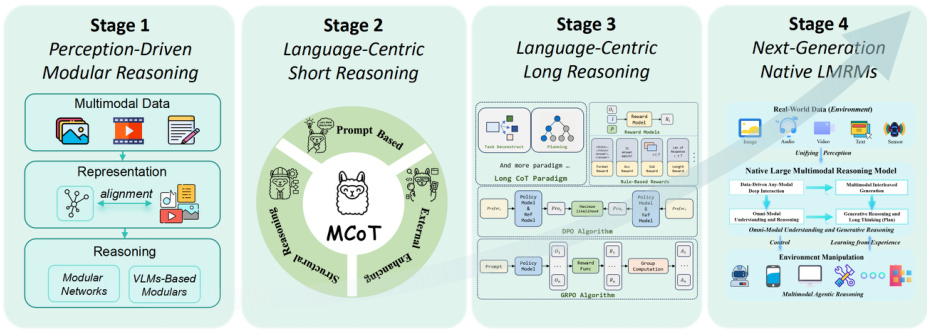
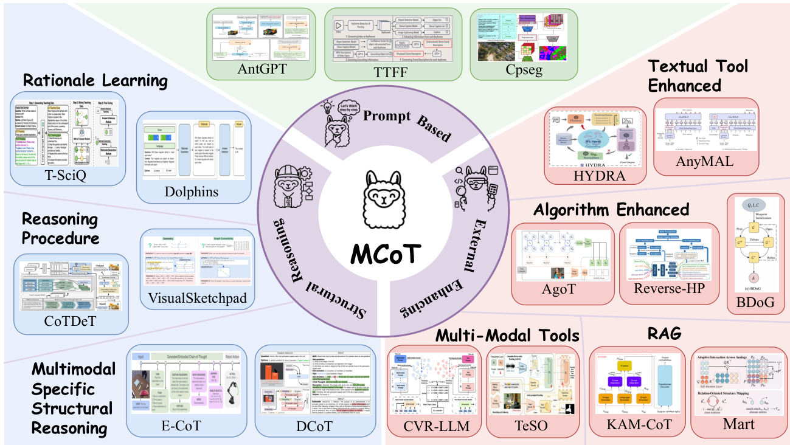
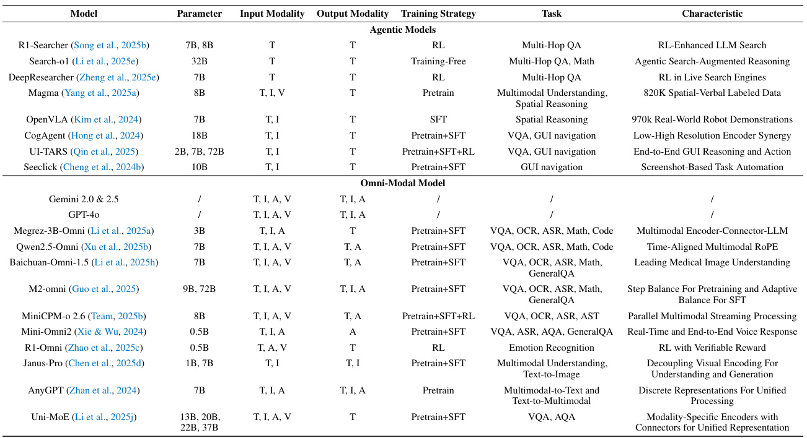
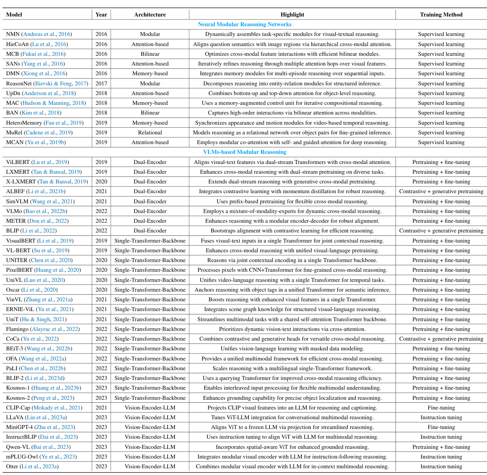
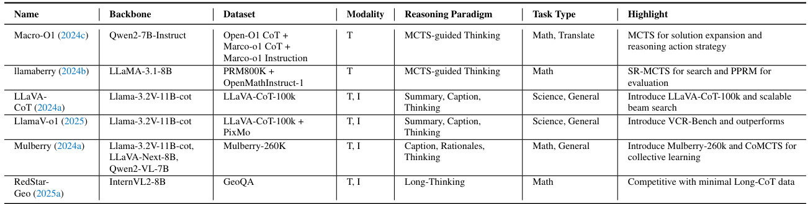

Perception, Reason, Think, and Plan: A Survey on Large Multimodal Reasoning Models
None
Abstract
この論文を一言でいうと？
この論文は、AIにおける「推論（Reasoning）」、特に複数の情報源（テキスト、画像、音声、動画など）を賢く扱う「大規模マルチモーダル推論モデル（LMRMs: Large Multimodal Reasoning Models）」が、どのように進化してきたのか、今どんな課題に直面していて、これからどんな姿を目指していくのか（特に「ネイティブLMRMs」という新しい概念）を、4つの発展段階（ロードマップ）に沿って分かりやすく解説するものです。
推論：知能のど真ん中！ 🧠
「推論」とは、人間やAIが知的な活動を行う上で、まさに心臓部とも言える能力です。何かを意思決定したり 、情報から結論を導き出したり 、あるいはある分野で学んだ知識や経験を全く新しい別の分野に応用したり（これを般化と言います）する力のことです。
現代のAIシステムは、ますます現実世界のような、予測が難しく（オープン）、情報が曖昧だったり不完全だったりする（不確実）、そして文字だけでなく画像や音声など様々な種類の情報（これをモダリティと言います）が飛び交う（マルチモーダル）環境で動作するようになってきています。このような複雑な状況下で、AIがしっかりと安定して、かつ状況に合わせて柔軟に対応できる（適応的な）振る舞いをするためには、この「推論」の能力が絶対に欠かせません。
LMRMs：未来を切り拓くマルチモーダル推論の新星 ✨
LMRMsって何？
LMRMs とは、Large Multimodal Reasoning Models（大規模マルチモーダル推論モデル）の頭文字を取ったものです。これらのモデルは、テキスト（文章 📄）、画像（写真やイラスト 🖼️）、音声（話し声や音楽 🔊）、動画（映像 🎬）といった、複数の異なる種類の情報（モダリティ）を統合し、それらを元にして複雑な推論を行うことができる最先端のAIモデルです。
これらの情報をまとめて賢く処理！
LMRMsのゴールは？
LMRMsが目指しているのは、まるで人間がするように、様々な情報源から入ってくる情報を「包括的に知覚」（全体像をしっかり捉え）、「正確に理解」（意味を正しく把握し）、そして「深く推論する」（物事の本質や関連性を見抜く）ことです。これらを通じて、複雑な状況でも的確な判断を下せるようにすることを目指しています。
マルチモーダル推論の進化：バラバラから統一へ 📈
研究が進むにつれて、マルチモーダル推論のあり方は大きく変わってきました。
昔のやり方
昔は、情報を処理する部品（モジュール）がバラバラに分かれていて、まずは「知覚（Perception）」、つまり目で見たものや耳で聞いたものを認識することが中心でした。推論は、これらの個別のモジュールを繋いだパイプラインの中で行われていました。
今のやり方
最近では、特に「言語（Language）」を中心とした統一的なフレームワークへと進化しています。これにより、異なる種類の情報間でも、より一貫性のある理解が可能になってきています。イメージとしては、様々な情報を一旦「言葉」という共通の土俵に乗せて理解するような感じです。
性能アップの方法と残る課題 🛠️
モデルの推論能力を向上させるために、「指示チューニング（Instruction Tuning）」や「強化学習（Reinforcement Learning）」といった手法が用いられてきました。
- ✏️ 指示チューニング：モデルに「こういう風に考えてね」という指示（命令）を与えて学習させる方法。
- 🎮 強化学習：モデルが行動した結果に応じて「報酬」を与え、より良い行動を学習させる方法。
これらの技術によって、モデルの推論能力は向上してきましたが、まだ大きな課題も残っています。
まだまだ乗り越えるべき壁！
- 🌍 オムニモーダル般化 (Omni-modal generalization)：あらゆる種類の情報（テキスト、画像、音声、動画だけでなく、センサーデータなども含む）に対して、どれだけ柔軟に対応できるかという点。現状では特定の種類の情報には強くても、未知の種類の情報や組み合わせには弱いことが多いです。
- 🤔 推論の深さ (Reasoning depth)：表面的な理解だけでなく、より深く、複雑な論理関係を辿って推論できるかという点。人間のように何段階も思考を重ねることはまだ難しいです。
- 🤖 エージェント的振る舞い (Agentic behavior)：単に情報処理するだけでなく、自律的に目標を設定し、計画を立て、行動できるかという点。まるで賢いエージェント（代理人）のように振る舞えるようになるには、まだ道のりがあります。
この論文の目的：マルチモーダル推論の全体像を整理！ 🗺️
これらの課題に取り組むために、この論文では、マルチモーダル推論研究の包括的かつ構造化されたサーベイ（広範囲な調査・概観）を提示します。そのために、研究分野のデザイン思想の移り変わりや、新たに登場してきた能力を反映した4段階の発展ロードマップを提案しています。
図1: 大規模マルチモーダル推論モデルの核心的な発展経路
図1のポイント解説
この図は、LMRMsがどのように進化してきたかを示しています。左から右へ、時代が進むにつれてモデルの構造や考え方が変わってきているのが分かります。
- Stage 1: 昔の「モジュール型」。個別の部品で処理。
- Stage 2: 「言語中心の短い推論」。LLMを使い始めたけど、まだ単純。
- Stage 3: 「言語中心の長い推論」。より複雑な思考や計画が可能に。
- Stage 4: 未来の「ネイティブLMRMs」。真にマルチモーダルな推論へ。
矢印は、それぞれのステージが次のステージへと発展していく流れを示しており、全体としてより高度で統合された推論能力へと向かっていることが見て取れます。
4段階の発展ロードマップ 🛣️
最初の段階では、特定のタスク専用のモジュールを組み合わせて推論を行っていました。この段階では、「表現（Representation）」、「アライメント（Alignment）」、「融合（Fusion）」といった処理の各段階に、推論が暗黙的に埋め込まれていました。
- 🧩 表現：各モダリティの情報をコンピュータが扱える形に変換すること。
- 🤝 アライメント：異なるモダリティ間の対応関係を見つけること（例：画像のこの部分が、テキストのこの単語に対応する）。
- 🔗 融合：複数のモダリティの情報を統合すること。
次の段階では、推論をマルチモーダル大規模言語モデル（Multimodal LLMs）に統一するアプローチが登場します。ここでは、マルチモーダル思考連鎖（MCoT: Multimodal Chain-of-Thought）やマルチモーダル強化学習といった技術の進展により、より豊かで構造化された推論の連鎖が可能になりました。
- 🔗 マルチモーダル思考連鎖 (MCoT)：人間が問題を解くときに「えーっと、まずこうして、次にこうして…」と段階的に考えるように、モデルにも推論の途中経過を生成させる手法。これにより、より複雑な問題に対応しやすくなります。
最後に、この論文では、挑戦的なベンチマーク（性能評価指標）や、OpenAIのO3やO4-miniといった最新モデルの実験事例から得られた経験的な洞察に基づいて、ネイティブ大規模マルチモーダル推論モデル（N-LMRMs: Native Large Multimodal Reasoning Models）という概念的な方向性について議論します。
N-LMRMsの目指すもの
N-LMRMsは、複雑な現実世界の環境において、スケーラブル（大規模化可能）で、エージェント的（自律的）で、適応的（柔軟）な推論と計画をサポートすることを目指しています。
これは、これまでの「既存の言語モデルに後からマルチモーダル機能を追加する」のではなく、最初から「あらゆる情報を自然に扱えるように設計された」モデルを意味します。
過去のトレンドと最新の研究を統合することで、このサーベイ論文は、マルチモーダル推論の現在の状況を明確にし、次世代のマルチモーダル推論システムの設計に役立つ情報を提供することを目的としています。
要するに、このアブストラクトは… 📌
AIの「推論」能力、特にテキスト、画像、音声、動画など複数の情報を扱う「マルチモーダル推論」の重要性を説き、その進化の歴史を振り返りつつ、現在の課題と、より人間に近い高度な推論を目指す「ネイティブLMRMs」という将来像を提示しています。そして、この分野の研究の現在地を整理し、未来の研究開発への道筋を示すことを目指しています。
Contents
この「Contents」セクションは、本論文「Perception, Reason, Think, and Plan: A Survey on Large Multimodal Reasoning Models」の全体構造を示す目次です。
読者の皆様が、広範なトピックを扱う本サーベイ論文の内容を効率的に把握し、関心のある箇所へ容易にアクセスできるよう、各章・各節のタイトルと開始ページが整理されています。✏️
マルチモーダル推論モデルの進化の道のりを、段階的に理解するための一覧ガイドとお考えください。
論文探検マップ：主要な寄港地 🗺️
- 1. Introduction (導入): 研究の出発点と概要
- 2. Evolving Paradigms (進化するパラダイム): マルチモーダル推論の歴史的変遷と議論
- 3. Roadmap (ロードマップ): モデル開発の3つの主要ステージ詳解
- 4. Towards Native Model (ネイティブモデルへ): 次世代モデルへの展望と技術的課題
- 5. Dataset and Benchmark (データセットとベンチマーク): モデル評価のための基盤
- 6. Conclusion (結論): 本サーベイの総括と今後の方向性
詳細な目次ガイド
本論文の導入部です。ここでは、人工知能における推論の根源的な重要性を説き起こし、特にマルチモーダル環境における推論能力がなぜ不可欠なのかを説明します。大規模マルチモーダル推論モデル（LMRM）の出現背景、その目的（包括的な知覚、正確な理解、深い推論）、そして現在のLMRMが直面している課題（汎化能力、推論の深さ、エージェント的振る舞いなど）を概観します。最後に、本サーベイ論文がこれらの課題にどう貢献し、どのような構成で議論を展開していくのかを示します。 論文全体の羅針盤となるセクションです！🧭
マルチモーダル推論の進化の軌跡をたどります。初期のモジュール型システムから、近年の言語中心フレームワークへの移行など、設計思想の変遷を4つの主要な段階（ステージ1～4）に分けて解説します。各ステージのモデルデザイン、能力、技術的課題を概説し、本サーベイが取り上げるトピックの背景と動機を明確にします。 推論モデルの歴史ロマンを紐解きます！📜
マルチモーダル推論モデル開発のロードマップを詳細に解説します。以下の3つのステージに分類し、それぞれの特徴や代表的な手法を深掘りします。
-
3.1 Stage 1 Perception Driven Modular Reasoning (知覚駆動型モジュラー推論): タスク特化型推論モジュールの開発 (p. 6)
- 3.1.1 Modular Reasoning Networks (モジュラー推論ネットワーク) (p. 6)
- 3.1.2 Vision-Language Models-based Modular Reasoning (視覚言語モデルベースのモジュラー推論) (p. 8)
-
3.2 Stage 2 Language-Centric Short Reasoning (言語中心型短期推論 - System-1推論) (p. 10)
- 3.2.1 Prompt-based MCoT (プロンプトベースMCoT) (p. 10)
- 3.2.2 Structural Reasoning (構造化推論) (p. 11)
- 3.2.3 Externally Augmented Reasoning (外部拡張型推論) (p. 13)
-
3.3 Stage 3 Language-Centric Long Reasoning (言語中心型長期推論 - System-2思考・計画) (p. 15)
- 3.3.1 Cross-Modal Reasoning (クロスモーダル推論) (p. 15)
- 3.3.2 Multimodal-O1 (マルチモーダルO1) (p. 16)
- 3.3.3 Multimodal-R1 (マルチモーダルR1) (p. 18)
モデル進化の各段階を詳細にナビゲート！🚗💨
ネイティブ大規模マルチモーダル推論モデル（N-LMRM）という先進的な概念を導入し、その実現に向けた展望と技術的課題を論じます。
- 4.1 Experimental Findings (実験的知見) (p. 19)
- 4.2 Capability of N-LMRMs (N-LMRMの能力) (p. 21)
- 4.3 Technical Prospects (技術的展望) (p. 24)
AIの未来を形作る、次世代モデルの設計図を探ります！💡
マルチモーダル推論モデルの性能評価に不可欠なデータセットとベンチマークを整理し、紹介します。能力別に4つの主要カテゴリに分類しています。
-
5.1 Multimodal Understanding (マルチモーダル理解) (p. 28)
- 5.1.1 Visual-Centric Understanding (視覚中心理解) (p. 28)
- 5.1.2 Audio-Centric Understanding (聴覚中心理解) (p. 30)
-
5.2 Multimodal Generation (マルチモーダル生成) (p. 31)
- 5.2.1 Cross-modal Generation (クロスモーダル生成) (p. 31)
- 5.2.2 Joint Multimodal Generation (統合マルチモーダル生成) (p. 32)
-
5.3 Multimodal Reasoning (マルチモーダル推論) (p. 33)
- 5.3.1 General Visual Reasoning (一般的視覚推論) (p. 33)
- 5.3.2 Domain-specific Reasoning (特定領域推論) (p. 33)
-
5.4 Multimodal Planning (マルチモーダル計画) (p. 34)
- 5.4.1 GUI Navigation (GUIナビゲーション) (p. 34)
- 5.4.2 Embodied and Simulated Environments (実体化・シミュレーション環境) (p. 34)
- 5.5 Evaluation Method (評価方法) (p. 35)
モデルの実力を測るための「ものさし」を詳しく解説！📊
本サーベイ論文の結論です。マルチモーダル推論モデルの進化を総括し、現在の課題と今後の研究方向性を示唆します。特に、言語中心のアーキテクチャを超えた、本質的にマルチモーダルな大規模モデルの必要性を強調し、そのための3つのコア能力（マルチモーダルエージェント推論、オムニモーダル理解と生成的推論）を提案します。 研究の集大成と未来への提言がここに！✨
この目次の歩き方
各セクションは、論文の論理的な流れに沿って配置されています。興味のあるキーワードやトピックが含まれるセクションから読み進めることで、効率的に情報を得ることができます。特に、太字で示された主要な概念や、ページ番号を参考に、論文全体像を掴んでください。
マルチモーダル推論と議論の進化するパラダイム
✏️ マルチモーダル推論の進化は、知覚的な入力と構造化された認知プロセスがより深く統合される方向へと、いくつかの重要なパラダイムシフトを経てきました。このセクションでは、マルチモーダル推論システムの発展における主要な4つの段階を概観します。
各段階は、それぞれ異なるモデル設計、能力、そして技術的課題を特徴としています。この歴史的な視点を通して、現在の研究分野の位置づけを理解し、今後の研究の方向性や動機を明らかにしていきます。
Stage 1
知覚駆動型モジュラー推論
Stage 2
言語中心の短期推論 (System-1)
Stage 3
言語中心の長期推論 (System-2)
Stage 4
ネイティブな大規模マルチモーダル推論モデルへ (展望)
Stage 1: 知覚駆動型モジュラー推論 - タスク特化型推論システムの設計
📌 この初期段階では、マルチモーダル推論能力は、モジュール化された、タスク特化型の推論モジュールを通じて開発されました。代表的なものとして、(Andreas et al., 2016; Yang et al., 2016; Xiong et al., 2016) などが挙げられます。
複雑なシステムを、それぞれ特定の機能を持つ独立した部品（モジュール）に分割して設計するアプローチです。マルチモーダル推論では、データの種類や処理段階ごとにモジュールを分けることで、開発や理解を容易にしようとしました。
これらのシステムは、一般的に畳み込みニューラルネットワーク (CNN) や 長・短期記憶 (LSTM) ネットワークといったリカレントアーキテクチャを、教師あり学習の枠組み内で使用していました。
- 限られたマルチモーダルデータ
- 未熟なニューラルアーキテクチャ
- 未発達な学習方法論
これらの課題のため、初期の研究では推論プロセスを以下の4つの独立したコンポーネントに分解するモジュラーデザインが採用されました (§3.1.1参照)。
- 表現 (Representation): 各モダリティの情報をどのように数値化するか。
- アライメント (Alignment): 異なるモダリティ間の対応関係をどう見つけるか。
- 融合 (Fusion): 複数のモダリティ情報をどう統合するか。
- 推論 (Reasoning): 統合された情報からどのように結論を導くか。
図: モジュール化された推論プロセス
その後、研究分野が徐々に事前学習-ファインチューニングパラダイム (Devlin et al., 2019; Radford et al., 2018, 2021) へと移行するにつれて、大規模なマルチモーダルデータセットとより深いニューラルネットワークの出現が、事前学習済み視覚言語モデル (VLM) (Chen et al., 2020; Li et al., 2020; Yu et al., 2022, 2021) の台頭を促進しました。これらのVLMは、表現、アライメント、融合のプロセスを統一することを目指しました (§3.1.2参照)。
しかし、この統一は主に視覚表現とクロスモーダル融合に重点を置いており、言語の深い意味論的モデリングはしばしば犠牲にされました。結果として、推論プロセスは頻繁に分類ベースのパラダイムに頼ることになり、文脈を理解した汎用的な推論能力は限定的でした。マルチモーダル推論システムは依然として追加のモジュールやタスク固有の改良に依存していました。全体として、この段階での推論は、基礎となる知覚処理とニューラル計算によって暗黙的なままでした。
📝 今後登場するマルチモーダル言語モデルは、強力な言語モデルと大規模な視覚データを導入することで、この暗黙的な推論能力を強化していくことになります。
Stage 2: 言語中心の短期推論 - システム1推論
🗣️ マルチモーダル大規模言語モデル (MLLM) (Liu et al., 2023a; Bai et al., 2023; Chen et al., 2024j; Zhang et al., 2023c) の登場は、マルチモーダル推論における重要な転換点となりました。これにより、モジュラーシステムからエンドツーエンドの言語中心的フレームワークへと移行しました。これらのモデルは、視覚的コモンセンス推論 (VCR) (Zellers et al., 2019; Yu et al., 2024c)、視覚的質問応答 (VQA) (Goyal et al., 2017; Singh et al., 2019)、視覚的グラウンディング (Peng et al., 2023; Rasheed et al., 2024; Liu et al., 2024f; Lai et al., 2024; Rasheed et al., 2024; Ren et al., 2024) といったタスクで強力な性能を達成しました。
しかし、初期のMLLMアーキテクチャは、主に表面的なパターンマッチングや静的な知識検索に依存しており、動的な仮説生成、多段階の論理的進行、文脈に応じた適応といった点では不十分でした。
この限界が、思考の連鎖 (Chain-of-Thought; CoT) 推論 (Kojima et al., 2022) の開発を触発しました。CoTは、暗黙的な推論を明示的な中間ステップへと変換し、思考プロセスをエンドツーエンドの生成内部に組み込むものです。Stage 1のマルチモーダル融合の表現能力とLLMの言語的表現力を組み合わせることで、CoTはより文脈に即した解釈可能な推論を可能にします。
CoTからMCoTへ！
純粋な言語モデルにおけるCoTの成功に基づき、研究者たちはマルチモーダル思考の連鎖 (Multimodal Chain-of-Thought; MCoT) (Zhang et al., 2023g; Fei et al., 2024; Zhang et al., 2023b; Shao et al., 2024) の開発を通じて、これをマルチモーダル領域へと拡張しました。
MCoTの初期アプローチは主に以下の通りです：
- 1 プロンプトベースの適応 (§3.2.1): 注意深く作成された指示により、モデルが段階的なマルチモーダル推論トレースを生成できるようにする。
- 2 構造化された推論パス (§3.2.2): 推論パスの構造的な分解を導入することで推論プロセス自体を強化する。
- 3 外部ツール・検索拡張 (§3.2.3): 外部ツールや検索拡張を利用して、モデルの静的な知識を超える推論能力を拡張する。
💡 システム1推論 (System-1 Reasoning)
この段階の推論は、主に短く、反応的なものであり、心理学でいうところの速く直感的なシステム1推論の特性を持っていました。モデルは馴染みのあるタスクや範囲が限定された問題には効果的でしたが、抽象化、構成性、プランニングといった能力には課題がありました。これらの課題が、より慎重で構造化された推論パラダイムの開発を促し、次の大きな変革への舞台を設定しました。
Stage 3: 言語中心の長期推論 - システム2思考とプランニング
🧠 MCoTはMLLMの推論能力を大幅に向上させましたが、実世界の複雑なマルチモーダルタスク (Zhang et al., 2024f; Yu et al., 2024c; Yue et al., 2024) に対処するには依然として不十分でした。ほとんどのMCoT手法は、短く反応的な連鎖で動作し、これは速く直感的なシステム1推論に似ています。これらのアプローチは、馴染みのある問題や限定された問題には効果的ですが、抽象化、構成性、長期的な推論、適応的な計画 (DeepSeek-AI et al., 2025) には苦戦します。
このギャップを埋めるため、最近の研究はシステム2推論 (Yao et al., 2023b; Kahneman, 2011) に触発された推論へと向かっています。これは、より遅く、慎重で、方法論的に構造化された認知プロセスを重視します。この観点では、推論は単なる機能としてではなく、知的行動そのものの中核要素として扱われます。
MCoTを以下の3つの重要な次元で拡張することが、より深く、転移可能で、認知的に根拠のある推論が可能な新しいクラスのモデル、すなわち大規模マルチモーダル推論モデル (LMRM) への重要な軌道となっています。
- 推論モダリティ (Reasoning Modalities)
- 推論パラダイム (Reasoning Paradigms)
- 学習方法 (Learning Methods)
1. 推論モダリティの観点から
テキスト表現のみに依存すると、モダリティ固有の知識を捉えるモデルの能力が制約されます。最近の研究 (Lin et al., 2025a; Gao et al., 2024a; Li et al., 2025b; Zhou et al., 2024b; Rose et al., 2023) は、視覚、聴覚、言語の信号を推論の共同基盤として活用するクロスモーダル推論連鎖を導入し、より豊かな意味的グラウンディングとより忠実な情報統合を可能にしています (§3.3.1参照)。
2. 推論パラダイムの観点から
研究者たちは、より長く、より質の高い連鎖を構築し、一般化された方法論的に誘導される推論戦略を導入しています (Jaech et al., 2024; Yao et al., 2024a)。これらのアプローチにより、モデルは複雑なタスクを自律的に分解し、多様な文脈で転移可能な手順を適用できます。特に、O1ファミリー (例: GPT-4o (Hurst et al., 2024)) は、認知的に要求の高い幅広いマルチモーダルタスクにおいて、人間レベルに近い性能を示しています (§3.3.2参照)。
3. 学習方法の観点から
強化学習によって強化されたマルチモーダル推論がますます勢いを増しています。エージェント的データ、反復的なフィードバック、長期的な最適化目標を取り入れることで、DeepSeek-R1 (DeepSeek-AI et al., 2025) のようなモデルは、計画能力、頑健性、適応的な汎化能力を向上させています。この一連の研究は、スケーラブルで方法論的に根拠のあるマルチモーダル推論を重視する新世代のR1ライクモデルの出現を触発しています (§3.3.3参照)。
これらの発展は、反応的な推論パラダイムから審議的な推論パラダイムへのより広範な移行を反映しており、LMRMを開かれた動的な環境における適応的なシステムレベルの知能の達成に近づけています。
Stage 4: ネイティブな大規模マルチモーダル推論モデルへ (展望)
🚀 LMRMは思考の拡張された連鎖を通じて複雑なタスクに対処する可能性を示していますが、その言語中心のアーキテクチャは重大な制約を課しています (Kumar et al., 2025; Pfister & Jud, 2025)。
- モダリティの偏り: 主に視覚と言語モダリティ (例: テキスト、画像、ビデオ) に焦点を当てているため、音声、触覚信号、センサーデータ、時系列データなどが深く絡み合う実世界の状況への適用性が限定されます。言語によって生成された推論だけでは、マルチモーダルな生成的思考、反省、制御をサポートするには不十分なことがよくあります。
- インタラクション能力の不足: 現在のモデルは、インタラクティブで長期的な推論や適応的な計画において欠陥を示しています。静的な設定では拡張された推論連鎖を生成できますが、動的な環境とのリアルタイムで反復的なインタラクションに従事する能力は未発達です。
これらのギャップに対処するため、我々は機械知能における潜在的なパラダイムシフトとして、ネイティブ大規模マルチモーダル推論モデル (N-LMRM) の開発を展望しています (§4参照)。従来のLMRMが言語モデルに補助的なモダリティプロセッサを後付けするのとは対照的に、N-LMRMは、マルチモーダルな理解、生成、エージェント的推論を完全にエンドツーエンドのアーキテクチャ内でネイティブに統一するように設計されます。
N-LMRMのコアコンセプト
VideoPoet (Kondratyuk et al., 2024) のように、実世界のデータ型は統一された表現空間内にエンコードされ、大規模な合成データはあらゆるモダリティインタラクションの環境における推論と計画の包括的な学習を促進します。この進化は、以下の2つの変革的な能力にかかっています。
N-LMRMはエージェント的知能を体現し、複雑な環境との積極的で目標指向のインタラクションを可能にします。具体的には:
- 長期計画: 階層的なタスク分解と、拡張されたインタラクションにおける一貫性のための記憶強化型推論。
- 動的適応: 環境フィードバックに基づくリアルタイムの戦略調整。
- 身体化された学習: シミュレートされた、または物理的なインタラクションを通じてモデルが学習することを可能にする閉ループ訓練フレームワークによる、より良い汎化。
N-LMRMは、モダリティ固有のエンコーダとデコーダを超え、スムーズなクロスモーダル合成と分析のための統一された表現空間を利用します。これには以下が含まれます:
- 異種データ融合: 多様なデータ型の共同埋め込み。
- 文脈的マルチモーダル生成: 複合出力の一貫した作成。
- モダリティ非依存推論: 新規またはクロスモーダルデータをタスク非依存的に処理するための適応可能な処理パイプライン。
総合すると、モジュラーな知覚駆動システムから、出現しつつあるネイティブなマルチモーダル推論システムへの進化は、より統一的で、適応的で、包括的な高レベルAIシステムへの明確な軌跡を示しています。以降のセクションでは、各段階、その代表的なモデル、そしてマルチモーダル推論の未来を形作る新たな研究方向について詳細な分析を提供します。
Roadmap of Multimodal Reasoning Models 6
このセクションでは、マルチモーダル推論モデル（Multimodal Reasoning Models）がどのように進化してきたか、その道筋（ロードマップ）を辿ります。この進化の過程は、モデルの設計思想の変化や新たな能力の獲得を反映しており、大きく分けて3つの主要なステージで構成されています。
- ステージ1：知覚駆動型のモジュラー推論 - タスク特化型推論モジュールの開発
- ステージ2：言語中心の短期推論（システム1推論） - プロンプトや構造化による効率的な推論
- ステージ3：言語中心の長期推論（システム2思考・計画） - より複雑な思考と計画能力の獲得
これらのステージを通じて、マルチモーダル推論がどのように発展し、より高度で汎用的な能力を獲得してきたのかを詳しく見ていきましょう。✏️
3.1 Stage 1 Perception Driven Modular Reasoning - Developing Task-Specific Reasoning Modules
マルチモーダル推論の初期段階では、いくつかの制約がありました。
限られたマルチモーダルデータ
未成熟なニューラルネットワークアーキテクチャ
発展途上の学習手法
これらの理由から、モデルは特定のタスクに合わせて調整されることが一般的でした。この時代のモデルは、マルチモーダルな表現 (Representation)、整合 (Alignment)、融合 (Fusion)、そして推論 (Reasoning) を実現するために、それぞれ異なるモジュール（部品）を組み合わせて構成されていました。モデルのアーキテクチャや学習アプローチに基づき、このステージのモデルは「モジュラー推論ネットワーク」と「事前学習済み視覚言語モデル（VLM）ベースのモジュラー推論」に大別できます。
3.1.1 Modular Reasoning Networks (モジュラー推論ネットワーク)
初期のアプローチでは、汎用的な畳み込みニューラルネットワーク (CNN) や 長短期記憶 (LSTM) ネットワークをバックボーンとして使用し、マルチモーダルデータから答えを導き出していました。しかし、これらはすぐに、知覚的な手がかりに基づいて推論をモジュール化するアーキテクチャによって改良されていきました。📌
Neural Module Networks (NMN)
タスク特化モジュールを動的に組み立て、視覚的特徴とテキスト的特徴を合成。静的な融合を置き換えました。
Hierarchical Co-Attention (HieCoAtt)
質問のセマンティクスと画像領域を階層的に整合させるため、モジュラーなクロスモーダルアテンションを導入しました。
Multimodal Compact Bilinear Pooling (MCB)
効率的な学習可能なバイリニアモジュールを通じて特徴量の相互作用を最適化しました。
Stacked Attention Networks (SANs)
視覚的特徴に対する反復的なアテンションホップを介して推論をモジュール化しました。
Dynamic Memory Networks (DMN)
連続的な入力に対する複数エピソードの推論のためにメモリモジュールを統合しました。
ReasonNet
構造化された推論のために、推論をエンティティ・リレーションモジュールに分解しました。
UpDn
オブジェクトレベルの特徴を推論（例：VQA-v2）のために優先するためのボトムアップおよびトップダウンアテンションを導入しました。
MAC (Memory, Attention, Control)
反復的な合成推論のためにメモリ拡張制御ユニットを採用しました。
BAN (Bilinear Attention Networks)
モダリティ間でバイリニアアテンションネットワークを使用して高次の相互作用を捉えました。
HeteroMemory
時間的融合を用いて外観モジュールと動きモジュールを同期させることで、モジュール性をビデオに拡張しました。
MuRel
オブジェクトペア上のリレーショナルネットワークとして推論をモデル化し、詳細な推論を実現しました。
MCAN
自己注意と誘導注意を伴うモジュラーな共同注意を用い、深いクロスモーダル推論を実現しました。
これらの進歩は、アテンションメカニズム、メモリコンポーネント、合成モジュールを組み込んだ知覚駆動設計 (perception-driven designs) が、特定のタスク要件に合わせた詳細な推論をどのように促進するかを示しています。しかし、Transformer アーキテクチャの登場と、事前学習・ファインチューニング (pretraining-finetuning) 学習スキームの組み合わせは、マルチモーダルな表現、整合、融合を大きく前進させました。特に、Transformerベースの事前学習済みVLMは、データとモデル内部での視覚情報とテキスト情報の統合を強化し、それによって知覚駆動の推論能力を可能にしました。
3.1.2 Vision-Language Models-based Modular Reasoning (VLMベースのモジュラー推論)
これらの視覚言語モデル (VLMs) は、大規模な画像とテキストのペアで訓練され、NLVR2 (自然言語視覚推論)、TVQA (テレビ番組質問応答)、GQA (グラフ質問応答)、OK-VQA (知識ベースVQA)、VCR (視覚コモンセンス推論)、ScienceQA (科学質問応答) のような知覚駆動型の推論タスクを進化させました。
具体的には、VLMはTransformerを導入し、大規模な画像-テキストデータを利用して、マルチモーダルな表現、知覚、融合、そして推論のプロセスを統一しようとしました。以下に、事前学習済みVLMベースのモジュラー推論の3つの主要なタイプを示します。
1. Dual-Encoder Contrastive Reasoning (デュアルエンコーダ対照推論)
これらのモデルは、2つのストリーム（視覚用とテキスト用）を持つアーキテクチャと対照学習 (contrastive learning) を活用し、クロスモーダルな相互作用を通じて視覚特徴とテキスト特徴を動的に整合させ、推論を行います。
代表的なモデル:
例: ViLBERTはデュアルストリームTransformerとクロスモーダルアテンションを使用し、動的な特徴整合を実現します。CLIPは対照事前学習を利用して、整合された埋め込み表現を介したゼロショット推論を可能にします。
2. Single-Transformer-Backbone Interactive Reasoning (単一Transformerバックボーン対話型推論)
このパラダイムでは、視覚入力とテキスト入力が単一のTransformerに埋め込まれ、統一されたエンコーディング手法を通じて直接的なクロスモーダル推論が可能になります。
代表的なモデル:
例: VisualBERTは視覚入力とテキスト入力を単一のTransformerに融合し、共同文脈エンコーディングを通じて推論します。PaLIは単一Transformer推論を多言語フレームワークで拡張し、クロスリンガルな推論を実現します。
3. Multimodal LLMs-based Implicit Reasoning (マルチモーダルLLMベースの暗黙的推論)
このアプローチでは、視覚入力を大規模言語モデル（LLM）のテキスト空間に投影し、LLMの文脈推論能力を活用してマルチモーダル推論の性能を向上させます。これらのアーキテクチャは、事前学習済みの視覚エンコーダとLLMを含み、「視覚エンコーダ-LLM」という構造をとります。
代表的なモデル:
例: LLaVAは、ViT (Vision Transformer) とLLMの統合を調整することで対話型の推論を可能にし、複雑なVQAタスクに対応できるようスケーリングします。
これら3種類のモデルのアーキテクチャ革新は、タスクに対するマルチモーダル推論を大幅に進歩させましたが、事前定義された特徴の整合や文脈エンコーディングへの依存は、反復的または合成的な推論を必要とする複雑な多段階推論シナリオへの対応能力をしばしば制限します。これらの制約は、LLMの開発のように、タスクを動的に分解し、中間的な推論ステップを統合し、知覚と推論を適応的に整合させて、多様なマルチモーダル課題に対してより堅牢で汎用的な性能を発揮できる、マルチモーダル思考連鎖 (Multimodal Chain-of-Thought, MCoT) 推論（セクション3.2で詳述）の必要性を浮き彫りにしています。
Takeaways: Perception-Driven Modular Reasoning
初期のマルチモーダルモデルは、主に情報の表現、整合、融合に焦点を当てていました。これらのモデルにおける推論はしばしば暗黙的であり、通常、タスク特化型の別の推論モジュールが必要でした。最近では、マルチモーダル大規模言語モデル、特に視覚エンコーダ-言語モデル構造を採用したものが、統一されたマルチモーダル推論アーキテクチャを実現し、マルチタスク推論性能の向上を示しています。
3.2 Stage 2 Language-Centric Short Reasoning - System-1 Reasoning
大規模なマルチモーダル事前学習の出現により、マルチモーダル大規模言語モデル (MLLM) は、創発的な推論能力を示し始めました。しかし、このような推論はしばしば表面的で、明示的な論理プロセスではなく、主に暗黙的な相関関係に依存しています。マルチモーダル思考連鎖 (MCoT) は、この限界を軽減するためのシンプルかつ効果的なアプローチとして登場しました。MCoTは、中間的な推論ステップを組み込むことにより、大規模な教師あり学習や大幅なアーキテクチャ変更を必要とせずに、クロスモーダルな整合、知識統合、文脈的グラウンディングを改善します。
このステージでは、既存のアプローチを3つのパラダイムに分類します。
- プロンプトベースのMCoT (Prompt-based MCoT)
- 事前定義されたパターンによる構造的推論 (Structural reasoning with predefined patterns)
- 軽量な外部モジュールによるツール拡張推論 (Tool-augmented reasoning with lightweight external modules)
3.2.1 Prompt-based MCoT (プロンプトベースMCoT)
プロンプトベースMCoT メソッドは、テキストベースのCoTパラダイムをマルチモーダルな文脈に拡張し、モダリティ間で段階的な推論を可能にします。これは、解釈可能性が高く、追加のトレーニングを最小限に抑えることができるという特徴があります。📝
視覚推論 (Visual Reasoning)
- IPVR: 「見る→考える→確認する」という構造化されたプロンプティングフレームワークを提案。LLMを視覚的グラウンディングと根拠検証を通じて誘導します。
- VIC: 幻覚を軽減し精度を向上させるために、視覚入力の前にテキストによる推論連鎖をプロンプトします。
ビデオ理解 (Video Understanding)
- VoT: 時空間シーングラフを活用し、低レベルの知覚から高レベルの解釈へと進むプログレッシブな推論をプロンプトします。
- VideoAgent: LLMが調整するシステムで、最小限のフレーム使用で長いビデオから重要な情報を反復的にプロンプトします。
- LET: VIPデータセット上でフレームごとのプロンプティング戦略を採用し、ビデオの補完と予測のための時間的推論を誘導します。
ドメイン特化アプリケーション (Domain-specific Applications)
- PKRD-CoT: 知覚、知識、推論、意思決定にわたる自動運転の推論を構造化するゼロショットプロンプティングフレームワークを導入。
- LPE: 発話内容と感情的な手がかりに関するプロンプトベースの推論を使用し、共感的な応答を生成します。
- EMER: マルチモーダル感情認識においてプロンプティングを適用し、単一モダリティの手がかりを統合し、解釈可能な予測を生成します。
タスク指向推論 (Task-oriented Reasoning)
- CoTDet: 物体検出のためのアフォーダンス知識を抽出するために、多段階プロンプティングを使用します。
- AntGPT: ビデオベースの行動シーケンスから人間の目標と時間的ダイナミクスを推測するようLLMにプロンプトします。
- CPSeg: テキストとピクセルレベルのセマンティクスを整合させ、セグメンテーションを強化するための思考連鎖プロンプトを定式化します。
3.2.2 Structural Reasoning (構造的推論)
手作りの模範例やゼロショットプロンプティングアプローチを通じて推論行動を誘導するプロンプトベースのMCoTメソッドとは異なり、構造的推論 (Structural Reasoning) は、教師あり学習を通じて推論パターンを学習することに焦点を当てています。明示的な手続き構造をモデルに統合することで、これらのアプローチは緩やかに誘導された推論を標準化された段階的なプロセスに変換し、複雑なマルチモーダルタスクにおけるスケーラビリティ、信頼性、効率を向上させます。📊
構造的推論は、以下の3つの代表的なタイプに分類されます。
図4: マルチモーダル思考連鎖における構造的推論の分類と代表的な手法
(i) Rationale Construction (根拠構築)
解釈可能な足場として、原子的な推論ステップを生成することを学習します。
代表的な研究:
- Multimodal-CoT: 根拠生成と回答予測を分離する2段階フレームワークを提案し、幻覚を低減。
- T-sciq: 教師LLMを活用して様々な複雑さの根拠を生成し、根拠の質が推論精度に重要であることを示す。
- G-CoT (自動運転): 根拠を視覚情報や過去の運転信号に明示的に関連付け、より根拠のある推論を実現。
- MC-CoT: 自己整合性戦略を用いて複数の候補の中から最も正確な根拠を選択し、小規模モデルの性能を向上。
- CLoT: Leap-of-Thoughtを介して非線形で探索的な根拠構築を促進し、創造的な推論をサポート。
(ii) Defined Reasoning Procedure (定義済み推論手順)
構造化されたテキスト推論スキームをマルチモーダル設定に適応させます。
代表的な研究:
- Cantor: 知覚段階（オブジェクト、色、形などの低レベル属性抽出）と意思決定段階（特徴統合による問題解決）を区別。
- TextCoT: 画像概要生成→粗い局在化→詳細観察の3段階プロセスを採用。
- Grounding-Prompter: グローバル理解→ノイズ評価→部分理解→予測。グローバルとローカルのセマンティクスを徐々に統合。
- Audio-CoT: 手動CoT、ゼロショットCoT、記述CoTの3つの思考連鎖推論パラダイムを利用。
- VIC: 視覚入力を統合する前にタスクをテキストベースのサブステップに分解。
- Visual Sketchpad: スケッチプロセス中に思考、行動、観察のフェーズに根拠を整理。
- DetCoT: VQA推論をサブタスクとレビューの組み合わせとして形式化。
- BDoG: ユニークなエージェントによる専用の討論と要約パイプラインを利用。
- CoTDet: リスト化、分析、要約という人間らしい手順で物体検出を実現。
- CoCoT: 入力の類似点と相違点を体系的に比較。
- SegPref: グローバル理解、音源オブジェクトフィルタリング、ノイズ除去を通じて、音源オブジェクトを視空間で正確に特定。
- EMMAX: 接地された計画アプローチと予測的な動きの技術を組み合わせる。
(iii) Modality-Specific Structural Reasoning (モダリティ特化型構造的推論)
視覚、聴覚、または身体化された入力の特性によりよく整合するように、モダリティを意識した制約と設計をさらに組み込みます。
代表的な研究:
- 領域ベースのグラウンディング (Region-based grounding):
- CoS, TextCoT: 最初に質問に基づいて関心領域を特定し、次に局所的な検査を行って解像度を損なうことなく多粒度推論を可能にする2段階パイプラインを採用。
- DCoT: バウンディングボックスグラウンディングと意味的に類似した例の検索を組み合わせたデュアルガイダンスメカニズムを導入し、詳細かつ文脈を意識した推論を強化。
- テキスト誘導による意味的強化 (Text-guided semantic enrichment):
- Shikra, TextCoT: 画像キャプションを高レベルの意味的手がかりとして活用し、空間的注意とオブジェクトグラウンディングを誘導。外部検出モジュールへの依存を減らし、より解釈可能な参照推論を促進。
- 古典的なCoTフレームワークに着想を得たアプローチ:
- DDCoT, AVQA-CoT: 複雑な視覚または視聴覚クエリを連続的なサブ質問に分解し、モダリティ間での合成推論と改善されたマルチホップ推論を可能にする。
- 身体化されたシナリオへの拡張 (Extension to embodied scenarios):
- E-CoT: タスクの言い換え、計画、低レベルの行動実行を交互に行うことで、構造化推論を身体化されたシナリオに拡張。視覚-言語-行動モデルにおける意味レベルと感覚運動レベルの両方にまたがる推論連鎖の必要性を強調。
Takeaways: Structural Reasoning
構造的推論メソッドは、質問の分解、視覚的グラウンディング、キャプション生成、要約、フェーズ、画像処理などのモジュール化されたサブタスクを統合することで、標準化された推論ワークフローを定義します。これらのアプローチは、生成タスクを明示的な段階に整理することで、解釈可能性と一貫性を向上させます。最近のトレンドでは、視覚、聴覚、または身体化された入力との推論をよりよく整合させるために、モダリティを意識した設計も取り入れられています。
3.2.3 Externally Augmented Reasoning (外部拡張推論)
外部拡張推論 (Externally Augmented Reasoning) は、モデル固有の推論能力の限界を補うために、有利なアルゴリズム、補助ツール、または専門モジュールを導入します。これらのコンポーネントは、推論時に統合されるか、トレーニング中に結合され、より柔軟でスケーラブル、かつタスクに特化した推論ワークフローを可能にします。主要な推論ステップをベースモデルから切り離すことで、このようなメソッドは、長期的な計画、正確なグラウンディング、動的またはドメイン固有の情報へのアクセスをサポートします。🛠️
外部拡張メソッドは、以下の4つのカテゴリに分類されます。
(i) 検索アルゴリズム強化MCoT
様々な検索アルゴリズムを介して推論空間を探索します。
代表的な研究: MM-ToT (DFS, BFS利用), HoT (ハイパーエッジ), AGoT (推論集約グラフ), BDoG (3エージェント討論)
(ii) ツールベース拡張
外部の言語ツールやシステムを活用して推論実行を誘導します。
代表的な研究: L3GO (GPT-4+ControlNetで3Dメッシュ構築), HYDRA, Det-CoT (LLMをプランナー、命令生成器、エラー診断器、推論コントローラーとして利用), Chain-of-Image (中間画像生成), AnyMAL (テキスト空間へのモダリティ統一), SE-CMRN (GCNで構文手がかり利用)
(iii) 検索拡張推論 (RAG)
外部ソースから関連するマルチモーダル知識を推論パスに組み込みます。
代表的な研究: RAGAR (政治的ファクトチェック), Chain-of-Action (異種ソースからの情報検索), KAM-CoT (知識グラフ利用), AR-MCTS (動的ステップワイズ検索+MCTS), MR-MKG (MMKGからのトリプル検索), Reverse-HP (SDKG-11利用), MarT (構造マッピング理論)
(iv) マルチモーダル強化
知覚駆動推論をサポートするために特化したマルチモーダルモジュールを組み込みます。
代表的な研究: MCoT-Memory (メモリ検索とシーングラフ更新), MGCoT (ViT-L, Stanford CoreNLP, OpenIE利用), CCoT (シーングラフ生成+応答生成), CVR-LLM (文脈認識画像記述+テキスト・マルチモーダル因子統合), CAT (画像キャプション生成器, SAM, 命令チューニングLLM統合), VISPROG (初期生成→フィードバック→洗練の反復)
Takeaways: Externally Augmented Reasoning
外部拡張推論は、補助モジュール（検索アルゴリズム、ツールエージェント、検索システム、特化型マルチモーダルプロセッサなど）を導入し、推論プロセスの一部を支援またはオフロードします。これらのメソッドは、計画、グラウンディング、または知覚タスクをバックボーンモデルから切り離すことで、より制御可能でスケーラブル、かつタスクに適応的な推論を可能にし、しばしば長期的な推論とドメイン特化を強化します。
3.3 Stage 3 Language-Centric Long Reasoning - System-2 Thinking and Planning
構造的推論は、MLLMをより体系的な推論に導くために事前定義されたパターンを導入しますが、依然として推論の深さが浅く、適応性が限られているという制約があります。より複雑なマルチモーダルタスクに対応するため、最近の研究ではシステム2形式の推論 (System-2-style reasoning) の開発を目指しています (Kahneman, 2011)。高速で反応的な戦略とは異なり、この形式の推論は意図的 (deliberate)で合成的 (compositional)であり、明示的な計画 (planning) に基づいています。推論連鎖を拡張し、マルチモーダル入力にグラウンディングし、教師ありまたは強化学習のシグナルで訓練することにより、これらのモデルは長期的な推論と適応的な問題分解を示し始めています。🧠💡
3.3.1 Cross-Modal Reasoning (クロスモーダル推論)
クロスモーダル推論 (Cross-Modal Reasoning) とは、テキスト、画像、ビデオなどの複数のモダリティを統合し、それらにまたがって推論する能力を指します。クロスモーダル推論における最近の進歩は、モデル固有の能力や外部ツール・アルゴリズムを通じて、テキスト入力以外のマルチモーダル情報を増強することの重要性を強調しています。これらのメソッドは、多様なモダリティから補完的な情報を動的に組み込むことにより、推論の精度と堅牢性を向上させることを目指しています。🔗
外部ツール (External Tools)
§3.2.3で説明したマルチモーダル理解のための外部ツールの使用を超えて、最近のアプローチでは、マルチモーダル推論自体を目的としたツール統合がますます探求されています。
- VisProg, ProViQ: プログラム生成と手続き的実行を活用し、ビデオ質問応答、多段階視覚推論、幾何学的問題解決などの複雑なタスクを解決するための実行可能なコードまたは論理パスを動的に生成します。
- AssistGPT, MM-ReAct, Multi-Modal-Thought: PEILや視覚エキスパートプロンプティングなどのモジュラー統合フレームワークを採用し、推論の進行に基づいてツールの使用を調整します。タスク実行中に異なるツールを動的に呼び出すことで、解釈可能で適応的な推論を可能にします。
- VisualReasoner: 多段階推論トレースを生成するデータ合成戦略を導入し、これをさまざまな視覚言語バックボーンに適用可能なプラグアンドプレイの視覚推論モジュールの訓練に使用します。
これらの取り組みは、プログラム誘導、動的ツールオーケストレーション、データ駆動型推論監視を組み合わせることで、マルチモーダル推論の展望を広げます。
外部アルゴリズム (External Algorithms)
- FAST, ICoT: 両者とも人間の思考に類似した認知プロセスを活用します。FASTは高速思考モードと低速思考モードを動的に切り替えるシステムスイッチアダプタを使用し、ICoTは注意駆動選択（ADS）を利用して視覚的推論ステップとテキスト的推論ステップを交互に実行します。
- Image-of-Thought, CoTDiffusion: 視覚的な根拠の生成に焦点を当てています。Image-of-Thoughtは視覚情報を段階的に抽出し、CoTDiffusionは視覚的なサブゴールプランを作成し、アルゴリズム拡張をロボティクスにまで広げます。
モデル固有の能力 (Model-Intrinsic Capabilities)
これらのアプローチは、外部ツールなしでマルチモーダル情報を生成または推測するLMM固有の能力に依存しています。
- T-SciQ, Visual-CoT, VoCoT: 慎重に設計されたCoTデータセット（例：VoCoT-Instruct80K）でLMMをファインチューニングすることで、図表、文書、幾何学問題における単一段階のマルチモーダル推論が可能になることを示しました。
- MVoT: 身体化された推論タスクのために視覚-テキスト表現を反復的に洗練する自己完結型アーキテクチャの初期の取り組みです。
Takeaways: Cross-Modal Reasoning
クロスモーダル推論メソッドは、視覚、聴覚、およびプログラム的な手がかりをモダリティ間で統合することにより、マルチモーダル推論を強化します。代表的な戦略には、外部ツールの活用、モダリティ固有のステップを交互に行うためのアルゴリズム制御、マルチモーダル表現のモデル固有の融合などがあり、オープンエンドなタスクにおいて、よりグラウンディングされ、解釈可能で、堅牢な推論を可能にします。
3.3.2 Multimodal-O1 (マルチモーダルO1)
OpenAIのo1（GPT-4oなどのOシリーズモデルを指すと思われます）が登場し、大規模推論モデルへの関心が広まると、CoTファインチューニング (CoT fine-tuning) を利用したオープンソースの再現モデル、例えばMarco-o1やllamaberryが現れ始めました。CoTファインチューニングは、訓練手法を通じてモデル固有の低速思考能力 (slow thinking ability) を活性化させます。従来のCoTアプローチと比較して、オープンエンドな質問に対するモデルの推論能力を向上させ、自己反省と誤り訂正のメカニズムを導入します。
LLaVA-CoT、LlamaV-o1、RedStar、Mulberry は、この推論パラダイムをマルチモーダルドメインに拡張しています。テキストドメインにおける「思考 → 回答」の2段階推論パラダイムとは対照的に、これらの研究は推論プロセスを「要約（根拠）→ キャプション → 思考 → 回答」の4段階アプローチ (four-stage approach) に拡張しています。
テスト時スケーリング戦略 (Testing-time Scaling Strategies)
CoTファインチューニングに加えて、さまざまな推論戦略によるテスト時のスケーリングも、推論能力を強化するための重要な手法です。
- Best-of-Nサンプリング: 与えられたプロンプトに対して複数の応答を生成し、より良い解決策を見つけるための探索空間を拡大します。
- ビームサーチ (Beam Search): 一度に完全な応答を生成するのではなく、各ステップでスコアリングを使用して最も有望な中間出力を選択します。LLaVA-CoTとLlamaV-o1はこの手法を適用しています。
- モンテカルロ木探索 (MCTS): 複数の解決パスの並行探索を可能にし、ビームサーチと比較してより洗練された探索プロセスを保証します。Marco-o1、llamaberry、Mulberryは、このアプローチを推論モデルの生成プロセスにうまく統合しています。
図5: 最近のマルチモーダルO1ライクおよびR1ライクモデルのタイムライン（上）とコアコンポーネント（下）。上部は代表的なモデルの時系列的な出現を示しています。下部は、構造化推論パラダイム、強化学習アルゴリズム（例：DPOおよびGRPO）、ルールベースの報酬モデルの設計など、主要なコンポーネントを要約しています。
Takeaways: Multimodal-O1
Multimodal-O1モデルは、多段階の生成構造、長期的な推論、および構造化された教師あり学習を通じてCoTワークフローを深化させることにより、システム1推論を拡張します。根拠が豊富なデータでのファインチューニングと、ビームサーチやMCTSなどの計画アルゴリズムによって強化され、これらのモデルはより首尾一貫し、解釈可能で、スケーラブルなマルチモーダル推論を実現します。
3.3.3 Multimodal-R1 (マルチモーダルR1)
強化学習におけるDirect Preference Optimization (DPO) は、近年、大規模マルチモーダルモデルの推論能力を強化するために広く使用されています。RLHF-V、LLaVA-Reasoner、Insight-V は、自己構築された大量の嗜好データを利用し、DPOアルゴリズムを直接適用して訓練することにより、モデルの推論能力をある程度向上させました。MMPR はDPOアルゴリズムに変更を加え、DPOの嗜好損失に加えて、バイナリ分類器から得られる品質損失と従来のSFTからの生成損失を追加し、モデルのCoT能力を効果的に強化しました。
Deepseek-R1の成功に伴い、Group Relative Policy Optimization (GRPO) アルゴリズムがマルチモーダル大規模モデルで広く適用され始めました。MM-EUREKA、Vt-R1、LMM-R1、R1-V などの研究は、テキストドメインと同様のアプローチを採用し、GRPOアルゴリズムを数学的幾何学問題に適用し、反射現象をうまく実証しました。VLM-R1、Visual-RFT、Seg-Zero は、GRPOアルゴリズムを利用して、グラウンディング、検出、分類などのマルチモーダル大規模言語モデルの視覚能力を強化しています。この強化学習アプローチは、モデルの視覚能力の向上に成功しています。
さらに、Video-R1やVideoChat-R1などの研究はGRPOアルゴリズムをビデオモダリティに導入し、R1-Omniはこれをさらにオーディオモダリティに拡張しました。それにもかかわらず、既存の研究はしばしば特定のタスクに限定されており、現在のマルチモーダル大規模モデルは、Deepseek-R1で見られるように、数学などのタスクから学習した長鎖思考能力をモデルの一般的な能力にまだ汎化できていません。
Takeaways: Multimodal-R1
Multimodal-R1メソッドは、強化学習、特にDPOとGRPOを活用し、モデルが複雑な推論パスを探索し最適化する能力を強化します。これらのアプローチは、モデルの出力を嗜好データやマルチモーダルフィードバックと整合させることにより、推論の深さ、一貫性、およびドメイン適応性を改善し、より汎用的な長期システム2推論の基礎を築きます。
Towards Native Multimodal Reasoning Model 19
このセクションでは、現在の大規模マルチモーダル推論モデル（LMRMs）が持つ可能性と、実世界の複雑なタスクに取り組む上での限界について深く掘り下げます。特に、言語中心のアーキテクチャが、多様なデータタイプを処理したり、動的な環境とリアルタイムで対話したりする能力をどのように制約しているかを分析します。
この分析を踏まえ、本セクションでは「ネイティブ大規模マルチモーダル推論モデル（N-LMRMs）」という新しい概念を提案します。これは、マルチモーダルな理解、生成、そしてエージェントとしての推論能力を、あらゆる種類のモダリティにわたって本質的に統合するよう設計された、次世代のモデルです。このビジョンは、LMRMの現状の課題を克服し、より汎用的で適応性の高いAIシステムへの道筋を示すことを目指しています。
具体的には、以下の3つの主要な柱で議論を展開します：
- 実験的所見 (4.1): 最新のLMRMが、全モーダル理解やエージェント能力を評価するベンチマークでどのような性能を示すか、特にOpenAIのo3やo4-miniといったモデルの事例研究を通じて、その限界を明らかにします。
- N-LMRMsの能力 (4.2): N-LMRMsが持つべき中核的な能力として、「マルチモーダルエージェント的推論」と「全モーダル理解および生成的推論」という2つの変革的な能力を提示し、その詳細を解説します。
- 技術的展望 (4.3): N-LMRMsを実現するために乗り越えるべき技術的課題（統一表現、インターリーブされた思考連鎖、実世界経験からの学習、データ合成など）と、それらに対する有望な研究の方向性について議論します。
このセクションを通じて、LMRMの研究開発が次の段階へ進むための洞察と指針を提供することを目指します。
4.1 Experimental Findings
LMRMは、思考の連鎖を生成し、複雑な問いに答える能力において大きな進歩を遂げてきましたが、実世界の多様な状況で役立つにはまだいくつかの課題があります。ここでは、特に以下の2つの側面からLMRMの現状を評価します。
評価範囲の拡大の必要性
現在の評価は主にテキストと画像に偏っていますが、実世界は音声、ビデオ、センサーデータなど多様な情報で溢れています。これらの全モーダル（omni-modal）を統合的に理解する能力が求められます。
エージェント能力の評価の重要性
モデルが外部環境とインタラクションし、長期的な視点で推論し、状況に応じて計画を適応的に変更する能力が重要です。これは単なる情報処理を超えた、真のエージェント的振る舞いと言えます。
Omni-modal Benchmarks (全モーダルベンチマーク)
最近の研究では、LMRMが画像、音声、テキスト、ビデオなど、様々な種類のデータを統一的に理解し推論する能力を評価するために、一連の全モーダルベンチマークが導入されています。
- ✏️ OmniMMI: ストリーミングビデオコンテキストにおけるインタラクティブ能力を評価。商用モデル（Gemini-1.5-Pro, GPT-4o）でさえ平均正解率20%未満。
- ✏️ OmniBench, TaskAnything, JudgeAnything, MixEvalL-X: 統一的なモーダル理解を要求するタスク。オープンソース・クローズドソースモデル共に、単一モーダル条件下よりも性能が大幅に低下。
- ✏️ AVQA (Audio-Video Question Answering) タスク (例: WorldSense): Claude 3.5 Sonnetで平均正解率35%、最良のオープンソースモデルで25%。
- ✏️ BabelBench, OmnixR: より困難なマルチモーダル推論タスク。モダリティ数が増加するにつれて全モデルの性能が急激に低下。特に画像、ビデオ、音声入力に対する推論パス生成がテキスト入力に比べて困難。
結論
これらの結果は、現在のLMRMが全モーダル入力を効果的に処理する能力をまだ備えていないことを示唆しています。
表7: エージェント的および全モーダルベンチマークの概要。これらのベンチマークは、現在のLMRMにおける深い推論の欠陥を明らかにします。T, I, A, Vはそれぞれテキスト、画像、音声、ビデオを表します。
Agent Benchmarks (エージェントベンチマーク)
マルチモーダルエージェントの評価設定は、その複雑さと幅広さが特徴です。以下のような多様なタスクが含まれます。
これらのベンチマークは、現実的環境とツール拡張環境の両方を含み、多様なタスクタイプとモダリティ（テキスト、視覚など）を網羅しています。
LMRMのエージェントベンチマークにおける性能については、これらのモデルは一般的に現在の性能をリードし、顕著な進歩を遂げています。しかし、最先端のモデルでさえ、人間レベルの信頼性には一貫して及ばず、複雑でオープンエンドなタスクには苦戦しています。
評価を通じて繰り返し明らかになる共通のボトルネックは以下の通りです：
- 現実世界への接地 (Real-world grounding) の失敗
- 首尾一貫した長期的な推論と計画 (Coherent long-horizon reasoning and planning) の困難さ
- 外部ツールとのシームレスな統合 (Seamless integration with external tools) の課題
- 多様なモダリティとドメインにわたる頑健性 (Robustness across diverse modalities and domains) の維持の難しさ
具体例: BrowseCompベンチマーク
GPT-4oは0.6%の正解率しか達成せず、ブラウジングツールを使用しても1.9%にしか上昇しません。これは、ツールとの対話的な計画能力が弱いことを示しています。OpenAIの推論モデルo1は9.9%に達しますが、まだ改善の余地が大きいです。特筆すべきは、OpenAI Deep Researchがウェブ検索に特化したチューニングにより、自律的な反復的なツール呼び出しと推論を通じてタスクの51.5%を完了したことです。
これらの実験結果は、現在の大規模推論モデルが長期的な推論と適応的計画において依然として不十分であり、真にネイティブなエージェントシステムへと進化するためには、特定のチューニングとアーキテクチャの強化が必要であることを強調しています。
Preliminary Study with o3 and o4-mini (o3とo4-miniによる予備研究)
最近OpenAIがリリースしたo3とo4-miniは、ChatGPTツールへの完全なエージェントアクセスを提供し、モデルが「画像で考える」ことを可能にしました。思考プロセス内で視覚コンテンツを直接統合することで、マルチモーダル推論が強化されます。
下の図6では、o3が8分13秒の思考プロセス中に明確なタスク分解を示しています。試行錯誤を通じて各サブ図を切り取る最良の方法を効果的に決定し、最終的に正しい解決策に到達しています。
o3の能力を、視覚的推論以外にも、ファイル処理、パズル解決、位置特定、マルチメディアコンテンツ作成などで評価しました。図7と図8に示すように、o3は画像内の微妙な手がかりを捉えて活用することで、複雑なマルチモーダル問題解決において強力な性能を示します。しかし、いくつかの課題も特定されました：
- 言語知識が視覚入力に干渉する可能性: 図8の指の数の事例では、画像が明確に6本の指を示しているにもかかわらず、o3は標準的な4本の指と親指を示す挙手絵文字として誤認識しています。
- 入力ファイルの処理とマルチメディアコンテンツ生成の困難さ: ツールの制約やコーディング環境でのインターネットアクセス欠如により、ファイル処理やマルチメディア作成が不正確になることがあります。図8の履歴書情報収集の事例では、履歴書PDFから解析された電話番号が誤っている可能性があり、o3は類似コンテンツを再利用して候補者のプロジェクト経験を捏造（ハルシネーション）しています。また、図7のマルチメディア作成事例では、生成されたフレームが「レッサーパンダ」の指示に従わず、o3はインターリーブされたテキスト画像生成をサポートできません。
- 思考プロセスにおける推論の捏造の可能性: 時折、思考プロセスについて「嘘をつき」、潜在的に正しい答えに対して誤った論理構成をすることがあります（例：図7のパズル解決事例）。この問題は、モデルが問題解決のための関連する思考ロジックをまだ習得していないことを浮き彫りにしており、モデルがポストトレーニングプロセス中にユーザーを欺こうとする可能性につながるため、早急な解決が必要です。
4.2 Capability of N-LMRMs (N-LMRMの能力)
上記の実験的所見に基づき、ネイティブ大規模マルチモーダル推論モデル（N-LMRMs）という概念を導入します。N-LMRMは、マルチモーダルな理解、生成、そしてあらゆるモダリティにわたるエージェント的推論を本質的に統合するように設計されており、o4-miniの知覚・推論範囲を超えるものです。この進歩は、主に並行して探求されてきた2つの変革的な能力に基づいています：
マルチモーダルエージェント的推論 (Multimodal Agentic Reasoning)
階層的なタスク分解、リアルタイムの戦略的適応、具現化された学習を通じて、能動的で目標指向のインタラクションを可能にします。
全モーダル理解および生成的推論 (Omni-Modal Understanding and Generative Reasoning)
統一された表現を通じてシームレスなクロスモーダル統合と分析をサポートし、異種データ融合と文脈に応じたマルチモーダルインタラクションを促進します。
表8は、エージェント的モデルと全モーダルモデルに関連する既存の主要な研究をまとめたものです。これらのモデルはN-LMRMの能力の一部を探求しているに過ぎず、より強力な大規模マルチモーダル推論モデルを構築するために上記の2つの能力を組み合わせてはいません。
表8: N-LMRMに向けた最近のエージェント的および全モーダルモデルの概要。
マルチモーダルエージェント的推論 (Multimodal Agentic Reasoning)
マルチモーダルエージェント的推論の中核的な能力の一つは動的適応であり、環境からのフィードバックに基づいてリアルタイムで戦略を調整できます。業界の最新製品のいくつかは、この能力を初期的に実証しています。
- MCP (Model Context Protocol) と A2A (Agent2Agent Protocol): 多様なツールのシームレスな統合を促進し、様々な外部環境との動的なインタラクションを可能にします。これらのプロトコルは、エージェントが環境フィードバックに基づいてリアルタイムで戦略を適応させるマルチモーダルエージェント的推論の重要性を強調しており、動的で多面的な実世界のアプリケーションにおける有効性を高めます。
- Operater: GPT-4oの視覚能力と強化学習によって達成された高度な推論能力を組み合わせ、グラフィカルユーザーインターフェース（GUI）を通じてオペレーティングシステムやブラウザとリアルタイムで対話し、タスク実行中にブラウジングやデータ操作を継続的に改善します。
- Claude Computer Use: モデルがデスクトップ環境を操作・ナビゲートし、試行錯誤を通じて最適なインタラクション戦略を学習することを可能にします。
さらに、Search-o1は、推論プロセス中に外部知識検索を利用して理解のギャップを埋めます。R1-SearcherとDeepResearcherは、強化学習を通じて検索エンジンを自律的に使用して情報を収集する能力を強化します。この自律的な知識検索を推論プロセスに組み込むことで、これらのシステムはより洗練された理解を持って行動し、変化するタスクに応答を適応させることができます。
Gemini 2.0は、マルチモーダルコンテンツを処理・生成する能力を持っています。Googleの様々なツールと深く統合し、高度な推論能力を組み合わせることで、タスクを効果的に分解し、多段階の問題に対処する際に必要な情報を段階的に取得できます。現在のモデルはこの機能の初期バージョンを実証していますが、多様なモダリティにわたる持続的でインタラクティブな推論を行う能力には欠けています。
具現化された学習 (Embodied Learning)
LMRMが外部環境を扱うためのもう一つの側面は、具現化された学習です。これは、デジタル環境と物理環境の両方と対話できるシステムによって実証されます。
- Magma: 実世界のデータと対話することで学習し、仮想環境と物理環境の両方でオブジェクトを効果的にナビゲート・操作するための時空間推論を改善します。
- OpenVLA: 視覚エンコーダと言語モデルを組み合わせ、実世界のロボットデモンストレーションから学習することを可能にします。この具現化されたアプローチにより、モデルは視覚的スキルとタスク固有の推論スキルの両方を獲得し、マルチモーダルな理解と適応を必要とする複雑な実世界の行動を実行する能力を高めます。
要約すると、最近の強化学習スケーリング手法は、大規模モデルのエージェント的振る舞いを大いに刺激し、ワールドモデルへと押し進めるでしょう。
全モーダル理解および生成的推論 (Omni-Modal Understanding and Generative Reasoning)
マルチモーダルエージェントの振る舞いは、基盤となる大規模マルチモーダルモデルの深い推論能力、特に知覚範囲、理解精度、推論の深さと密接に関連しています。したがって、実世界のアプリケーション向けの包括的な全モーダルモデルを開発し、その深い推論能力を強化することが基本となります。
AnyGPT: 様々なモダリティの統一処理に離散表現を利用し、モダリティ間の統一的な理解と生成を達成。
BaichuanOmni-1.5: 様々なモダリティにわたる協調的なリアルタイム理解において印象的な能力を発揮。
Qwen2.5-Omni: Time-aligned Multimodal RoPEという新しい位置埋め込みを使用して、ビデオ入力のタイムスタンプを音声と同期。
M2-omni, MiniCPM-o: GPT-4oのようなクローズドソースモデルとの性能差を縮小。
実世界の特定のニーズに動機付けられ、より小型の全モーダルモデルが注目を集めています。
Megrez-3B-Omni: シーン理解やOCRなどのタスクで優れた性能を発揮するオンデバイスのマルチモーダル理解LLMモデル。
Mini-Omni2: 視覚・音声クエリに対してリアルタイムでエンドツーエンドの音声応答を提供できる視覚・音声アシスタント。
R1-Omni: 視覚・聴覚情報からの感情認識に焦点。
残された課題
これらの進歩にもかかわらず、マルチモーダルAIにおける現在の研究は主に、統一されたマルチモーダル表現の理解と生成の強化に焦点を当てています。クロスモーダルインタラクションを効果的に統合し質問する推論能力の開発は、依然として決定的に未開拓です。このギャップを埋めることは、人間のような洗練さで相互接続されたモダリティを処理、分析、統合するように本質的に設計されたシステムである、ネイティブマルチモーダル推論モデルを実現するために不可欠です。
4.3 Technical Prospects (技術的展望)
ネイティブ大規模マルチモーダル推論モデル（N-LMRMs）の技術的展望は、言語や視覚から音声、触覚、センサー測定値、時系列シーケンス、構造化データに至るまで、多様なデータタイプにわたる理解、生成、推論をネイティブに統一することを目指しており、統一的かつ一貫した方法で見て、聞いて、話して、行動できるシステムに近づけます。
しかし、このようなN-LMRMを構築することは大きな課題を提起します。これらのモデルは、単一システム内で異種モダリティを処理し、長いマルチモーダル推論連鎖を通じて多様なツールを遺伝的に使用および組み合わせ、実世界のインタラクションからの継続的な学習をサポートするようにアーキテクチャ的に設計されなければなりません。このセクションでは、N-LMRMを構築する上での主要な課題を概説し、それらを克服するためのいくつかの潜在的な経路を提案します。
Unified Representations and Cross-Modal Fusion (統一表現とクロスモーダル融合)
根本的な課題は、異なるモダリティを一貫した方法で処理・生成できる単一のモデルアーキテクチャを作成することです。従来のアプローチでは、各モダリティに個別のエンコーダを使用することがよくありました。対照的に、ネイティブ全モーダルモデルは、モダリティ間のシームレスな相互作用を可能にする、より統一された設計を求めています。
考えられる解決策の1つは、すべての入力と出力を共通の形式に均質化し、任意のモダリティを均一に処理することです。このアプローチは、あるモダリティが他のモダリティの表現を支配したり損なったりする負の干渉を防ぐために慎重な設計が必要です。
そのため、新たな解決策としてMixture-of-Experts (MoE) アーキテクチャが登場しています。特定のモダリティに特化したエキスパートは関連する入力に対してのみアクティブ化され、コア言語モデルが言語知能のバックボーンとして機能します。
図9: 次世代ネイティブ大規模マルチモーダル推論モデルの概要。構想されているシステムは、多様な実世界のデータモダリティにわたる包括的な知覚を達成し、正確な全モーダル理解と詳細な生成的推論を可能にすることを目指しています。この基礎モデルは、より高度な形態の知的行動につながり、世界の経験から学習し、生涯学習と自己改善を実現します。
Interleaved Multimodal Long Chain-of-Thought (インターリーブされたマルチモーダルな長い思考連鎖)
統一された表現を基盤として、N-LMRMは従来の長い内部思考連鎖を、複数のモダリティにまたがるインターリーブされた推論プロセスへと拡張できます。これにより、異なるモダリティをシームレスに融合させるテスト時計算スケーリングの新たな軸が可能になります。
OpenAIが最近リリースしたo3とo4-miniは、画像を拡大、トリミング、反転、または強調できるツールを自動的に処理することで、思考連鎖の中で画像を使って推論するという、この方向への先駆的な一歩を表しています。重要なことに、これらの機能は、個別の特化モデルに依存することなく、ネイティブに提供されます。
ソフトウェア工学、IMOレベルの数学、創造的執筆、GUI操作などのドメインにおける強化学習の有望な汎化能力に後押しされ、強化学習をより多くのモダリティ、より長いツール拡張推論連鎖、およびより広範な推論タスクにスケーリングすることが、クロスモーダル推論をシミュレートし、機械知能を高めることができる次世代N-LMRMの秘訣となる可能性があります。
Learning and Evolving from World Experiences (世界の経験からの学習と進化)
動的に進化する知的システムにおいて、LMRMベースの「ワールドモデル2」の中核的価値は、自動運転のような複雑な環境におけるリアルタイムのモデリングと推論能力だけでなく、環境との継続的な相互作用を通じた生涯学習のための進化的メカニズムにもあります。
MCPとA2Aがツールとエージェントクラスタの高密度ネットワークを作成すると、システムは環境、ツール、他のエージェントとの多次元的な関与を通じて、各相互作用を構造化された経験に変換できます。これには、リアルタイムデータストリームのパターン認識からツール操作チェーンにわたる因果推論、通信ネットワークにおける協調的フィードバックから異常シナリオにおける自律的適応まで、あらゆるものが含まれます。
この継続的な学習パラダイムにより、LMRMは静的な知識ベースの限界を克服できます。世界の経験を反復的に蓄積することで、認知アーキテクチャと意思決定戦略を動的に更新します。特にオープンな環境では、自律学習メカニズムがモデルを積極的にツール組み合わせの可能性を探求するように駆動します。新しい問題を解決する過程で、同時に転移可能な知識を保存し、最終的には特定の推論能力を持ちながらクロスシナリオの汎化レジリエンスを維持する知的システムを形成します。
オンライン強化学習の対話的学習方法とオフライン検証方法が、LMRMの能力を反復的かつ継続的に刺激する可能性があると考えられており、これらはGUIエージェントモデルで継続的にパフォーマンスを向上させるために利用されています。
Data Synthesis (データ合成)
LMRMの現在の能力は主にデータ駆動型です。これらのモデルを事前学習段階で強化するためには、その機能を調整する高品質なデータ合成パイプラインを開発することが不可欠です。
データ合成における既存の取り組みのほとんどは、特に視覚、言語、音声などのドメインにおける単一モーダルまたはクロスモーダルな理解と推論の向上に焦点を当てています。しかし、3つ以上のモダリティの整合、マルチモーダルな対話的思考連鎖と視覚生成の作成、動的環境における多段階計画の実装、複数ツールの呼び出しと並列ツール使用の調整など、より複雑な側面については限定的な探求しか行われていません。これらの分野は、マルチモーダル推論モデルを進歩させるための重要な機会を提供します。
結論として、我々はN-LMRMの概念を、有能な推論者から自律的なエージェントへの移行に向けた最初のステップとして紹介します。さらに、AGIへのOpenAIの5段階の道筋に沿って、自己進化するイノベーターやマルチエージェント組織といった後続の段階の基礎を築いています。我々の研究提案に基づいて、将来の研究では、よりエージェント的で全モーダルな能力を探求し、ますます自律的な機械知能の開発を進めることができます。
このセクションのキーポイント
- 既存のLMRM（例：O3, O4-mini）の性能と限界を、困難なタスクやベンチマークを通じて検証。
- ネイティブマルチモーダル大規模モデルの将来像を提示。能力範囲とレベル（全モーダル知覚・理解、マルチモーダル対話的生成的推論、知的エージェント行動）を含む。
- このビジョンを実現するためのアプローチ（統一的知覚、学習方法、データ合成）について議論。
- ネイティブLMRMが、機械知能におけるパラダイムシフトとして、包括的な知覚、正確な理解、深い推論を達成することを期待。
5 Dataset and Benchmark 26
このセクションでは、マルチモーダル推論モデル（Multimodal Reasoning Models）の開発と最適化において、モデルの性能を多角的に評価するために提案されてきた様々なタスク、データセット、ベンチマークについて概観します。特に、動画理解や視覚的推論など、多岐にわたる側面からの評価が重要となります。
これらのデータセットやベンチマークは、モデルが持つべき能力、例えば「理解 (Understanding)」、「生成 (Generation)」、「推論 (Reasoning)」、「計画 (Planning)」といった能力を測定するために設計されています。論文では、これらの能力に基づいてデータセットを主に4つの主要カテゴリに分類し、さらに11のサブカテゴリに細分化して整理しています（詳細は論文中の表9で概説されています）。
図10の解説
上の図10は、このセクションで議論されるデータセットとベンチマークの分類の概要を示しています。モデルの評価軸として、大きく以下の4つの能力が挙げられています：
- 理解 (Understanding): 複数のモダリティからの情報を解釈する能力。
- 生成 (Generation): 新しいマルチモーダルコンテンツを創り出す能力。
- 推論 (Reasoning): 情報に基づいて論理的な結論を導き出す能力。
- 計画 (Planning): 目標達成のために一連の行動を策定する能力。
これらのカテゴリは、モデルが現実世界の複雑なタスクをどれだけ効果的にこなせるかを評価するための基盤となります。この論文で紹介されるベンチマークの多くは、タスクを成功裏に完了するために短期的または長期的な推論能力を必要とします。例えば、挑戦的な視覚的および音響的生成タスクなどがそれに該当します。
5.1 Multimodal Understanding 28
マルチモーダル理解 (Multimodal Understanding) とは、モデルが視覚データや聴覚データといった複数のモダリティからの情報を処理し、解釈する能力を指します。この能力は、人間のように現実世界と対話し、適切に応答できるAIシステムを開発する上で非常に重要です。
マルチモーダル理解タスクは、モデルがどの程度人間らしく世界を認識し反応できるかを測る指標となります。この分野のタスクは、既存のものを大まかに2つの主要領域に分類できます：
視覚中心の理解
モデルが視覚コンテンツを理解し、それに基づいて推論する能力を評価します。
聴覚中心の理解
音声、音楽、環境音などのオーディオ情報を扱うタスクに焦点を当てます。
5.1.1 Visual-Centric Understanding 視覚中心
視覚中心の理解 (Visual-Centric Understanding) は、モデルが画像や動画などの視覚データをどれだけ深く理解し、それに基づいて推論できるかを評価します。この能力は、様々な専門タスクに及びます。ここでは、これらのタスクを以下のドメインに分類して解説します。
一般的な視覚理解 (General Visual Understanding)
主に自然画像内の物体認識、属性特定、単純な空間的推論に焦点を当てます。初期のデータセットから、より複雑な視覚言語タスクや大規模な画像テキストペアへと進化しています。
代表例: VQA, GQA, ALIGN, Visual Genome, LAION-400M, LAION-5B, FILIP, YFCC100M.
進化: 単純な質問応答から、画像とテキストの整合性評価、関係性や物体レベルの情報を含む理解へと深化。
文書、チャート、OCRの視覚理解 (Document, Chart, and OCR Visual Understanding)
文書やチャートのような構造化された視覚情報（テキスト要素を含む）の理解に特化しています。OCR（光学的文字認識）と視覚理解の統合が重要です。
代表例: DocVQA, DVQA, TextVQA, OCR-VQA, AI2D.
特徴:
- OCRと視覚理解の統合が不可欠
- テキストと視覚要素を組み合わせた複数ステップの推論
- 文書構造やチャートの慣習に関するドメイン固有知識
多言語視覚理解 (Multilingual Visual Understanding)
マルチモーダルシステムにおける言語の多様性への要求に応えるためのものです。英語中心のVQAシステムを超えて、多言語での視覚理解能力を評価します。
代表例: CMMLU, C-Eval, Exams-v, M3exam, VideoVista-CulturalLingo, MTVQA.
特徴:
- 複数言語での質問と注釈
- 異なる文化的背景における視覚理解と言語能力のテスト
- 文化特有の解釈や参照を持つ可能性のある視覚コンセプトの理解
動画理解 (Video Understanding)
動的な視覚タスクにおけるモデルの訓練と評価に使用されます。静止画像データセットと比較して、時間ベースの理解、つまり複数のフレームにわたる動的な視覚特徴の処理が求められます。
代表例: ActivityNet-QA, PerceptionTest, Video-MMMU, Video-MME, VideoVista, YouTube8M, VidGen-1M, WebVid.
特徴:
- 行動、イベント、時間的関係の注釈
- 短いクリップから数分間の動画まで多様な動画時間
- 科学ドメイン、長編動画、包括的な動画理解と推論など、挑戦的な領域への拡張
VideoVistaの注目点: 14カテゴリの動画、19の理解タスク、8つの推論タスクを含み、GPT-4oによる自動注釈フレームワークを利用。
包括的ベンチマーク (Comprehensive Benchmarks)
既存のマルチモーダルモデルのより全体的な評価を提供するために登場しました。これらのベンチマークは、モデルが現実世界のシナリオで視覚と言語の理解をどれだけうまく統合できるかをテストします。
代表例: MMBench, Seed-Bench, MME-RealWorld.
特徴:
- 知覚から推論、知識統合まで、視覚理解の様々な側面を評価する多次元評価フレームワーク
- 特定の能力を探求し、弱点を特定するための慎重に設計された質問
- モデル間で公正な比較を行うための標準化された評価パイプライン
まとめ: 視覚中心の理解
視覚中心の理解は、画像内の基本的な物体認識から、動画や文書における複雑なマルチモーダル推論に至るまで、モデルの視覚データ処理・推論能力を重視します。これらの評価は、モデルが視覚的知覚と推論を統合できることを保証するために不可欠であり、現実世界のアプリケーションにとって極めて重要です。
5.1.2 Audio-Centric Understanding 聴覚中心
聴覚中心の理解 (Audio-Centric Understanding) とは、モデルが音声、環境音、音楽といった様々な形式のオーディオ入力を処理、解釈し、それに応答する能力の評価を指します。これらのモダリティは機械学習タスクにおいてますます不可欠になっており、モデルがオーディオデータをどれだけよく理解し、相互作用できるかを評価することが重要な焦点となっています。
音声理解 (Speech Understanding)
モデルの音声認識精度、多言語翻訳、感情認識などを評価します。
代表例: Librispeech, Common Voice, Aishell, Fleurs (音声認識精度), CoVoST2 (多言語翻訳), MELD (感情認識).
評価観点:
- 内容の正確性
- 多様な音声タスク
- 追加的な音響情報（感情など）
オーディオ理解 (Audio Understanding)
人間の声以外の音（環境音など）からの情報抽出と認識を評価します。オーディオキャプション生成やオーディオ質問応答（AQA）タスクが含まれます。
代表例: Clotho, AudioCaps (キャプション生成), ClothoAQA, AQUALLM (AQA).
特徴: 環境音は人間の音声よりも複雑で多様な情報を提供します。
音楽理解 (Music Understanding)
音楽の構造的特徴や複雑なバリエーションの理解を評価します。楽器、音符、音高、リズムなどの音楽理論要素の認識や、楽曲全体のキャプション生成能力をテストします。
代表例: MusicNet, NSynth (音楽理論要素認識), MusicCaps, MusicBench (キャプション生成).
包括的ベンチマーク (Comprehensive Benchmarks for Audio)
大規模音声言語モデル（LALMs）の進化に伴い、音声と多様な音の両方を理解する能力を持つモデルが増えています。これに対応し、モデルのオーディオ理解能力を包括的に評価するための新しいベンチマークが提案されています。
代表例: VoiceBench (多様な文脈での音声理解), AudioBench (多様な音声・音タスク、人間の声に関するタスク統合), Air-Bench, MMAU (音楽タスクも含む), SD-eval (音声と環境音の混合シナリオ).
特徴:
- 初期の評価手法を取り入れつつ、より広範な実世界の応用に対応
- 様々な種類のオーディオタスクを組み合わせ、モデルの汎用性を評価
まとめ: 聴覚中心の理解
聴覚中心の理解は、音声認識から環境音や音楽の解釈まで、モデルのオーディオデータ処理・理解能力を評価するための包括的なフレームワークを提供します。これらの評価は、モデルが実世界のアプリケーションで複雑なオーディオデータを扱う際の汎用性と有効性を保証するために不可欠です。
6 Conclusion
この論文の締めくくりとして、マルチモーダル推論モデルの旅路と未来への羅針盤が示されます！
この「結論」セクションでは、これまで議論されてきた大規模マルチモーダル推論モデル (LMRMs) の研究がどこまで進み、どのような成果を上げ、そして次にどこへ向かうべきか、という壮大なテーマを総括しています。研究の最前線で何が起こっているのか、そして未来のAIがどんな姿になるのか、一緒に見ていきましょう。ポイントは、現在の到達点、顕著な課題、そしてそれらを乗り越えるための未来志向の提案です。🚀
現状の評価：光と影
まず、現在のLMRMsがどのような状況にあるかを見てみましょう。
輝かしい成果：言語中心の推論
現在のモデルたちは、主に「言語中心の推論パラダイム」で大きな成功を収めています。これは、まるで人間が言葉で考えるように、テキスト情報を核として、画像や音声といった他のモダリティ（情報の種類）からの入力を処理し、統合して賢い判断を下すアプローチです。
例えば、以下のようなタスクで素晴らしい能力を発揮しています：
- 🖼️ 視覚的質問応答 (VQA): 画像を見て「この猫は何をしていますか？」といった質問に答える。
- 📊 視覚的数学 (Visual Math): 図形やグラフが含まれる数学の問題を理解して解く。
- 🎞️ ビデオ理解: 動画の内容を把握し、特定のシーンについて質問に答えたり、動画全体の要約を生成したりする。
まさに、マルチモーダルAIの夜明けぜよ！🌅
未踏のフロンティア：残された課題
しかし、素晴らしい成果の裏で、まだ手つかずの重要な領域、つまり「クリティカルチャレンジ」が残されています。これらは、AIが真に人間のように世界を理解し、対話するための次なるステップです。
視覚中心の長期推論 (Visual-centric long reasoning)
画像や映像といった視覚情報を、より深く、そして複数のステップにまたがって文脈的に理解し推論する能力です。現状のモデルは得意ではありません。
- 例1: 3Dコンテキストの理解 – 部屋のレイアウトや物体の三次元的な配置関係を正確に把握し、「あの棚の上の、左から2番目の箱を取って」のような指示を理解する。
- 例2: 複雑な視覚情報探索型の質問への対応 – 監視カメラ映像から「赤い服を着た人が昨日何時にここを通ったか」を探し出すような、詳細な情報検索と時間的推論。
インタラクティブなマルチモーダル推論 (Interactive multimodal reasoning)
人間とAI、あるいはAI同士が、複数のモダリティを使いながらリアルタイムに対話し、共同で問題を解決したり、理解を深めたりする能力です。
- 例1: 動的なクロスモーダル対話 – ユーザーが話しながらスケッチを描き、AIがそれらを統合して意図を理解し、適切な応答やさらなる質問を生成する。
- 例2: 反復的なフィードバックループ – AIの提案に対しユーザーが「もう少し右」と指示したり、別の画像を見せたりすることで、AIが継続的に理解を修正・洗練させていくプロセス。
これらの課題は、AIが次のステージへ進むための重要な鍵となります！🔑
未来への設計図：本質的にマルチモーダルな大規模モデル (Inherently Multimodal Large Models) の提案
これらの課題を克服し、AIを新たな高みへと導くために、この論文では「言語支配的なアーキテクチャからの脱却」を提唱し、本質的にマルチモーダルな大規模モデルという新しいコンセプトを打ち出しています。
言語支配的なアーキテクチャとは？
現在の多くのモデルは、テキスト処理能力を中核とし、そこに画像や音声の認識モジュールを「接続」する形でマルチモーダルを実現しています。そのため、どうしても言語が情報処理の「ボトルネック」や「中心」になりがちです。本質的にマルチモーダルなモデルとは、全てのモダリティを初めから対等に、あるいは各モダリティの特性を最大限に活かせる形で統合する設計を目指すものです。
この未来型モデルが特に優先して開発すべき3つの核心的な能力が示されています。これらは、AIがより人間らしく、柔軟に世界と関わるための鍵となります。
1. マルチモーダル・エージェント的推論
(Multimodal Agentic Reasoning)
これは、モデルが単に情報を受け取って処理するだけでなく、まるで自律的なエージェント（行為主体）のように、環境に対して能動的に働きかけ、目標を達成するために計画を立て、行動し、その結果から学ぶ能力です。
「エージェント的」とは？
自らの意思（あるいは設定された目標）に基づいて、周囲の状況を認識し、判断し、行動する能力を持つことを指します。まるでSF映画のロボットのように、環境とインタラクションしながらタスクを遂行するイメージです。
📝 例: 実世界の試行錯誤を通じて学習する実体型AIエージェント (Embodied AI agents that learn through real-world trial and error)
ロボットが、部屋の片付けを指示されたとします。最初はどこに何を置けばいいか分かりませんが、実際に物を掴んで動かし、「これはここじゃないな」「こっちの方が良さそうだ」と試行錯誤を繰り返す中で、徐々に効率的な片付け方を学んでいく。この過程で、視覚情報（物の形や位置）、触覚情報（物の重さや質感）、そして行動の結果（物がうまく収まったか、倒れたかなど）を統合的に学習します。
 CgogICAgPHJlY3QgeD0iMTQwIiB5PSIxNzUiIHdpZHRoPSI3MCIgaGVpZ2h0PSI1MCIgcng9IjUiIHJ5PSI1IiBmaWxsPSIjNWNiODVjIiBzdHJva2U9IiM0Y2EwNGMiIHN0cm9rZS13aWR0aD0iMiIvPgogICAgPHRleHQgeD0iMTc1IiB5PSIyMDUiIGZvbnQtZmFtaWx5PSJZb21vZ2kiIGZvbnQtc2l6ZT0iMTYiIHRleHQtYW5jaG9yPSJtaWRkbGUiIGZpbGw9IiNmZmYiPkAIエージェント🤖CgogICAgPHBhdGggZD0iTTE3NSAxNzAgViAxNDAiIHN0cm9rZS1kYXNoYXJyYXk9IjQsNCIgc3Ryb2tlPSIjNmY4MmM4IiBzdHJva2Utd2lkdGg9IjIiLz4KICAgIDxwb2x5Z29uIHBvaW50cz0iMTcwLDE0NSAxNzUsMTM1IDE4MCwxNDUiIGZpbGw9IiM2ZjgyYzgiLz4KICAgIDx0ZXh0IHg9IjIyMCIgeT0iMTU1IiBmb250LWZhbWlseT0iWW9tb2dpIiBmb250LXNpemU9IjEyIiBmaWxsPSIjM2MzYzNjIj5能動的インタラクションCgogICAgPHJlY3QgeD0iMzAiIHk9IjIzMCIgd2lkdGg9IjQ0MCIgaGVpZ2h0PSI2MCIgcng9IjUiIHJ5PSI1IiBmaWxsPSIjZmZmIiBzdHJva2U9IiNjY2MiIHN0cm9rZS13aWR0aD0iMSIgc3Ryb2tlLWRhc2hhcnJheT0iNCwyIi8+CiAgICA8dGV4dCB4PSI0MCIgeT0iMjU1IiBmb250LWZhbWlseT0iWW9tb2dpIiBmb250LXNpemU9IjEzIiBmaWxsPSIjNzc3Ij5🤖「この箱、重いな...あっちの棚に置けるかな？」 (視覚＋触覚＋推論)CgogICAgPHRleHQgeD0iNDAiIHk9IjI3NSIgZm9udC1mYW1pbHk9IllvbW9naSIgZm9udC1zaXplPSIxMyIgZmlsbD0iIzc3NyI+👍「よし、うまく収まった！次はこの本だ。」 (行動の結果から学習)Cjwvc3ZnPg==" alt="Multimodal Agentic Reasoning Example" style="max-width: 90%; border-radius: 8px; margin: 10px auto; display: block; border: 1px solid #ddd;">
CgogICAgPHJlY3QgeD0iMTQwIiB5PSIxNzUiIHdpZHRoPSI3MCIgaGVpZ2h0PSI1MCIgcng9IjUiIHJ5PSI1IiBmaWxsPSIjNWNiODVjIiBzdHJva2U9IiM0Y2EwNGMiIHN0cm9rZS13aWR0aD0iMiIvPgogICAgPHRleHQgeD0iMTc1IiB5PSIyMDUiIGZvbnQtZmFtaWx5PSJZb21vZ2kiIGZvbnQtc2l6ZT0iMTYiIHRleHQtYW5jaG9yPSJtaWRkbGUiIGZpbGw9IiNmZmYiPkAIエージェント🤖CgogICAgPHBhdGggZD0iTTE3NSAxNzAgViAxNDAiIHN0cm9rZS1kYXNoYXJyYXk9IjQsNCIgc3Ryb2tlPSIjNmY4MmM4IiBzdHJva2Utd2lkdGg9IjIiLz4KICAgIDxwb2x5Z29uIHBvaW50cz0iMTcwLDE0NSAxNzUsMTM1IDE4MCwxNDUiIGZpbGw9IiM2ZjgyYzgiLz4KICAgIDx0ZXh0IHg9IjIyMCIgeT0iMTU1IiBmb250LWZhbWlseT0iWW9tb2dpIiBmb250LXNpemU9IjEyIiBmaWxsPSIjM2MzYzNjIj5能動的インタラクションCgogICAgPHJlY3QgeD0iMzAiIHk9IjIzMCIgd2lkdGg9IjQ0MCIgaGVpZ2h0PSI2MCIgcng9IjUiIHJ5PSI1IiBmaWxsPSIjZmZmIiBzdHJva2U9IiNjY2MiIHN0cm9rZS13aWR0aD0iMSIgc3Ryb2tlLWRhc2hhcnJheT0iNCwyIi8+CiAgICA8dGV4dCB4PSI0MCIgeT0iMjU1IiBmb250LWZhbWlseT0iWW9tb2dpIiBmb250LXNpemU9IjEzIiBmaWxsPSIjNzc3Ij5🤖「この箱、重いな...あっちの棚に置けるかな？」 (視覚＋触覚＋推論)CgogICAgPHRleHQgeD0iNDAiIHk9IjI3NSIgZm9udC1mYW1pbHk9IllvbW9naSIgZm9udC1zaXplPSIxMyIgZmlsbD0iIzc3NyI+👍「よし、うまく収まった！次はこの本だ。」 (行動の結果から学習)Cjwvc3ZnPg==" alt="Multimodal Agentic Reasoning Example" style="max-width: 90%; border-radius: 8px; margin: 10px auto; display: block; border: 1px solid #ddd;">
2. 全方位モーダル理解と生成的推論
(Omini-Modal Understanding and Generative Reasoning)
これは、モデルがあらゆる種類のモダリティからの情報を統合的に理解し、それに基づいて新たな情報を生成する能力を指します。単に理解するだけでなく、そこから創造的なアウトプットを生み出す点が重要です。
「オムニモーダル (Omini-Modal)」とは？
テキスト、画像、音声だけでなく、触覚、センサーデータ、さらには人間の生体信号など、考えられる限りのあらゆる種類の情報を扱えることを意味します。「オムニ (omni)」は「全ての」という意味です。
📝 例1: 任意のモーダルセマンティクスの統合 (Integrating any-modal semantics)
例えば、「静寂」という抽象的な概念を考えます。この概念は、テキストでは「音が全くない状態」と表現され、画像では誰もいない雪景色や深夜の図書館などで視覚化され、音声では無音状態そのもので表されます。オムニモーダルモデルは、これら異なるモダリティで表現された「静寂」を、共通の概念として理解し、関連付けることができます。 これにより、複雑で開かれた世界の文脈における曖昧さを解消します。
📝 例2: 複数のモダリティにまたがる首尾一貫した文脈認識型出力の生成 (Producing coherent, context-aware outputs across modalities)
例えば、「未来都市のコンセプトを説明するプレゼンテーションを作って」と口頭で指示すると、AIがテキスト（説明文）、画像（未来都市のイメージ図）、さらには短いアニメーション動画（ドローンが飛び交う様子など）を組み合わせたスライド資料を生成する。それぞれの要素が互いに矛盾せず、全体として一貫したメッセージを伝えることが重要です。
 CgogICAgPHJlY3QgeD0iMTUwIiB5PSIzMCIgd2lkdGg9IjEwMCIgaGVpZGhtPSI3MCIgcng9IjUiIHJ5PSI1IiBmaWxsPSIjZmNlM2Q5Ii8+CiAgICA8dGV4dCB4PSIyMDAiIHk9IjczIiBmb250LWZhbWlseT0iWW9tb2dpIiBmb250LXNpemU9IjE2IiB0ZXh0LWFuY2hvcj0ibWlkZGxlIiBmaWxsPSIjZmY3ZTVmIj5画像CgogICAgPHJlY3QgeD0iMjcwIiB5PSIzMCIgd2lkdGg9IjEwMCIgaGVpZ2h0PSI3MCIgcng9IjUiIHJ5PSI1IiBmaWxsPSIjZDNlYWZmIi8+CiAgICA8dGV4dCB4PSIzMjAiIHk9IjczIiBmb250LWZhbWlseT0iWW9tb2dpIiBmb250LXNpemU9IjE2IiB0ZXh0LWFuY2hvcj0ibWlkZGxlIiBmaWxsPSIjOWM3YmYyIj5音声CgogICAgPHJlY3QgeD0iMzkwIiB5PSIzMCIgd2lkdGg9IjgwIiBoZWlnaHQ9IjcwIiByeD0iNSIgcnk9IjUiIGZpbGw9IiNlOWU5ZTkiLz4KICAgIDx0ZXh0IHg9IjQzMCIgeT0iNzMiIGZvbnQtZmFtaWx5PSJZb21vZ2kiIGZvbnQtc2l6ZT0iMTYiIHRleHQtYW5jaG9yPSJtaWRkbGUiIGZpbGw9IiM2Yzc1N2QiPi他...CgogICAgPHBhdGggZD0iTTgwIDEwMEwxNzUgMTUwIiBzdHJva2U9IiNhYmNkZTYiIHN0cm9rZS13aWR0aD0iMiIgc3Ryb2tlLWRhc2hhcnJheT0iNSw1Ii8+CiAgICA8cGF0aCBkPSJNMjAwIDEwMEwxNzUgMTUwIiBzdHJva2U9IiNhYmNkZTYiIHN0cm9rZS13aWR0aD0iMiIgc3Ryb2tlLWRhc2hhcnJheT0iNSw1Ii8+CiAgICA8cGF0aCBkPSJNMzIwIDEwMEwyNzUgMTUwIiBzdHJva2U9IiNhYmNkZTYiIHN0cm9rZS13aWR0aD0iMiIgc3Ryb2tlLWRhc2hhcnJheT0iNSw1Ii8+CiAgICA8cGF0aCBkPSJNNDMwIDEwMEwyNzUgMTUwIiBzdHJva2U9IiNhYmNkZTYiIHN0cm9rZS13aWR0aD0iMiIgc3Ryb2tlLWRhc2hhcnJheT0iNSw1Ii8+CgogICAgPGNpcmNsZSBjeD0iMjI1IiBjeT0iMTgwIiByPSI1MCIgZmlsbD0id2hpdGUiIHN0cm9rZT0iIzRhNmZhNSIgc3Ryb2tlLXdpZHRoPSIzIi8+CiAgICA8dGV4dCB4PSIyMjUiIHk9IjE4NSIgZm9udC1mYW1pbHk9IllvbW9naSIgZm9udC1zaXplPSIyMCIgdGV4dC1hbmNob3I9Im1pZGRsZSIgZmlsbD0iIzRhNmZhNSI+統合理解🧠CgogICAgPHBhdGggZD0iTTIyNSAyMzAgViAyNzUiIHN0cm9rZS1kYXNoYXJyYXk9IjQsNCIgc3Ryb2tlPSIjNmY4MmM4IiBzdHJva2Utd2lkdGg9IjIiLz4KICAgIDxwb2x5Z29uIHBvaW50cz0iMjIwLDI4MCAyMjUsMjkwIDIzMCwyODAiIGZpbGw9IiM2ZjgyYzgiLz4KICAgIDxyZWN0IHg9IjE1MCIgeT0iMjg1IiB3aWR0aD0iMjAwIiBoZWlnaHQ9IjYwIiByeD0iNSIgcnk9IjUiIGZpbGw9IiNmZmYiIHN0cm9rZT0iI2ZmN2U1ZiIgc3Ryb2tlLXdpZHRoPSIyIi8+CiAgICA8dGV4dCB4PSIyNTAiIHk9IjMyMyIgZm9udC1mYW1pbHk9IllvbW9naSIgZm9udC1zaXplPSIxOCIgdGV4dC1hbmNob3I9Im1pZGRsZSIgZmlsbD0iI2ZmN2U1ZiI+生成的推論💡Cjwvc3ZnPg==" alt="Omini-Modal Understanding and Generative Reasoning Example" style="max-width: 90%; border-radius: 8px; margin: 10px auto; display: block; border: 1px solid #ddd;">
CgogICAgPHJlY3QgeD0iMTUwIiB5PSIzMCIgd2lkdGg9IjEwMCIgaGVpZGhtPSI3MCIgcng9IjUiIHJ5PSI1IiBmaWxsPSIjZmNlM2Q5Ii8+CiAgICA8dGV4dCB4PSIyMDAiIHk9IjczIiBmb250LWZhbWlseT0iWW9tb2dpIiBmb250LXNpemU9IjE2IiB0ZXh0LWFuY2hvcj0ibWlkZGxlIiBmaWxsPSIjZmY3ZTVmIj5画像CgogICAgPHJlY3QgeD0iMjcwIiB5PSIzMCIgd2lkdGg9IjEwMCIgaGVpZ2h0PSI3MCIgcng9IjUiIHJ5PSI1IiBmaWxsPSIjZDNlYWZmIi8+CiAgICA8dGV4dCB4PSIzMjAiIHk9IjczIiBmb250LWZhbWlseT0iWW9tb2dpIiBmb250LXNpemU9IjE2IiB0ZXh0LWFuY2hvcj0ibWlkZGxlIiBmaWxsPSIjOWM3YmYyIj5音声CgogICAgPHJlY3QgeD0iMzkwIiB5PSIzMCIgd2lkdGg9IjgwIiBoZWlnaHQ9IjcwIiByeD0iNSIgcnk9IjUiIGZpbGw9IiNlOWU5ZTkiLz4KICAgIDx0ZXh0IHg9IjQzMCIgeT0iNzMiIGZvbnQtZmFtaWx5PSJZb21vZ2kiIGZvbnQtc2l6ZT0iMTYiIHRleHQtYW5jaG9yPSJtaWRkbGUiIGZpbGw9IiM2Yzc1N2QiPi他...CgogICAgPHBhdGggZD0iTTgwIDEwMEwxNzUgMTUwIiBzdHJva2U9IiNhYmNkZTYiIHN0cm9rZS13aWR0aD0iMiIgc3Ryb2tlLWRhc2hhcnJheT0iNSw1Ii8+CiAgICA8cGF0aCBkPSJNMjAwIDEwMEwxNzUgMTUwIiBzdHJva2U9IiNhYmNkZTYiIHN0cm9rZS13aWR0aD0iMiIgc3Ryb2tlLWRhc2hhcnJheT0iNSw1Ii8+CiAgICA8cGF0aCBkPSJNMzIwIDEwMEwyNzUgMTUwIiBzdHJva2U9IiNhYmNkZTYiIHN0cm9rZS13aWR0aD0iMiIgc3Ryb2tlLWRhc2hhcnJheT0iNSw1Ii8+CiAgICA8cGF0aCBkPSJNNDMwIDEwMEwyNzUgMTUwIiBzdHJva2U9IiNhYmNkZTYiIHN0cm9rZS13aWR0aD0iMiIgc3Ryb2tlLWRhc2hhcnJheT0iNSw1Ii8+CgogICAgPGNpcmNsZSBjeD0iMjI1IiBjeT0iMTgwIiByPSI1MCIgZmlsbD0id2hpdGUiIHN0cm9rZT0iIzRhNmZhNSIgc3Ryb2tlLXdpZHRoPSIzIi8+CiAgICA8dGV4dCB4PSIyMjUiIHk9IjE4NSIgZm9udC1mYW1pbHk9IllvbW9naSIgZm9udC1zaXplPSIyMCIgdGV4dC1hbmNob3I9Im1pZGRsZSIgZmlsbD0iIzRhNmZhNSI+統合理解🧠CgogICAgPHBhdGggZD0iTTIyNSAyMzAgViAyNzUiIHN0cm9rZS1kYXNoYXJyYXk9IjQsNCIgc3Ryb2tlPSIjNmY4MmM4IiBzdHJva2Utd2lkdGg9IjIiLz4KICAgIDxwb2x5Z29uIHBvaW50cz0iMjIwLDI4MCAyMjUsMjkwIDIzMCwyODAiIGZpbGw9IiM2ZjgyYzgiLz4KICAgIDxyZWN0IHg9IjE1MCIgeT0iMjg1IiB3aWR0aD0iMjAwIiBoZWlnaHQ9IjYwIiByeD0iNSIgcnk9IjUiIGZpbGw9IiNmZmYiIHN0cm9rZT0iI2ZmN2U1ZiIgc3Ryb2tlLXdpZHRoPSIyIi8+CiAgICA8dGV4dCB4PSIyNTAiIHk9IjMyMyIgZm9udC1mYW1pbHk9IllvbW9naSIgZm9udC1zaXplPSIxOCIgdGV4dC1hbmNob3I9Im1pZGRsZSIgZmlsbD0iI2ZmN2U1ZiI+生成的推論💡Cjwvc3ZnPg==" alt="Omini-Modal Understanding and Generative Reasoning Example" style="max-width: 90%; border-radius: 8px; margin: 10px auto; display: block; border: 1px solid #ddd;">
これらの3つの能力は、相互に関連し合っています。エージェント的な振る舞いは、オムニモーダルな理解力と生成的推論能力があってこそ可能になり、また、環境とのインタラクションを通じてこれらの能力がさらに磨かれていく、という好循環が期待されます。
最終的なゴール：人間のような文脈適応性と汎用的な問題解決能力
これらの提案された方向性に取り組むことで、将来のモデルは、現在見られるような特定のタスクにおける限定的な性能と、汎用的で実世界の問題解決能力との間のギャップを埋めることができると期待されています。
目指すのは、人間のような文脈適応性です。これは、状況に応じて柔軟に戦略を変え、新しい情報を取り入れ、予期せぬ出来事にも対処できる能力を意味します。
まとめると...
この論文は、マルチモーダル推論モデルの進化の歴史を振り返りつつ、現状の限界を明確にし、その上で、より高度で汎用的なAIを実現するための具体的な未来像（本質的にマルチモーダルな大規模モデル）とその中核となるべき能力（エージェント的推論、オムニモーダル理解・生成的推論）を提示しています。これは、AIが単なるツールから、真に知的なパートナーへと進化するための重要な道しるべと言えるでしょう。📍
これからのマルチモーダル推論モデルの進化に、目が離せませんね！
1 Introduction
このセクションでは、論文の導入部として、大規模マルチモーダル推論モデル (Large Multimodal Reasoning Models, LMRMs) の重要性、研究背景、本論文が取り組む課題、そして提案する貢献について概説します。近年、AIがますます複雑で多様な情報（マルチモーダル情報）を扱うようになる中で、人間のように筋道を立てて考える能力、すなわち「推論」能力が不可欠になっています。この論文は、その最前線にあるLMRMsの進化の道のりと未来像を明らかにするものです。
このセクションの主な目的と論旨
- 推論が知的行動の核心であること、特にマルチモーダル環境におけるAIにとって不可欠であることを強調します。
- LMRMsを、複数の情報源（テキスト、画像、音声、動画など）を統合し、高度な推論を行う有望な技術として紹介します。
- マルチモーダル推論研究の急速な進展と、依然として残る課題（一般化能力、推論の深さ、エージェント的振る舞いの限界）を指摘します。
- 既存のサーベイ論文ではカバーしきれていない、強化学習を用いた最新の推論手法やLMRMsの将来展望を含む、包括的な分析の必要性を示します。
- 本論文が提案するLMRMsの発展ロードマップ（3つのステージ）と、次世代の「ネイティブLMRMs (N-LMRMs)」という概念を紹介します。
- 本論文の主要な貢献点を明確に提示します。
哲学と人工知能 (AI) の両分野において、推論 (Reasoning) は知的行動の礎として広く認識されています (Kahneman, 2011; Su et al., 2024; de Winter et al., 2024; Bi et al., 2025)。推論能力によって、エージェント（ここではAIシステムを指します）は、単に環境に適応的に応答するだけでなく、論理的な結論を導き出し、多様な文脈で知識を一般化し、複雑な課題を乗り越えることができます。
与えられた情報から論理的な結論を導き出したり、未知の事柄を推測したりする思考プロセスのことです。人間が日々行っている問題解決や意思決定の根幹をなす能力であり、AIにおいても高度な知的振る舞いを実現するための鍵となります。
AIシステムがますます動的で不確実、そしてマルチモーダル (multimodal)な環境と相互作用するようになるにつれて、様々な環境下で適切な推論を行う能力は、堅牢で適応的な知能を達成するために不可欠となっています (Yang et al., 2025a; Christakopoulou et al., 2024)。
複数の異なる種類の情報源や表現形式（モダリティ）を扱うことを意味します。例えば、テキスト（文章）、画像（写真やイラスト）、音声（話し声や音楽）、動画などがそれぞれ異なるモダリティです。人間は自然にこれらの情報を統合して理解しますが、AIにとってもこの能力は重要です。
このような背景から、大規模マルチモーダル推論モデル (Large Multimodal Reasoning Models, LMRMs) が有望な研究開発の方向性として登場しました (Wang et al., 2024k; Zhang et al., 2024c; Yin et al., 2023)。LMRMsは、テキスト、画像、音声、ビデオなどの複数のデータモダリティを統合し、論理的演繹、因果推論、類推マッピング、長期思考といった複雑な推論能力を示します。LMRMsの核心的な目標は、包括的な知覚 (comprehensive perception)、正確な理解 (precise understanding)、そして深い推論 (deep reasoning) を可能にし、多様な環境における意思決定プロセスを支援することです。
LMRMsのイメージ
多様な入力
(知覚・理解・推論)
意思決定支援
複雑な推論結果
![multimodal_reasoning_models_core_path.jpg]()
この図は、大規模マルチモーダル推論モデルの核心的な進化の道筋を示しています。詳細は論文の後のセクションで解説されますが、ここでは大まかな流れを掴んでおきましょう。
- Stage 1: Perception Driven Modular Reasoning (知覚駆動型モジュラー推論): 初期のアプローチで、特定のタスクごとにモジュールを組み合わせて推論を行っていました。
- Stage 2: Language-Centric Short Reasoning - System-1 Reasoning (言語中心の短期推論 - システム1推論): 大規模言語モデル (LLM) を活用し、プロンプトベースで比較的短い思考連鎖 (CoT: Chain-of-Thought) によって推論を行います。これは人間の直感的で速い思考（システム1）に例えられます。
- Stage 3: Language-Centric Long Reasoning - System-2 Thinking and Planning (言語中心の長期推論 - システム2思考・計画): より長く複雑な思考連鎖や強化学習によって、計画性やエージェントのような振る舞いを実現します。これは人間の熟考型の遅い思考（システム2）に例えられます。
- Stage 4: Towards Native Multimodal Reasoning Model (ネイティブマルチモーダル推論モデルへ): 将来の展望として、言語だけでなく多様なモダリティをネイティブに扱い、より統合された推論能力を持つモデルを目指します。
図中には、各ステージに関連する代表的なモデル名（ViLBERT, Flamingo, LLaVA-CoT, Gemini 2.0など）が多数記載されています。これらは、マルチモーダル推論技術の進化のマイルストーンとなるモデル群です。
マルチモーダル推論の研究は急速に進展しています。初期の取り組みは知覚駆動型 (perception-driven)のモジュラーパイプライン (modular pipelines)に依存していましたが、近年の進歩は大規模言語モデル (Large Language Models, LLMs)を活用してマルチモーダルな理解と推論を統一する方向に進んでいます (Huang et al., 2023b; Driess et al., 2023)。
初期のマルチモーダルシステムは、タスクを個別のモジュール（部品）に分割し、それらをパイプライン（一連の流れ作業）のように繋げて処理していました。例えば、画像認識モジュール、テキスト理解モジュール、それらを統合するモジュール、そして最後に推論を行うモジュール、といった具合です。「知覚駆動型」とは、主にセンサーからの入力情報（知覚情報）に基づいて処理が進むことを意味します。
近年のAIのブレイクスルーの一つであるLLMは、大量のテキストデータで学習され、人間のような自然な文章を生成したり理解したりする能力を持ちます。これをマルチモーダルな情報と組み合わせることで、より高度で柔軟な推論が可能になると期待されています。
インストラクションチューニング (Instruction tuning) (Liu et al., 2023a) や強化学習 (Reinforcement learning) (DeepSeek-AI et al., 2025) は、モデルの推論性能をさらに向上させ、人間のような熟考的な振る舞いに近づけています。
インストラクションチューニング
モデルに様々な指示（インストラクション）とそれに対する望ましい応答の例を与えて学習させる手法。これにより、モデルは未知のタスクに対しても指示に従って適切に応答できるようになります。
強化学習
エージェントが試行錯誤を通じて、より良い行動戦略を学習する手法。報酬や罰則といったフィードバックを元に、目標達成のための最適な行動を学習します。推論の質を高めるために応用されています。
しかし、このような急速な進歩にもかかわらず、マルチモーダル推論は依然として大規模マルチモーダルモデルの核心的なボトルネックであり、一般化能力の限界 (limiting generalization)、推論の深さの限界 (depth of reasoning)、そしてエージェントのような振る舞いの限界 (agent-like behavior) を示しています (Yue et al., 2024; Zhang et al., 2024f; Liu et al., 2024f)。
- 一般化能力の限界: 学習データに含まれない新しい状況やタスクに対して、うまく推論できない。
- 推論の深さの限界: 表面的な情報処理に留まり、複雑で多段階の論理的な思考が苦手。
- エージェント的振る舞いの限界: 自律的に目標を設定し、計画を立て、環境とインタラクションしながら問題を解決する能力が不十分。
これまでのこの分野のサーベイ論文は、主にマルチモーダル大規模言語モデルそのもの、あるいは言語中心の推論手法の分析に焦点を当てており、近年の強化学習によって強化されたマルチモーダル推論やLMRMsの技術的展望に関する詳細な分析が不足していました。そのため、マルチモーダル推論の分野では、その進化の経緯と将来の方向性を理解するための一貫したフレームワーク (coherent framework) が必要とされています。
本研究は、初期のモジュラー設計から最先端のLMRMsに至るまでの、マルチモーダル推論モデルの全ロードマップを包括的にレビュー・分析することで、この重大なギャップ (critical gap) を埋めるものです。さらに、実験結果と技術的精査に基づいて、LMRMsの将来の発展を予測します。
具体的には、マルチモーダル推論の構造化されたロードマップを3つのステージに分けて提案します（図2で示される予定ですが、このセクションでは図2は引用されていません）。
知覚駆動型モジュラー推論 (Perception-Driven Modular Reasoning)
推論がタスク固有のモジュール内に暗黙的に組み込まれている段階。
言語中心の短期推論 (Language-Centric Short Reasoning - System-1)
LLMを用いたプロンプトベースの構造化された短い思考連鎖 (Chain-of-Thought, CoT) を通じてマルチモーダル推論が現れる段階。
言語中心の長期推論 (Language-Centric Long Reasoning - System-2)
拡張された推論連鎖と強化学習を通じて、長期的な思考、計画、エージェント的な振る舞いが可能になる段階。
大規模言語モデルに複雑な問題を解かせる際に、最終的な答えだけでなく、その答えに至るまでの中間的な思考ステップを生成させる手法です。これにより、モデルの推論過程がより透明になり、また複雑な問題に対する正解率も向上することが示されています。「短いCoT」は比較的単純な数ステップの推論、「長いCoT」はより多くのステップを要する複雑な推論を指します。
この発展の軌跡に基づき、我々はネイティブ大規模マルチモーダル推論モデル (Native Large Multimodal Reasoning Models, N-LMRMs) という概念を導入します。これは、推論がもはや言語モデルに後付けされるのではなく、全方位的な知覚 (omnimodal perception)と相互作用、そして目標駆動型の認知 (goal-driven cognition)からネイティブに生じる、未来志向のパラダイムです。
N-LMRMs の核心
ネイティブな推論能力の創発
このビジョンを、統一表現 (unified representations)、学習データ合成 (training data synthesis)、実世界経験からの学習 (learning from world experience)、ベンチマーク構築 (benchmark construction)における最近の進歩に根ざして、現在のアーキテクチャ上の制約を超えてマルチモーダル知能を進化させるための可能な方向性を示します。
本論文の主な貢献
本論文の貢献は主に以下の4点です。
包括的なサーベイ: 540以上の文献を網羅し、大規模マルチモーダル推論モデル (LMRM) の現状を包括的に調査します。我々の分析は、現行モデルにおける主要な推論上の限界を文脈化し、それらに対処します (Sec. 2)。
3段階ロードマップの提案: LMRMsの発展に関する3段階のロードマップを提案します。これは、モジュラー推論からマルチモーダル思考連鎖 (MCoT)、そして最終的には長期的なシステム2推論へと至る道筋です。各ステージは、詳細な分類と代表的な手法と共にさらに分析されます (Sec. 3)。
N-LMRMsの導入と分析: ネイティブ大規模マルチモーダル推論モデル (N-LMRMs) を導入し分析します。アーキテクチャ、学習方法、データセット、ベンチマークを含む初期の進捗状況を徹底的に概観し、将来のマルチモーダルエージェント的推論の土台を築きます (Sec. 4)。
データセットとベンチマークの再編成: マルチモーダルな理解と推論に関する既存のデータセットとベンチマーク (2025年4月版に更新) を再編成し、それらのカテゴリと評価軸を明確にします (Sec. 5)。
2 Evolving Paradigms of Multimodal Reasoning and Discussion
このセクションへようこそ！ここでは、マルチモーダル推論、つまりテキスト、画像、音声など複数の情報源を統合して賢い判断を下す技術が、どのように進化してきたのか、そのエキサイティングな道のりを一緒に探検します。🚗💨
この進化の物語は、大きく分けて4つのステージで語られます。それぞれのステージで、研究者たちがどんなモデルを設計し、どんな能力を実現し、どんな壁に挑んできたのかを詳しく見ていきましょう。この歴史的な旅路をたどることで、今のAI技術がどこに立っていて、未来に向けてどんな可能性を秘めているのか、その全体像を掴むことができるはずです。🧭✨
マルチモーダル推論の進化の4ステージ 概観
Stage 1
知覚駆動モジュラー推論
タスク特化型システムの設計
Stage 2
言語中心の短期推論
System-1 推論
Stage 3
言語中心の長期推論
System-2 思考・計画
Stage 4
ネイティブ大規模マルチモーダル推論モデルへ
展望
各ステージが次のステージへの礎となり、より高度なAIシステムへと進化しています。
Stage 1: Perception-Driven Modular Reasoning - Designing Task-Specific Reasoning Systems
マルチモーダル推論の冒険はここから始まります！最初期のシステムは、まるで職人が一つ一つの部品を組み上げるように、タスク特化型で作られていました。🧩
この時代の主力技術
- CNN (Convolutional Neural Networks): 主に画像の特徴を抽出するのに使われました。
- LSTM (Long Short-Term Memory) networks: 時系列データ（例えば、テキストや動画のフレームシーケンス）のパターンを学習するのに役立ちました。
- 教師あり学習 (Supervised Learning): 正解ラベル付きのデータでモデルを訓練する手法が主流でした。
しかし、当時はいくつかの大きな課題がありました：
初期段階の課題
- マルチモーダルデータの量が限られていた。
- ニューラルネットワークのアーキテクチャがまだ成熟していなかった。
- 学習方法論が十分に開発されていなかった。
これらの課題に対応するため、研究者たちはモジュラーデザインを採用しました。これは、推論プロセスをいくつかの独立した部品（モジュール）に分解するアプローチです。
モジュラーデザインの構成要素 (§3.1.1)
時代が進み、事前学習-ファインチューニングパラダイム（例: BERT, GPT）が主流になると、状況は少し変わります。大規模なマルチモーダルデータセットの登場と、より深いニューラルネットワークの進化により、事前学習済み視覚言語モデル (VLMs) が台頭しました。これらのモデルは、表現・アラインメント・融合のプロセスを統一しようと試みました（§3.1.2）。
VLMsの目指したもの
VLMsは、画像と言語の情報をよりシームレスに扱えるように、表現、アラインメント、融合のステップを一つのモデル内で統合することを目指しました。
しかし、この統一は主に視覚表現とクロスモーダル融合に重点が置かれ、言語の深い意味理解は後回しにされがちでした。その結果、推論プロセスはしばしば単純な分類ベースのパラダイムに陥り、文脈を考慮した汎用的な推論能力には限界がありました。つまり、マルチモーダル推論システムは依然として追加のモジュールやタスク特有の改良に頼っていたのです。
総じて、この段階の推論は、基本的な知覚処理とニューラルネットワークの計算によって暗黙的に行われるものがほとんどでした。しかし、強力な言語モデルと大規模な視覚データの登場により、新興のマルチモーダル言語モデルがこの暗黙的な推論能力を強化していくことになります。🌱
Stage 2: Language-Centric Short Reasoning - System-1 Reasoning
次のステージでは、マルチモーダル大規模言語モデル (MLLMs) の登場により、マルチモーダル推論の世界に大きな転換が訪れます！🚀 モジュールを組み合わせるシステムから、言語中心のエンドツーエンドフレームワークへと移行しました。
MLLMsの得意技
これらのモデルは、以下のようなタスクで高い性能を発揮しました。
- 視覚的常識推論 (VCR): 画像を見て、常識的な質問に答える。
- 視覚的質問応答 (VQA): 画像に関する質問に答える。
- 視覚的グラウンディング: テキスト記述を画像の特定領域に対応付ける。
System-1 Reasoning とは？
心理学者のダニエル・カーネマンが提唱した二重過程理論における思考システムの一つです。
- 高速で直感的: 努力を要さず、自動的に行われる思考。
- 連想的: 過去の経験やパターンに基づいて判断。
- エラーを起こしやすい: 複雑な問題や新しい状況には不向きな場合がある。
このステージのMLLMの推論は、このSystem-1的思考に似ているとされています。
しかし、初期のMLLMアーキテクチャは、表面的なパターンマッチングや静的な知識検索に頼ることが多く、以下の点で限界がありました。
初期MLLMの課題
- 動的な仮説生成
- 複数ステップの論理的進行
- 文脈に応じた適応
この限界を克服するために登場したのが、思考の連鎖 (Chain-of-Thought, CoT) 推論です！📝 CoTは、暗黙的な推論を明示的な中間ステップに変換し、思考プロセスをエンドツーエンドの生成に内包させます。これにより、Stage 1のマルチモーダル融合の表現能力とLLMの言語表現力を結びつけ、より文脈に即した解釈可能な推論が可能になりました。
CoTの役割: 暗黙の「なぜそう考えたか」を、言葉で説明できる「こう考えたから」というステップに分解するイメージです。
純粋な言語モデルでのCoTの成功を受け、研究者たちはこれをマルチモーダル領域に拡張し、マルチモーダル思考の連鎖 (Multimodal Chain-of-Thought, MCoT) を開発しました。
MCoTの初期のアプローチは、主にプロンプトベースの適応に焦点を当てていました（§3.2.1）。巧みに設計された指示を与えることで、モデルが段階的なマルチモーダル推論の軌跡を生成できるようにしたのです。その後の取り組みでは、推論プロセス自体を強化する方向へ進みました。
構造化された推論パスの導入 (§3.2.2)
推論の道を整理整頓し、より論理的に進めるようにしました。
外部ツールと検索拡張の活用 (§3.2.3)
モデルが元々持っている知識以上の情報を外部から取り込み、推論能力を拡張しました。
しかしながら、この段階の推論は、依然として短く反応的なものが主でした。これは、高速で直感的なSystem-1推論の特徴です。モデルは、馴染みのあるタスクや範囲が限定されたタスクには効果的でしたが、以下の点では苦戦していました。
System-1推論の課題
- 抽象化
- 構成性（部分を組み合わせて全体を理解する能力）
- 計画
これらの課題が、より慎重で構造化された推論パラダイムの開発を促し、次の大きな変革への舞台を整えました。✨
Stage 3: Language-Centric Long Reasoning - System-2 Thinking and Planning
MCoTはMLLMの推論能力を大きく前進させましたが、現実世界の複雑なマルチモーダルタスクに取り組むにはまだ力不足でした。多くのMCoT手法は、短く反応的な連鎖で動作し、これは高速で直感的なSystem-1推論に似ています。
これらのアプローチは、馴染みのある問題や限定的な問題には有効ですが、以下のような高度な能力には課題がありました。
System-1的MCoTの限界
- 抽象化 (Abstraction)
- 構成性 (Compositionality)
- 長期的な推論 (Long-horizon reasoning)
- 適応的な計画 (Adaptive planning)
このギャップを埋めるため、近年の研究はSystem-2に触発された推論へと向かっています。System-2推論は、より遅く、意図的で、方法論的に構造化された認知的プロセスを重視します。この視点では、推論は単なる機能ではなく、知的行動そのものの核となる構成要素として扱われます。
System-1 vs System-2 Reasoning
System-1
- 速い
- 直感的
- 自動的
- 無意識的
System-2
- 遅い
- 意図的
- 努力を要する
- 分析的
Kahneman (2011) の二重過程理論に基づいています。
MCoTを以下の3つの重要な次元で拡張することが、より深く、転移可能で、認知的に根拠のある推論が可能な新しいクラスのモデル、すなわち大規模マルチモーダル推論モデル (Large Multimodal Reasoning Models, LMRMs) への重要な道筋となっています。
1. 推論モダリティ (Reasoning Modalities)
テキスト表現だけに頼ると、モダリティ特有の知識を取り込む能力が制限されます。最近の研究では、視覚、聴覚、言語の信号を推論の共同基盤として活用するクロスモーダル推論連鎖が導入され、より豊かな意味的グラウンディングと忠実な情報統合が可能になっています（§3.3.1）。
2. 推論パラダイム (Reasoning Paradigms)
研究者たちは、より長く、質の高い連鎖を構築し、一般化された方法論に基づいた推論戦略を導入しています。これにより、モデルは複雑なタスクを自律的に分解し、多様な文脈で転移可能な手順を適用できるようになります。特筆すべきは、O1ファミリー（例: GPT-4o）が、認知的に要求の高い広範なマルチモーダルタスクで人間レベルに近い性能を示している点です（§3.3.2）。
3. 学習方法 (Learning Methods)
強化学習によって強化されたマルチモーダル推論が勢いを増しています。エージェント的なデータ、反復的なフィードバック、長期的な最適化目標を取り入れることで、DeepSeek-R1のようなモデルは計画能力、堅牢性、適応的汎化能力を向上させています。この研究の流れは、スケーラブルで方法論的に根拠のあるマルチモーダル推論を重視する新世代のR1ライクモデルの出現を触媒しています（§3.3.3）。
これらの進展は、反応的な推論パラダイムから意図的な推論パラダイムへの広範な移行を反映しており、LMRMを開かれた動的な環境で適応的なシステムレベルの知能を達成することに近づけています。
Stage 4: Towards Native Large Multimodal Reasoning Model (Prospect)
LMRMは、思考の連鎖を拡張することで複雑なタスクに取り組む可能性を示していますが、その言語中心のアーキテクチャには重大な制約があります。
LMRMの制約
1. モダリティの偏り:
- 主に視覚と言語モダリティ（テキスト、画像、動画など）に焦点が当てられているため、現実世界の多様なデータタイプ（音声、触覚信号、センサーデータ、時系列データなど）が深く絡み合う状況での適用性が限られています。
- 言語によって生成された推論だけでは、マルチモーダルな生成的思考、反省、制御を十分にサポートできないことがよくあります。
2. インタラクティブ性と計画能力の不足:
- 現在のモデルは、インタラクティブで長期的な推論や適応的な計画において不備を示します。
- 静的な設定では拡張された推論連鎖を生成できますが、動的な環境とのリアルタイムで反復的な対話能力は未発達です。
これらのギャップに対処するため、私たちはネイティブ大規模マルチモーダル推論モデル (Native Large Multimodal Reasoning Models, N-LMRMs) の開発を、機械知能における潜在的なパラダイムシフトとして展望しています（§4）。
N-LMRMsとは？
従来のLMRMが言語モデルに補助的なモダリティプロセッサを後付けするのに対し、N-LMRMは、マルチモーダルな理解、生成、エージェント的な推論を完全にエンドツーエンドのアーキテクチャ内で統一するようにネイティブに設計されます。
特徴：
- 現実世界のデータタイプは、VideoPoetのように統一された表現空間内でエンコードされます。
- 大規模な合成データが、あらゆるモダリティインタラクションの環境における推論と計画の包括的な学習を促進します。
この進化は、2つの変革的な能力にかかっています：
N-LMRMはエージェント的知能を具体化し、複雑な環境との積極的で目標指向のインタラクションを可能にします。具体的には…
- 長期計画: 階層的なタスク分解と、拡張されたインタラクションにおける一貫性のための記憶強化推論。
- 動的適応: 環境フィードバックに基づくリアルタイムの戦略調整。
- 身体化された学習: シミュレートされた、または物理的なインタラクションを通じてモデルが学習できるようにする閉ループ訓練フレームワークにより、より良い汎化を実現。
N-LMRMは、モダリティ固有のエンコーダとデコーダを超越し、スムーズなクロスモーダル合成と分析のための統一された表現空間を利用します。具体的には…
- 異種データ融合: 多様なデータタイプの共同埋め込み。
- 文脈的マルチモーダル生成: 複合出力の一貫した作成。
- モダリティ非依存推論: 新しい、またはあらゆるクロスモーダルデータをタスク非依存的に処理するための適応可能な処理パイプライン。
まとめると、モジュラーな知覚駆動システムから新興のネイティブマルチモーダル推論モデルへの進化は、より統一的で、適応的で、包括的な高レベルAIシステムへの明確な道筋を示しています。
続くセクションでは、各ステージ、代表的なモデル、そしてマルチモーダル推論の未来を形作る新たな研究方向について詳細に分析します。お楽しみに！🌟
3 Roadmap of Multimodal Reasoning Models
このセクションでは、マルチモーダル推論モデルがどのように進化してきたか、その道のりを3つの主要なステージに分けて解説します。初期のタスク特化型モジュールから、近年の言語中心の高度な推論フレームワークに至るまでの変遷を追い、それぞれのステージでの主要なアプローチや課題を明らかにします。このロードマップを理解することで、現在のマルチモーダル推論研究の位置づけと、将来の方向性が見えてくるでしょう。まさに、マルチモーダル推論モデル開発の歴史と未来を旅するようなセクションです！ 🗺️🚀
ステージ1
知覚駆動のモジュラー推論：タスク特化型推論モジュールの開発
初期段階。個別のモジュールで表現・連携・融合・推論を行いました。
ステージ2
言語中心の短期推論 (System-1)：迅速で直感的な推論
MLLMが登場し、プロンプトベースのMCoTや構造的推論が中心となりました。
ステージ3
言語中心の長期推論 (System-2)：思考と計画
より複雑なタスクに対応するため、意図的で計画的な推論へと進化。強化学習も活用されます。
3.1 Stage 1 Perception Driven Modular Reasoning $\mathbf { \delta } \cdot \mathbf { \delta }$ Developing Task-Specific Reasoning Modules
マルチモーダル推論の黎明期では、使えるデータや技術に限りがありました。具体的には、マルチモーダルデータの量が多くなかったこと、ニューラルネットワークの構造がまだ発展途上だったこと、そして洗練された学習方法が少なかったことなどが挙げられます。これらの制約から、特定のタスクに特化したモデルが開発されることになりました。これらのモデルは、マルチモーダルな情報を「表現」「連携」「融合」「推論」するために、それぞれ異なるモジュール（部品のようなもの）を組み合わせて使うのが一般的でした。
このステージのモデルは、そのアーキテクチャや学習アプローチによって、大きく2つのタイプに分けられます。
モジュラー推論ネットワーク (Modular Reasoning Networks)
個々の機能を担当するモジュールを組み合わせて推論するネットワークです。
事前学習済み視覚言語モデル(VLM)ベースのモジュラー推論 (Pretrained Vision-Language Models (VLMs) based Modular Reasoning)
大規模データで事前に学習されたVLMを基盤としつつ、モジュラーな推論を行うアプローチです。
3.1.1 Modular Reasoning Networks
初期のアプローチでは、汎用的なCNN（畳み込みニューラルネットワーク）とLSTM（長短期記憶）のバックボーン（基本的な構造）を使って、マルチモーダルデータから答えを導き出していました。しかし、これらはすぐに、知覚的な手がかり（画像の中の特定の領域やテキストの特定の単語など）に基づいて推論をモジュール化するアーキテクチャによって改良されていきました。いくつかの代表的なものを紹介します。
Neural Module Networks (NMN) (Andreas et al., 2016)
タスクに応じて特化したモジュールを動的に組み合わせることで、視覚特徴とテキスト特徴を構成的に処理しました。これは、特徴を単純に混ぜ合わせる静的な融合方法に取って代わるものでした。例えば、質問文「赤い物体は何ですか？」に対して、「赤い物体を探すモジュール」と「それが何かを特定するモジュール」を組み合わせるイメージです。
Hierarchical Co-Attention (HieCoAtt) (Lu et al., 2016)
質問の単語レベル、句レベル、文レベルといった意味階層と、画像の領域を階層的に対応付けるためのモジュラーなクロスモーダルアテンションを導入しました。これにより、より詳細な情報の連携が可能になりました。
Multimodal Compact Bilinear Pooling (MCB) (Fukui et al., 2016)
効率的で学習可能なバイリニアモジュール（2つの入力間の相互作用を捉える仕組み）を通じて、特徴間の相互作用を最適化しました。これにより、計算コストを抑えつつ、豊かな特徴表現を得ることができました。
Stacked Attention Networks (SANs) (Yang et al., 2016)
視覚特徴に対してアテンション（注意機構）を繰り返し適用することで、段階的に推論を深めていくモジュール構造を実現しました。画像内の複数の重要な領域に順番に注目するようなイメージです。
Dynamic Memory Networks (DMN) (Xiong et al., 2016)
時系列的な入力（例えば、物語や一連の出来事）に対して、複数のエピソードにまたがる推論を行うためにメモリモジュールを統合しました。
ReasonNet (Ilievski & Feng, 2017)
推論をエンティティ（物体や概念）とリレーション（関係性）のモジュールに分解し、構造化された推論を行いました。
UpDn (Bottom-Up and Top-Down Attention) (Anderson et al., 2018)
画像中の物体レベルの特徴を優先的に処理するためのボトムアップアテンション（画像から顕著な領域を検出）とトップダウンアテンション（質問に基づいて関連領域に注目）を導入しました。これはVQA-v2などのタスクで効果を発揮しました。
MAC (Memory, Attention, and Composition) (Hudson & Manning, 2018)
メモリ拡張型制御ユニット（MACセル）を用いて、反復的な構成的推論を行いました。各ステップで情報を読み書きし、段階的に答えを構築します。
BAN (Bilinear Attention Networks) (Kim et al., 2018)
バイリニアアテンションネットワークを用いて、モダリティ間で高次の相互作用を捉えました。
Heterogeneous Memory Enhanced Multimodal Attention (HeteroMemory) (Fan et al., 2019)
動画におけるモジュール性を拡張し、外観モジュールと動きモジュールを時間的な融合と同期させました。
MuRel (Multimodal Relational Network) (Cadene et al., 2019)
物体ペア間の関係ネットワークとして推論をモデル化し、詳細な推論を実現しました。
MCAN (Modular Co-Attention Network) (Yu et al., 2019b)
自己アテンションとガイド付きアテンションを伴うモジュラーな協調アテンションを用いて、深いクロスモーダル推論を行いました。
これらの進歩は、アテンションメカニズム、メモリモジュール、そして構成的なモジュールといった知覚駆動型の設計が、特定のタスク要件に合わせた詳細な推論をいかに促進するかを示しています。
しかし、Transformer (Vaswani et al., 2017) アーキテクチャの登場と、事前学習-ファインチューニングという学習スキームの組み合わせは、マルチモーダルな表現、連携、融合を大きく前進させました。特に、Transformerベースの事前学習済みVLMは、データレベルおよびモデル内部での視覚情報とテキスト情報の統合を強化し、これにより知覚駆動の推論能力を可能にしました。
表1: 知覚駆動型マルチモーダルモジュラー推論の初期段階における分類された研究。VLMとMLLMがマルチモーダル推論タスクの性能向上に重要な役割を果たしています。
3.1.2 Vision-Language Models-based Modular Reasoning
これらの視覚言語モデル (VLMs) は、大規模な画像とテキストのペアデータを用いて学習され、知覚駆動型の推論タスク、例えば NLVR2 (Suhr et al., 2018)、TVQA (Lei et al., 2018)、GQA (Hudson & Manning, 2019)、OK-VQA (Marino et al., 2019)、VCR (Zellers et al., 2019)、ScienceQA (Saikh et al., 2022) などの性能を向上させました。
具体的には、VLMsはTransformerアーキテクチャを導入し、大規模な画像-テキストデータを利用して、マルチモーダルな表現、知覚、融合、そして推論のプロセスを統合しました。以下に、事前学習済みVLMベースのモジュラー推論の3つの主要なアプローチを紹介します。
1. デュアルエンコーダ対照学習推論 (Dual-Encoder Contrastive Reasoning)
これらのモデルは、デュアルストリームアーキテクチャ（視覚情報用とテキスト情報用にそれぞれ独立したエンコーダを持つ構造）と対照学習 (Contrastive Learning) を活用します。対照学習とは、似ているペア（例：画像とその正しい説明文）の類似度を高く、似ていないペア（例：画像と無関係な説明文）の類似度を低くするように学習する手法です。これにより、クロスモーダルな相互作用を通じて、視覚特徴とテキスト特徴を動的に連携させ、推論を行います。
- ✏️ ViLBERT (Lu et al., 2019): クロスモーダルアテンションを備えたデュアルストリームTransformerを使用し、動的な特徴連携を実現。
- ✏️ LXMERT (Tan & Bansal, 2019): デュアルエンコーダ間に対話レイヤーを追加し、関係性埋め込み上で推論。
- ✏️ CLIP (Radford et al., 2021): 対照的ペア（画像とテキスト）を用いて事前学習し、連携された埋め込み表現を通じてゼロショット推論（学習データにないタスクを解くこと）を実現。
- ✏️ ALBEF (Li et al., 2021b): 対照学習と運動量蒸留（Momentum Distillation: 教師モデルの知識を効率的に生徒モデルに伝える手法）を統合し、蒸留された埋め込み上で推論。
- ✏️ METER (Dou et al., 2022): モジュラーなエンコーダ・デコーダフレームワークでデュアルストリーム推論を強化し、頑健な連携を実現 (例: VCRタスク)。
- ✏️ SimVLM (Wang et al., 2021): プレフィックスベースの事前学習（入力の先頭に特定の情報を付加して学習）を用いて視覚と言語を連携させ、効率的な推論を実現。
- ✏️ VLMo (Bao et al., 2022b): 混合モダリティエキスパート (Mixture-of-Modality-Experts) フレームワークを導入し、柔軟なクロスモーダル推論を実現。
- ✏️ CoCa (Yu et al., 2022): 対照的ヘッドと生成的ヘッドを統合し、多目的な推論を実現 (例: NLVR2タスク)。
- ✏️ BLIP (Li et al., 2022): 画像-テキストTransformerモジュールであるQ-formerを導入し、対照的な目的関数を用いた視覚言語事前学習により、ブートストラップされた連携（自己改善的に連携を強化する手法）を通じて推論。
2. シングルTransformerバックボーン対話型推論 (Single-Transformer-Backbone Interactive Reasoning)
このパラダイムでは、視覚入力とテキスト入力を単一のTransformerに埋め込み、統一されたエンコーディング手法を通じて直接的なクロスモーダル推論を可能にします。つまり、1つの大きな脳で両方の情報を同時に処理するイメージです。
- ✏️ VisualBERT (Li et al., 2019), UNITER (Chen et al., 2020), VL-BERT (Su et al., 2019): 単一のTransformer内で視覚-テキスト入力を融合し、共同コンテキストエンコーディングや強化されたクロスモーダル事前学習を通じて推論。
- ✏️ PixelBERT (Huang et al., 2020): CNNとTransformerアーキテクチャを用いてピクセルレベルで処理し、詳細な推論 (例: NLVR2タスク) を実現。
- ✏️ UniVL (Luo et al., 2020): 単一のTransformerで動画-言語推論を統一し、時間的なクロスモーダルタスク (例: TVQAタスク) に対応。
- ✏️ Oscar (Li et al., 2020), VinVL (Zhang et al., 2021a): 物体タグや強化された視覚特徴を統一Transformer内で利用し、意味的推論 (例: VCR, GQAタスク) を向上。
- ✏️ ERNIE-ViL (Yu et al., 2021): シーングラフ（画像内の物体とその関係性をグラフで表現したもの）知識を単一Transformerに統合し、構造化された視覚-言語相互作用を通じて構成的推論を強化。
- ✏️ UniT (Hu & Singh, 2021): 共有自己アテンションバックボーンでマルチモーダルタスクを効率化し、統一的な推論を実現。
- ✏️ PaLI (Chen et al., 2022b): 多言語フレームワークで単一Transformer推論をスケールアップし、クロスリンガル推論 (例: OK-VQAタスク) を実現。
- ✏️ Flamingo (Alayrac et al., 2022): クロスアテンションを用いて、動的な視覚-テキスト相互作用を優先。
- ✏️ BEiT-3 (Wang et al., 2022b): マスク化データモデリング（入力の一部を隠して予測させる学習法）を採用し、視覚-言語学習を統一。
- ✏️ OFA (Wang et al., 2022a), BLIP-2 (Li et al., 2023d): 統一マルチモーダルフレームワークやクエリTransformerを導入し、効率を改善してクロスモーダル推論 (例: VQA-v2タスク) で優れた性能を発揮。
- ✏️ Kosmos-1 (Huang et al., 2023b), Kosmos-2 (Peng et al., 2023): インターリーブ入力処理（複数のモダリティの情報を交互に処理）やグラウンディング能力（テキスト情報を画像内の特定領域に対応付ける能力）を可能にし、柔軟なマルチモーダル理解と正確な物体特定を実現。
3. マルチモーダルLLMベースの暗黙的推論 (Multimodal LLMs-based Implicit Reasoning)
このアプローチでは、視覚入力を大規模言語モデル (LLM) のテキスト空間に投影し、LLMの文脈的推論能力 (Li et al., 2023e) を活用してマルチモーダル推論の性能を向上させます。これらのモデルは、事前学習済みの視覚エンコーダと大規模言語モデルから構成され、「Vision-Encoder-LLM」という構造をとります。
- ✏️ CLIP-Cap (Mokady et al., 2021): CLIPの視覚特徴をLLMに投影し、推論やキャプション生成タスクを実行。
- ✏️ LLaVA (Liu et al., 2023a): ViT (Vision Transformer) とLLMの統合を調整することで対話型推論を可能にし、インタラクティブなタスクや複雑なVQAタスクに対応。
- ✏️ MiniGPT-4 (Zhu et al., 2023), InstructBLIP (Dai et al., 2023): ViTを凍結されたLLMに投影レイヤーや指示チューニング（特定の指示に従うようにモデルを微調整）を通じて連携させ、視覚-テキスト推論を効率化。
- ✏️ Qwen-VL (Bai et al., 2023): 空間認識可能なViTを組み込み、空間的に複雑なタスクに対するグラウンディング推論を強化。
- ✏️ mPLUG-Owl (Ye et al., 2023), LMEye (Li et al., 2024l), Otter (Li et al., 2023a): モジュラーな視覚エンコーダをLLMと統合し、指示追従や文脈内学習（与えられた文脈に基づいて学習）によるマルチモーダル推論を実現。
課題点
これらの3つのアプローチにおけるアーキテクチャの革新は、タスクにおけるマルチモーダル推論を大幅に進歩させましたが、事前に定義された特徴の連携や文脈エンコーディングに依存しているため、反復的または構成的な推論を必要とする複雑な多段階の推論シナリオへの対応能力がしばしば制限されます。これらの制約は、LLMの開発のような大規模モデルにおけるマルチモーダル思考連鎖 (Multimodal Chain-of-Thought, MCoT) 推論（セクション3.2で詳述）の必要性を浮き彫りにします。MCoTは、タスクを動的に分解し、中間的な推論ステップを統合し、知覚と推論を適応的に連携させることで、多様なマルチモーダルな課題に対してより頑健で一般化可能な性能を発揮できます。
Takeaways: Perception-Driven Modular Reasoning
初期のマルチモーダルモデルは、主に情報の表現 (representation)、連携 (alignment)、融合 (fusion) に焦点を当てていました。これらのモデルにおける推論は、多くの場合暗黙的 (implicit)であり、通常、タスク固有の独立した推論モジュールが必要でした。
最近では、マルチモーダル大規模言語モデル（MLLM）、特に視覚エンコーダ-言語モデル (vision encoder-language model) 構造を採用するものが、統一されたマルチモーダル推論アーキテクチャを実現し、複数のタスクにまたがる推論性能の向上を示しています。
初期の焦点
表現・連携・融合
推論の性質
暗黙的、タスク特化モジュール
近年の進展 (MLLM)
統一推論アーキテクチャ、マルチタスク性能向上
3.2 Stage 2 Language-Centric Short Reasoning - System-1 Reasoning
大規模なマルチモーダル事前学習の登場により、マルチモーダル大規模言語モデル (MLLM) は、創発的な推論能力 (emergent reasoning capabilities) を示し始めています。創発的とは、個々の要素の性質からは予測できないような高度な能力が、システム全体として現れることを指します。しかし、そのような推論はしばしば浅い (shallow)ものであり、明示的な論理プロセスではなく、主に暗黙的な相関関係 (implicit correlations)に依存しています。
マルチモーダル思考連鎖 (Multimodal Chain-of-Thought, MCoT) は、この限界を軽減するためのシンプルかつ効果的なアプローチとして登場しました。MCoTは、中間的な推論ステップ (intermediate reasoning steps) を組み込むことにより、広範な教師データや大幅なアーキテクチャ変更を必要とせずに、クロスモーダルな連携、知識の統合、文脈的グラウンディングを改善します。
このステージでは、既存のアプローチを3つのパラダイムに分類します。
1. プロンプトベースのMCoT (Prompt-based MCoT)
人間が設計したプロンプト（指示文）によって、モデルに段階的な推論を行わせる手法です。
2. 事前定義されたパターンによる構造的推論 (Structural reasoning with predefined patterns)
あらかじめ決められた推論の「型」や手順に従って、モデルが推論を進める手法です。
3. 軽量な外部モジュールによるツール拡張推論 (Tool-augmented reasoning with lightweight external modules)
計算機や検索エンジンなどの外部ツールを利用して、モデルの推論能力を補強する手法です。
図4: マルチモーダル思考連鎖における構造的推論の分類と代表的な手法。
3.2.1 Prompt-based MCoT
プロンプトベースのマルチモーダル思考連鎖 (Prompt-based MCoT) 手法は、テキストベースのCoTパラダイムをマルチモーダルな文脈に拡張するものです。これにより、追加の学習をほとんど必要とせずに、高い解釈可能性を持ってモダリティを横断する段階的な推論が可能になります。
視覚的推論 (Visual Reasoning)
- 📌 IPVR (Chen et al., 2023c): 「見る→考える→確認する (see-think-confirm)」という構造化されたプロンプティングフレームワークを提案。LLMを視覚的グラウンディング（テキスト情報を画像内の特定領域に対応付けること）と根拠検証を通じて誘導します。
- 📌 VIC (Zheng et al., 2024c): 幻覚（誤った情報を生成すること）を軽減し精度を向上させるために、視覚入力の前にテキストベースの推論連鎖をプロンプトします。
動画理解 (Video Understanding)
- 📌 VoT (Fei et al., 2024): 時空間シーングラフを活用し、低レベルの知覚から高レベルの解釈へと進む段階的な推論をプロンプトします。
- 📌 VideoAgent (Wang et al., 2024h): LLMが調整するシステムで、最小限のフレーム使用で長い動画から重要な情報を反復的にプロンプトします。
- 📌 LET (Himakunthala et al., 2023): VIPデータセット上でフレームごとのプロンプティング戦略を採用し、動画の補完や予測のための時間的推論を誘導します。
特定領域応用 (Domain-specific Applications)
- 📌 PKRD-CoT (Luo et al., 2024): 自動運転の推論を「知覚・知識・推論・意思決定」の段階に構造化するゼロショットプロンプティングフレームワークを導入。
- 📌 LPE (Xie et al., 2025a): 発話内容と感情的な手がかりに関するプロンプトベースの推論を用いて、共感的な応答を生成します。
- 📌 EMER (Lian et al., 2023): マルチモーダル感情認識においてプロンプティングを適用し、単一モダリティの手がかりを統合して解釈可能な予測を生成します。
タスク指向推論 (Task-oriented Reasoning)
- 📌 CoTDet (Tang et al., 2023): 物体検出のためのアフォーダンス知識（物体が持つ機能や用途に関する知識）を抽出するために多段階プロンプティングを使用します。
- 📌 AntGPT (Zhao et al., 2023): 動画ベースの行動シーケンスから人間の目標や時間的ダイナミクスを推測するようLLMにプロンプトします。
- 📌 CPSeg (Li, 2024): セグメンテーションを強化するために、テキストとピクセルレベルのセマンティクスを連携させる思考連鎖プロンプトを形成します。
3.2.2 Structural Reasoning
プロンプトベースのMCoT手法が、手作りの事例やゼロショットプロンプティング（事前の例示なしで指示のみを与える方法）を通じて推論行動を誘導するのに対し、構造的推論 (Structural Reasoning) は、教師あり学習を通じて推論パターンを学習することに焦点を当てています。
明示的な手続き的構造をモデルに統合することで、これらのアプローチは、緩やかに誘導された推論を標準化された段階的なプロセスに変換し、複雑なマルチモーダルタスクにおけるスケーラビリティ、信頼性、効率を向上させます。
構造的推論は、主に以下の3つのタイプに分類されます。
(i) 根拠構築 (Rationale Construction)
解釈可能な足場として、原子的な推論ステップ（基本的な推論の単位）を生成することを学習します。つまり、なぜそのような結論に至ったのか、その理由や思考プロセスを段階的に説明できるようにします。
(ii) 定義済み推論手順 (Defined Reasoning Procedures)
構造化されたテキスト推論スキーム（例えば、問題解決の手順や論理展開のパターン）をマルチモーダルな設定に適応させます。テキストで有効だった推論の型を、画像や音声を含むタスクにも応用するイメージです。
(iii) モダリティ特化型構造的推論 (Modality-specific Structural Reasoning)
視覚、聴覚、または身体的入力（ロボットのセンサー情報など）の特性によりよく整合するように、モダリティを意識した制約や設計をさらに組み込みます。例えば、画像内の空間情報を重視した推論構造や、音声の時間的変化を捉える推論構造などです。
Rationale Construction (根拠構築)
マルチモーダルな文脈における構造的推論の基礎は、効果的な根拠学習 (Rationale Learning) アプローチから始まります。
- 📌 Multimodal-CoT (Zhang et al., 2023g): 根拠生成と回答予測を分離する2段階のフレームワークを提案し、幻覚（誤情報生成）を低減。
- 📌 T-sciq (Wang et al., 2024e): 教師LLMを活用して様々な複雑さの根拠を生成し、根拠の質が推論精度に重要であることを示しました。
- 📌 G-CoT (Ma et al., 2024): 自動運転分野で、Dolphinsというモデルが根拠を視覚情報や過去の運転信号と明示的に結びつけ、より根拠のある推論を実現。
- 📌 MC-CoT (Tan et al., 2024a): 自己整合性戦略（複数の候補から最も確からしいものを選択）を用いて複数の候補の中から最も正確な根拠を選択し、小規模モデルの性能を向上。
- 📌 CLoT (Zhong et al., 2024a): Leap-of-Thought（思考の飛躍）を介して非線形で探索的な根拠構築を促進し、創造的な推論をサポート。
Defined Reasoning Procedure (定義済み推論手順)
テキスト推論プロセスの解釈可能性を高めるために、多くの研究が構造化された推論段階を提案しています。
- 📌 Cantor (Gao et al., 2024c): 知覚段階（物体、色、形などの低レベル属性を抽出）と意思決定段階（これらの特徴を統合して問題解決）を区別。
- 📌 TextCoT (Luan et al., 2024): 3段階プロセスを採用。「画像概要」→「粗い位置特定」→「詳細観察」を経て正確な回答を生成。
- 📌 Grounding-Prompter (Chen et al., 2023a): 「全体理解」→「ノイズ評価」→「部分理解」→「予測」という手順で、大域的・局所的セマンティクスを徐々に統合し、ノイズに強く、時間的境界の知覚を改善。
- 📌 Audio-CoT (Ma et al., 2025d): 3つの思考連鎖パラダイムを利用。「Manual-CoT」（手作り例で誘導）、「Zero-Shot-CoT」（単純プロンプトでゼロショット推論）、「Desp-CoT」（音声記述生成で推論促進）。
- 📌 VIC (Zheng et al., 2024c): 視覚入力を統合して最終的な根拠を形成する前に、タスクをテキストベースのサブステップに分割。
- 📌 Visual Sketchpad (Hu et al., 2024b): スケッチプロセス中に根拠を「思考」「行動」「観察」のフェーズに整理。
- 📌 DetCoT (Wu et al., 2024c): VQA推論をサブタスクとレビューの組み合わせとして形式化。
- 📌 BDoG (Zheng et al., 2024b): 独自の担当者による専用の議論・要約パイプラインを利用。
- 📌 CoTDet (Tang et al., 2023): 「列挙」「分析」「要約」という人間らしい手順で物体検出を達成。
- 📌 CoCoT (Zhang et al., 2024a): 入力の類似点と相違点を体系的に比較。
- 📌 SegPref (Wang et al., 2024j): 「全体理解」「音源物体フィルタリング」「ノイズ除去」を通じて、音を発する物体を視覚空間で正確に特定。
- 📌 EMMAX (Sun et al., 2024b): グラウンディングされた計画アプローチと予測的動作技術を組み合わせる。
Multimodal Specific Structural Reasoning (モダリティ特化型構造的推論)
最近の研究では、マルチモーダル入力、特に視覚-言語タスク特有の課題に合わせた、モダリティ固有の推論構造が導入されています。
- 📝 領域ベースのグラウンディング:
- CoS (Liu et al., 2024g) & TextCoT (Luan et al., 2024): 質問に基づいて関心領域を特定し、次に局所的な検査を行う2段階パイプラインを採用。解像度を損なうことなく多粒度推論を可能にします。
- DCoT (Jia et al., 2024): バウンディングボックスによるグラウンディングと意味的に類似した例の検索を組み合わせるデュアルガイダンス機構を導入。詳細かつ文脈を意識した推論を強化します。
- 📝 空間的グラウンディングを超えて:
- CoT-PT (Ge et al., 2023): プロンプトチューニングを通じて視覚的・テキスト的埋め込みを統合し、粗から密への抽象化を通じて視覚的概念表現を徐々に洗練します。
- 📝 テキスト誘導による意味的強化:
- Shikra (Chen et al., 2023b) & TextCoT (Luan et al., 2024): 画像キャプションを高レベルの意味的手がかりとして活用し、空間的アテンションと物体グラウンディングを誘導。外部検出モジュールへの依存を減らし、より解釈可能な指示対象推論を促進します。
- DDCoT (Zheng et al., 2023) & AVQA-CoT (Li et al., 2024e): 古典的なCoTフレームワークに触発され、複雑な視覚的または視聴覚的クエリを一連のサブ質問に分解し、構成的推論とモダリティを横断するマルチホップ推論を改善します。
- 📝 身体化シナリオへの拡張:
- E-CoT (Zawalski et al., 2024): タスクの再表現、計画、低レベルの行動実行を交互に行うことで、構造的推論を身体化シナリオに拡張。視覚-言語-行動モデルにおいて、意味レベルと感覚運動レベルの両方にまたがる推論連鎖の必要性を強調します。
表2: 構造的推論。緩やかに誘導された推論を、明示的な手続き構造をモデルに統合することで標準化された段階的プロセスに変換し、複雑なマルチモーダルタスクにおけるスケーラビリティ、信頼性、効率を向上させます。
Takeaways: Structural Reasoning
構造的推論手法は、質問の分解、視覚的グラウンディング、キャプション生成、要約、フェーズ分け、画像処理といったモジュラーなサブタスクを統合することで、標準化された推論ワークフローを定義します。これらのアプローチは、生成タスクを明示的な段階に整理することで、解釈可能性 (interpretability) と一貫性 (consistency) を向上させます。
最近のトレンドでは、視覚、聴覚、または身体的入力との連携をより良くするために、モダリティを意識した設計 (modality-aware designs) も取り入れられています。
標準化されたワークフロー
サブタスク統合による明確な推論手順
主なサブタスク例
質問分解、視覚的グラウンディング、キャプション生成
向上する特性
解釈可能性、一貫性
最新トレンド
モダリティを意識した設計
3.2.3 Externally Augmented Reasoning
外部拡張推論 (Externally Augmented Reasoning) は、モデル固有の推論能力の限界を補うために、有利なアルゴリズム、補助的なツール、または専門家モジュールを導入するアプローチです。これらのコンポーネントは、推論時に統合されるか、訓練中に結合され、より柔軟で、スケーラブルで、タスクに特化した推論ワークフローを可能にします。
中核となる推論ステップを基本モデルから切り離すことにより、このような手法は、長期的な計画、正確なグラウンディング、および動的またはドメイン固有の情報へのアクセスをサポートします。外部拡張手法は、以下の4つのカテゴリに分類されます。
(i) 探索アルゴリズム強化MCoT
様々な探索アルゴリズムを介して推論空間を探索します。
(ii) ツールベース拡張
外部の言語ツールやシステムを活用して推論実行を誘導します。
(iii) 検索拡張推論
外部ソースから関連するマルチモーダル知識を推論パスに組み込みます。
(iv) マルチモーダル強化
知覚駆動型推論をサポートするために特化したマルチモーダルモジュールを組み込みます。
Search Algorithm Enhanced MCoT (探索アルゴリズム強化MCoT)
探索戦略駆動型のMCoTアプローチは、モデルが推論プロセス全体を通じて推論の軌道を動的にナビゲートし、最適化することを可能にします。
- 📌 MM-ToT (Gomez, 2023): GPT-4とStable Diffusionを活用し、深さ優先探索（DFS）と幅優先探索（BFS）アルゴリズムを用いて、0.0～1.0の指標スケールに従って最適なマルチモーダル出力を特定します。
- 📌 HoT (Yao et al., 2023a): マルチモーダル入力から相互接続された思考を生成し、それらを単一のハイパーエッジにパッケージ化します。
- 📌 Aggregation Graph-of-Thought (AGoT) (Yang et al., 2024c): これとは異なり、推論集約グラフを構築します。これは、各ステップで多様な推論要素を統合し、その後視覚データを組み込みます。
- 📌 Blueprint Debate on Graph (BDoG) (Zheng et al., 2024b): 探索アルゴリズムを破棄し、代わりに3つのエージェント（肯定的な討論者、否定的な討論者、司会者）を利用するという独特のルートを取ります。これらのエージェントは、マルチモーダルな質問に対処するために反復的な議論を行い、司会者が最終的に最終回答を統合し、それによって広範囲の思考を探求し集約する思考のグラフを暗黙的に構築します。
全体として、線形的で事例駆動型の推論に依存するプロンプトベースの手法と比較して、探索戦略指向のMCoTバリアントは、モデルが複数の推論経路を探求することを可能にし、それによって問題解決の適応性と深さを大幅に向上させます。
Textural Tools (テキストツール)
マルチモーダル思考連鎖（MCoT）フレームワークの推論能力を強化するために、一部の研究では、言語を通じて全体的な推論プロセスを誘導、構造化、または洗練する外部のテキスト強化ツールを組み込んでいます。
- 📌 L3GO (Yamada et al., 2024): GPT-4とChain-of-Thoughtプロンプティングを使用して明示的なテキスト推論ステップを生成し、Blender環境での3Dメッシュ構築を誘導します。ControlNetが視覚的グラウンディングを支援します。
- 📌 HYDRA (Ke et al., 2024) & Det-CoT (Wu et al., 2024c): 大規模言語モデルをプランナーとしてだけでなく、動的な指示生成器、エラー診断器、推論コントローラーとしても活用します。これらのモデルは、視覚基盤モデル（例：BLIP2、LLaVA）や強化学習エージェントと対話し、テキストプロンプトとフィードバックを使用して視覚理解と意思決定を反復的に改善します。両システムは、対話履歴や以前の指示を維持するための状態メモリバンクを統合し、テキスト変調を介した増分的なCoT推論を可能にします。
- 📌 Chain-of-Image (Meng et al., 2023): SyMLLMを導入し、言語記述から中間画像を生成することで、複雑な問題を視覚的推論タスクに変換しますが、依然として言語ベースの制御に根ざしています。
- 📌 AnyMAL (Moon et al., 2024): 多様なモダリティをテキスト空間に統合し、クロスモーダル推論を実現します。
- 📌 SE-CMRN (Zhang et al., 2021b): GCN（グラフ畳み込みネットワーク）を介して構文的手がかりを利用し、視覚的コモンセンス推論のパフォーマンスを向上させます。
RAG (Retrieval-Augmented Generation)
いくつかの研究は、検索メカニズムを通じてマルチモーダル推論を強化しています。例えば、オンラインの質問を解決するケース (Chen et al., 2024k) などがあります。
- 📌 RAGAR (Khaliq et al., 2024): CoRAGとToRAGを提案し、マルチモーダルな証拠の検索を通じて政治的なファクトチェックをサポートします。
- 📌 Chain-of-Action (Pan et al., 2024): 設定可能な推論連鎖を通じて、異種ソースから情報を検索します。
- 📌 KAM-CoT (Mondal et al., 2024): ナレッジグラフを外部知識ソースとして組み込み、マルチモーダル推論を増強します。
- 📌 AR-MCTS (Dong et al., 2024a): 動的な段階的検索とモンテカルロ木探索（MCTS）を統合し、MLLMが各推論ステップで関連知識にアクセスし、高品質な推論アノテーションを自動生成することを可能にします。
- 📌 ナレッジグラフの統合は、多様なアプローチを通じてマルチモーダル推論能力をさらに拡大しています:
- MR-MKG (Lee et al., 2024): RGAT（リレーショナルグラフアテンションネットワーク）を介してMMKG（マルチモーダルナレッジグラフ）から関連するトリプル（主語-述語-目的語の形式の情報）を検索することにより、一般的なマルチモーダル推論を強化します。
- Reverse-HP (Zhu et al., 2022): SDKG-11（疾患関連ナレッジグラフ）上の逆超平面射影を使用して、疾患関連の推論を可能にします。
- MarT (Zhang et al., 2022): MarKG（マルチモーダル類推ナレッジグラフ）内のエンティティ間の関係指向転移を通じて、マルチモーダル類推推論に構造マッピング理論を採用しています。
表3: 外部拡張推論。アルゴリズム、ツール、専門家モジュールなどの外部リソースを組み込むことでモデルの推論を強化し、その固有の限界を克服します。
Multimodal Tools (マルチモーダルツール)
視覚エキスパート (Visual Experts) を使用することは、マルチモーダル推論のためのモデルの能力を強化するもう1つの効果的な方法です。
- 📌 MCoT-Memory (Liang et al., 2025a): メモリ検索とシーングラフの更新を組み込むことで長期計画を改善し、頑健な意思決定のために信頼性の高い経験を保持します。
- 📌 MGCoT (Yao et al., 2023c): ViT-largeエンコーダ（マルチモーダルタスク用）を使用して視覚的特徴を抽出し、Stanford CoreNLPシステムで共参照解決（代名詞などが何を指すかを解決）を行い、OpenIEシステムで思考単位ノードを抽出することで、効率的なGoT（Graph-of-Thought）推論を可能にします。
- 📌 CCoT (Mitra et al., 2024): シーングラフ生成と応答生成という2つの主要なステップを通じて、LMMの構成的な視覚理解とマルチモーダル推論能力を強化します。生成されたシーングラフを中間的な推論ステップとして利用します。
- 📌 CVR-LLM (Li et al., 2024n): 2つの主要コンポーネントを含みます。CaIDは反復的な自己改善を通じて文脈に応じた画像記述を生成し、CVR-ICLはテキストとマルチモーダル要素を革新的に統合して文脈例を選択し、複雑な視覚的推論タスクにおけるLLMのパフォーマンスを向上させます。
- 📌 CAT (Wang et al., 2023a): 事前学習済みの画像キャプション生成器、SAM（Segment Anything Model）、および指示チューニングされた大規模言語モデルを統合します。視覚的制御と言語的制御を通じて、ユーザー中心の画像記述を実現します。
- 📌 VISPROG (Gupta & Kembhavi, 2023): 初期生成、フィードバック、洗練の3つのステップを交互に繰り返します。適切な言語モデルと3つのプロンプトを使用し、少数ショットプロンプティングに基づいて、停止条件が満たされるまでモデルがフィードバックを生成し出力を洗練するように誘導します。
Takeaways: Externally Augmented Reasoning
外部拡張推論は、補助的なモジュール（探索アルゴリズム、ツールエージェント、検索システム、特化型マルチモーダルプロセッサなど）を導入して、推論プロセスの一部を支援またはオフロードします。これらの手法は、計画、グラウンディング、または知覚タスクをバックボーンモデルから切り離すことにより、より制御可能でスケーラブル、かつタスクに適応的な推論を可能にし、しばしば長期的な推論やドメイン特化を強化します。
補助モジュールの導入
推論プロセスの一部を支援・オフロード
実現する推論
制御可能、スケーラブル、タスク適応的
強化される能力
長期推論、ドメイン特化
3.3 Stage 3 Language-Centric Long Reasoning - System-2 Thinking and Planning
構造的推論は、MLLMをより体系的な推論へと導くために事前定義されたパターンを導入しますが、依然として浅い推論深度と限定的な適応性によって制約されています。より複雑なマルチモーダルタスクを処理するために、最近の研究はシステム2スタイルの推論 (System-2-style reasoning) (Kahneman, 2011) の開発を目指しています。
システム1思考とシステム2思考
心理学者のダニエル・カーネマンが提唱した二重プロセス理論における思考の2つのモードです。
- システム1 (直感的思考): 高速で自動的、努力を要しない、連想的、感情的な判断。
- システム2 (熟考的思考): 低速で意識的、努力を要する、論理的、分析的な判断。
この論文では、ステージ2の短期推論をシステム1、ステージ3の長期推論をシステム2になぞらえています。
高速で反応的な戦略とは異なり、この形式の推論は意図的 (deliberate)で、構成的 (compositional)であり、明示的な計画 (explicit planning)によって導かれます。推論連鎖を拡張し、それらをマルチモーダル入力にグラウンディングし、教師ありまたは強化学習のシグナルで訓練することにより、これらのモデルは長期的な推論と適応的な問題分解を示し始めています。
3.3.1 Cross-Modal Reasoning
クロスモーダル推論 (Cross-Modal Reasoning) とは、テキスト、画像、動画など、複数のモダリティからの情報を統合し、それらに基づいて推論する能力を指します。最近のクロスモーダル推論の進歩は、モデル固有の能力や外部ツール・アルゴリズムを通じて、テキスト入力以外のマルチモーダル情報を拡張することの重要性を強調しています。これらの手法は、多様なモダリティから補完的な情報を動的に組み込むことにより、推論の精度と頑健性を向上させることを目指しています。
外部ツール (External Tools)
セクション3.2.3で説明したマルチモーダル理解のための外部ツールの使用を超えて、最近のアプローチでは、マルチモーダル推論そのものの手段としてツールの統合がますます探求されています。
- 📌 VisProg (Gupta & Kembhavi, 2023) & ProViQ (Choudhury et al., 2024): プログラム生成と手続き的実行を活用してクロスモーダル推論を可能にし、動画質問応答、多段階視覚推論、幾何学的問題解決などの複雑なタスクを解決するための実行可能なコードや論理パスを動的に生成します。
- 📌 AssistGPT (Gao et al., 2023), MM-ReAct (Yang et al., 2023), Multi-Modal-Thought (Lin et al., 2025a): PEILや視覚エキスパートプロンプティングなどのモジュラー統合フレームワークを採用し、推論の進行に基づいてツールの使用を調整します。これらのシステムは、タスク実行中に異なるツールを動的に呼び出すことにより、解釈可能で適応的な推論を可能にします。
- 📌 VisualReasoner (Cheng et al., 2024a): 多段階推論トレースを生成するためのデータ合成戦略をさらに導入し、これを用いて様々な視覚言語バックボーンに適用可能なプラグアンドプレイの視覚推論モジュールを訓練します。
これらの取り組みは、プログラム誘導、動的なツール連携、データ駆動型の推論監視を組み合わせることで、マルチモーダル推論の領域を拡大します。
外部アルゴリズム (External Algorithms)
- 📌 FAST (Sun et al., 2024a) & ICoT (Gao et al., 2024a): どちらも人間の思考に類似した認知プロセスを活用します。FASTはシステムスイッチアダプタを使用して高速思考モードと低速思考モードを動的に切り替え、ICoTは注意駆動選択（ADS）を利用して視覚的推論ステップとテキスト的推論ステップを交互に実行します。
- 📌 Image-of-Thought (Zhou et al., 2024b) & CoTDiffusion (Ni et al., 2024a): 視覚的な根拠の生成に焦点を当てています。Image-of-Thoughtは視覚情報を段階的に抽出し、CoTDiffusionは視覚的なサブゴール計画を作成し、アルゴリズムによる拡張をロボティクスにも拡大します。
モデル固有の能力 (Model-Intrinsic Capabilities)
これらのアプローチは、外部ツールなしでマルチモーダル情報を生成または推測するLMMの固有の能力に依存します。
- 📌 T-SciQ (Wang et al., 2024e), Visual-CoT (Rose et al., 2023), VoCoT (Li et al., 2024m): 慎重に設計されたCoTデータセット（例：VoCoT-Instruct80K）でLMMをファインチューニングすることにより、図表、文書、幾何学的問題における単一段階のマルチモーダル推論が可能になることを示しました。
- 📌 MVoT (Li et al., 2025b): 初期的な取り組みであり、自己完結型のアーキテクチャが身体化推論タスクのために視覚-テキスト表現を反復的に洗練します。
図5: 最近のマルチモーダルO1ライクおよびR1ライクモデルのタイムライン（上）とコアコンポーネント（下）。上部は代表的なモデルの時系列的な出現を示しています。下部は、構造化推論パラダイム、強化学習アルゴリズム（例：DPOおよびGRPO）、およびルールベースの報酬モデルの設計を含む主要コンポーネントを要約しています。
Takeaways: Cross-Modal Reasoning
クロスモーダル推論手法は、視覚、聴覚、およびプログラム的な手がかりをモダリティ間で統合することにより、マルチモーダル推論を強化します。代表的な戦略には、外部ツールの活用、モダリティ固有ステップを交互に行うためのアルゴリズム制御、およびマルチモーダル表現のモデル固有の融合が含まれ、オープンエンドなタスクにおけるより根拠のある、解釈可能な、そして頑健な推論を可能にします。
外部ツールの活用
推論能力の拡張
アルゴリズム制御
モダリティ間の柔軟な連携
モデル固有の融合
シームレスな情報統合
実現する推論
根拠のある、解釈可能な、頑健な推論
3.3.2 Multimodal-O1
大規模推論モデルへの関心を広範囲に引き起こしたOpenAI o1の台頭とともに、CoTファインチューニングを利用したオープンソースの再現モデル、例えばMarco-o1 (Zhao et al., 2024c)やllamaberry (Zhang et al., 2024b)が登場し始めました。CoTファインチューニングは、訓練手法を通じてモデル固有の低速思考能力 (slow thinking ability)を活性化させます。従来のCoTアプローチと比較して、オープンエンドな質問に対するモデルの推論能力を向上させ、自己反省 (self-reflection)とエラー修正 (error correction)のメカニズムを導入します。
LLaVA-CoT (Xu et al., 2024b)、LlamaV-o1 (Thawakar et al., 2025)、RedStar (Xu et al., 2025a)、およびMulberry (Yao et al., 2024a)は、この推論パラダイムをマルチモーダル領域に拡張しています。テキスト領域における「思考→回答」という2段階の推論パラダイムとは対照的に、これらの研究は推論プロセスを「要約（根拠）」、「キャプション」、「思考」、「回答」という4段階のアプローチに拡張しています。
Multimodal-O1の推論プロセス
（一部のモデルでは、自己反省やエラー修正のステップが暗黙的または明示的に含まれることもあります。）
表4: クロスモーダル推論を強化するアプローチ。テキスト、画像、動画などの複数のモダリティにまたがって情報を統合し推論する能力を指します。
表5: Multimodal-o1のアプローチ。主に多段階の構造化された推論パスに依存して問題を解決します。
CoTファインチューニングに加え、様々な推論戦略を用いたテスト時スケーリング (testing-time scaling) も推論能力を強化する重要な手法です。
- 📝 Best-of-Nサンプリング: 特定のプロンプトに対して複数の応答を生成し、探索空間を拡大してより良い解決策を特定します。
- 📝 ビームサーチ (Beam Search): 一度に完全な応答を生成するのではなく、各ステップでスコアリングを用いて最も有望な中間出力を選択します。LLaVA-CoT (Xu et al., 2024b) と LlamaV-o1 (Thawakar et al., 2025) はこの手法を適用して推論能力を強化しています。
- 📝 モンテカルロ木探索 (MCTS): 複数の解決策パスを並行して探索することを可能にし、ビームサーチと比較してより洗練された探索プロセスを保証します。Marco-o1 (Zhao et al., 2024c)、llamaberry (Zhang et al., 2024b)、および Mulberry (Yao et al., 2024a) は、このアプローチを推論モデルの生成プロセスに成功裏に統合しています。
Takeaways: Multimodal-O1
Multimodal-O1モデルは、多段階の生成構造、長期的な推論、および構造化された教師データを通じてCoTワークフローを深化させることにより、システム1推論を拡張します。根拠が豊富なデータでのファインチューニングによって強化され、ビームサーチやMCTSなどの計画アルゴリズムによってサポートされるこれらのモデルは、より一貫性があり、解釈可能で、スケーラブルなマルチモーダル推論を実現します。
システム1推論の拡張
多段階生成、長期推論、構造化教師
強化手法
根拠データでのFT、計画アルゴリズム(Beam Search, MCTS)
実現する推論
一貫性、解釈可能性、スケーラビリティ
表6: Multimodal-R1のアプローチ。主に強化学習アプローチを採用して、大規模マルチモーダルモデルの推論能力を向上させます。
3.3.3 Multimodal-R1
強化学習におけるDPO (Direct Preference Optimization) は、近年、大規模マルチモーダルモデルの推論能力を強化するために広く使用されています。
DPO (Direct Preference Optimization) とは？
DPOは、人間の選好データ（例えば、2つの応答のうちどちらが良いか）を直接的に用いて、言語モデルをファインチューニングする手法です。報酬モデルを明示的に学習する従来の手法（RLHF: Reinforcement Learning from Human Feedback）とは異なり、DPOは選好データから直接ポリシー（モデルの行動戦略）を最適化します。これにより、学習プロセスが簡略化され、より安定した学習が期待できます。
RLHF-V (Yu et al., 2024a)、LLaVA-Reasoner (Zhang et al., 2024e)、およびInsight-V (Dong et al., 2024b)は、大量の自己構築された選好データを活用し、DPOアルゴリズムを直接適用して訓練することにより、モデルの推論能力をある程度向上させました。MMPR (Wang et al., 2024g)はDPOアルゴリズムに変更を加え、DPO選好損失に加えて、二値分類器から得られる品質損失と従来のSFT（Supervised Fine-Tuning）からの生成損失を追加し、モデルのCoT能力を効果的に強化しました。
Deepseek-R1の成功に伴い、GRPO (Group Relative Policy Optimization) アルゴリズムがマルチモーダル大規模モデルで広く適用され始めました。
GRPO (Group Relative Policy Optimization) とは？
GRPOは、複数の応答候補群の中から「最も良い応答」と「それ以外の応答」を区別し、その相対的な選好に基づいてモデルを最適化する強化学習の手法です。DPOがペアワイズ（2者間比較）の選好に焦点を当てるのに対し、GRPOはグループ内での相対的なランキング情報を活用することで、より複雑な選好関係を捉え、モデルの性能向上を目指します。特に、思考の連鎖が長く複雑なタスクにおいて効果が期待されています。
MM-EUREKA (Meng et al., 2025)、Vt-R1 (Zhou et al., 2025)、LMM-R1 (Yingzhe et al., 2025)、R1-V (Chen et al., 2025b)などの研究は、テキスト領域と同様のアプローチを採用し、GRPOアルゴリズムを数学的幾何学問題に適用し、反省 (reflection)の現象を成功裏に実証しました。
VLM-R1 (Shen et al., 2025)、Visual-RFT (Liu et al., 2025f)、およびSeg-Zero (Yuqi et al., 2025)は、GRPOアルゴリズムを利用して、グラウンディング、検出、分類など、マルチモーダル大規模言語モデルの視覚能力を強化しています。この強化学習アプローチは、モデルの視覚能力の向上に成功裏につながっています。
さらに、Video-R1 (Feng et al., 2025b)やVideoChat-R1 (Li et al., 2025g)などの研究はGRPOアルゴリズムを動画モダリティに導入し、R1-Omni (Zhao et al., 2025c)はそれをさらに音声モダリティに拡張しています。
現在の課題
これにもかかわらず、既存の研究はしばしば特定のタスクに限定されており、現在のマルチモーダル大規模モデルは、Deepseek-R1で見られるように、数学などのタスクから学んだ長い思考連鎖能力 (long-chain-of-thought abilities) をモデルの一般的な能力にまだ般化できていません。
Takeaways: Multimodal-R1
Multimodal-R1手法は、強化学習、特にDPOとGRPOを活用し、モデルが複雑な推論パスを探求し最適化する能力を強化します。これらのアプローチは、モデルの出力を選好データやマルチモーダルなフィードバックと整合させることにより、推論の深さ、一貫性、およびドメイン適応性を改善し、より一般化された長期的なシステム2推論の基礎を築きます。
強化学習の活用
DPOとGRPOで推論パスを最適化
改善される特性
推論深度、一貫性、ドメイン適応性
目指す方向性
一般化された長期システム2推論
4 Towards Native Multimodal Reasoning Model
これまでの大規模マルチモーダル推論モデル（LMRM）は、思考の連鎖が長い複雑なタスクを処理できる可能性を示してきました。しかし、その多くは言語を中心としたアーキテクチャで作られているため、実世界の多様な状況でその能力を十分に発揮するには限界があります。
具体的には、以下の2つの課題が挙げられます。
主に視覚と言語のモダリティに依存しているため、様々な種類のデータが混在する状況での処理や推論が苦手です。
動的に変化する環境とのリアルタイムかつ反復的なインタラクションにおける性能がまだ十分に開発されていません。
これらの課題は、より広範なマルチモーダル情報を統合し、より高度なインタラクティブな推論が可能な、新しいクラスのモデルの必要性を示しています。
このセクションの目的：
- まず、最先端のLMRMの性能を、オムニモーダル理解（あらゆるモダリティを理解する能力）とエージェント能力（自律的に行動する能力）を評価するために設計されたベンチマークで分析し、実世界への応用における限界を明らかにします（セクション4.1）。
- 次に、ネイティブ大規模マルチモーダル推論モデル（N-LMRM）という新しい概念を導入します。これは、以下の2つの基盤となる能力を通じて、機械知能におけるパラダイムシフトを表します（セクション4.2）。
- マルチモーダルエージェント推論
- オムニモーダル理解と生成的推論
- 最後に、N-LMRMを構築する上での未解決の課題について議論し、これらの障壁を克服するための有望な研究の方向性を示します（セクション4.3）。
4.1 Experimental Findings
LMRMは、MMMU (Yue et al., 2024) や MathVista (Lu et al., 2024) のような複雑な問題に対して、包括的な思考プロセスを生成し、対処するという点で大きな進歩を遂げてきました。しかし、これらの問題を自律的に解決することは、実世界の有用性という観点からは、以下の点でまだ程遠い状況です。
評価範囲は、視覚、聴覚、テキストを含む複数のモダリティをカバーすべきです。
評価能力には、外部環境とのインタラクションを含めるべきであり、これには長期的な推論と適応的な計画が必要です。
ここでは、収集したオムニモーダルベンチマークとエージェントベンチマークの概要を表7に示し、これらのベンチマークにおけるLMRMの性能分析を行います。
表7の解説
この表は、現在のLMRMの深い推論能力の欠陥を明らかにするエージェントベンチマークとオムニモーダルベンチマークをまとめたものです。表中のT, I, A, Vはそれぞれテキスト、画像、音声、動画を表しています。
注目すべき点：
- オムニモーダルベンチマークでは、複数のモダリティ（例：画像＋音声＋テキスト）を同時に扱うタスクが多く、モデルの統合的な理解能力を試します。
- エージェントベンチマークでは、シミュレーション環境や実世界のOS操作など、インタラクティブなタスクが含まれ、モデルの計画性や適応性が評価されます。
- これらのベンチマークでのLMRMの性能は、人間の能力と比較してまだ低い場合が多く、特に複数のモダリティが絡み合ったり、長期的な計画が必要だったりするタスクで苦戦する傾向があります。
Omni-modal Benchmarks
最近の研究では、LMRMが様々なデータタイプ（例：画像、音声、テキスト、動画）にわたって統一的な理解と推論を行う能力を評価するために設計された、一連のオムニモーダルベンチマークが導入されています。
例えば、OmniMMI (Wang et al., 2025g) は、オープンワールド環境におけるストリーミングビデオコンテキストのインタラクティブな能力を包括的に評価することを目的としています。実験結果によると、Gemini-1.5-ProやGPT-4oのような商用モデルでさえ、平均精度は$20\%$未満です。
統一的なモダリティ理解を必要とするタスク（OmniBench (Li et al., 2024j)、TaskAnything and JudgeAnything ($\mathrm { Pu }$ et al., 2025)、MixEvalL-X (Ni et al., 2024b)）では、オープンソースとクローズドソースの両方のモデルの性能が、単一モダリティ条件下よりも著しく低くなります。
具体例：
- 音声-動画質問応答（AVQA）タスク：WorldSense (Hong et al., 2025)のようなタスクでは、Claude 3.5 Sonnetは平均精度$35\%$しか達成できず、最も性能の良いオープンソースモデルでも精度は$25\%$にとどまります。
- より困難なマルチモーダル推論タスク：BabelBench (Wang et al., 2024i) や OmnixR (Chen et al., 2024e) のようなタスクでは、モダリティの数が増えるにつれて、すべてのモデルの性能が急激に低下します。これは、モデルがテキスト入力と比較して、画像、動画、音声入力の推論パスを生成するのに苦労していることを示唆しています。
これらの調査結果は、現在のLMRMがオムニモーダル入力を効果的に処理する能力をまだ持っていないことをまとめて示しています。
Agent Benchmarks
多様なタスクが、マルチモーダルエージェント評価設定の複雑さと幅広さを浮き彫りにしています。これらには、AgentBenchのマルチ環境タスク (Liu et al., 2023b, 2024d)、WorFBenchの複雑なワークフロー計画シナリオ (Qiao et al., 2024)、OSWorldとAndroidWorldの完全なオペレーティングシステムインタラクション (Xie et al., 2024a; Rawles et al., 2024)、EmbodiedBenchの視覚ベースのナビゲーションと操作の課題 (Yang et al., 2025b)、VisualWebArenaの視覚的に接地されたWebタスク (Koh et al., 2024)、GAIAのオープンエンドなツール拡張クエリ (Hu et al., 2023) などが含まれます。これらのベンチマークは、現実的環境とツール拡張環境の両方を含み、幅広いタスクタイプとモダリティ（例：テキストと視覚）を網羅しています。
エージェントベンチマークにおけるLMRMの性能に関して、これらのモデルは一般的に現在の性能をリードしており、顕著な進歩を遂げています (Team, 2024, 2025a; Yao et al., 2024b)。しかし、最先端のモデルでさえ、人間レベルの信頼性には一貫して及ばず、複雑でオープンエンドなタスクに苦労しています。
ベンチマーク全体での評価では、共通のボトルネックが繰り返し明らかになっています：
LMRMの共通のボトルネック
- 実世界への接地（Gou et al., 2025; Zheng et al., 2024a）
- 首尾一貫した長期的な推論と計画（Qian et al., 2025）
- 外部ツールとのシームレスな統合（Wang et al., 2025d）
- 多様なモダリティとドメインにおける頑健性の維持（Chu et al., 2025）
例えば、BrowseCompベンチマーク (Wei et al., 2025a) では、GPT-4oはわずか$0.6\%$の精度しか達成できず、ブラウジングツールを使用しても$1.9\%$にしか上昇せず、ツールとのインタラクティブな計画能力が弱いことが浮き彫りになりました。OpenAIの推論モデルo1は$9.9\%$に達しますが、依然として改善の余地が大きいです。注目すべきは、Web検索に特化したチューニングを行ったOpenAI Deep Researchが、自律的な反復ツール呼び出しと推論によってタスクの$51.5\%$を完了することです。
これらの実験結果は、現在の大規模推論モデルが長期的な推論と適応的な計画において依然として不十分であり、真にネイティブなエージェントシステムに進化するためには、特定のチューニングとアーキテクチャの強化が必要である可能性を示しています。
Preliminary Study with o3 and o4-mini
最近、OpenAIはo3とo4-miniをリリースし、ChatGPTツールへの完全なエージェントアクセスを提供し、モデルが「画像で考える」ことを可能にしました。視覚コンテンツの統合は、思考プロセス内で直接マルチモーダル推論を強化します。
例えば、図6では、o3が8分13秒の思考プロセス中に明確なタスク分解を示しています。試行錯誤を通じて各サブ図を切り取る最良の方法を効果的に決定し、最終的に正しい解決策に到達しています。
図6の解説 (論文には図6は添付されていませんが、文脈から推測される内容です)
図6は、OpenAIのo3モデルが視覚的な問題解決タスクに取り組む様子を示していると考えられます。質問は「A、B、C、Dの中から、上記のすべてのグラフがある特定のパターンを含むようにグラフを選択してください」というものです。
o3の思考プロセスは以下のように分解されていると推測されます。
- タスク分解: 問題を理解し、小さなステップに分解します。
- 試行錯誤 (クロッピング): 画像の切り抜き精度が十分でないと判断し、手動で各小箱を切り抜くことを検討します。座標を元に切り抜くことで、より鮮明な画像を得ようとします。
- 長考と思考の連鎖 (パターンの分析): 切り抜かれた画像オプションを分析し、パターンを探します。
- 形状間の関係性
- 各形状の向き
- 外側の形状の辺の数と内側の形状の辺の数の関係 (例: 外側 = 内側 + 1)
- 結論: 分析の結果、オプションAが「外側の多角形の辺の数 = 内側のデザインの直線セグメントの数 + 1」というルールを維持していると判断します (例: 正方形(4辺)の中に3つの垂直セグメント = 3+1)。他の選択肢B, C, Dはこのルールを破っているため、Aが正解となります。
このプロセスは、o3が視覚情報を処理し、論理的な思考ステップを経て結論に至る能力を示しています。特に「試行錯誤」や「長考と思考の連鎖」は、人間が複雑な問題を解決する際の思考プロセスに似ています。
視覚的推論以外にも、o3のファイル処理、パズル解決、場所特定、マルチメディアコンテンツ作成の能力を評価しました。図7と図8に示されるように、o3は画像内の微妙な手がかりを捉えて活用することにより、複雑なマルチモーダル問題解決において強力なパフォーマンスを示します。
図7と図8の解説 (論文には図7、図8は添付されていませんが、文脈から推測される内容です)
図7: OpenAI o3のケーススタディ - 視覚的問題解決とマルチメディア作成
この図では、o3が様々なタスクに挑戦する様子が示されています。
- 場所と時間の特定: 上海のスカイラインの写真から、東方明珠電視塔や上海博物館などのランドマークと、金茂タワーがまだ建設されていないことから、1990年代半ばと特定しています。マカオのパリジャン・マカオの写真からは、エッフェル塔のレプリカやエリザベス・タワーのレプリカ、夜間のライトアップといった特徴から場所を特定しています。
- パズル解決 (数独): o3は数独パズルを解こうとしますが、その思考プロセスでは総当たり的な手法のコードを記述するものの、提示された解答は簡単なものから難しいものへと段階的に解く方法を示しており、途中に誤ったステップを含みながらも最終的には正しい解答に到達しています。これは、o3が必ずしも最適な解法を辿るわけではないが、結果として正解を導き出す能力があることを示唆しています。しかし、思考プロセスと実際の解法が一致していない点は注意が必要です。
- マルチメディア作成 (動画作成): 「レッサーパンダと飛行機が登場するダウンロード可能な動画を作成して」という指示に対し、o3はPythonのPILパッケージを使ってフレームを描画し、ストップモーションアニメーションのように繋ぎ合わせるという思考プロセスを示します。しかし、生成された動画は指示に従っておらず、レッサーパンダが登場しないなど、期待通りに動作しないことがあります。
- レポート作成: 「過去10年間の米国AI産業政策の進化を分析する図解レポートを作成して」という指示に対し、o3は関連する科学研究、業界の採用データ、技術仕様を収集し、視覚的な比較を作成し、主要な科学的進歩を要約するという思考プロセスを示します。matplotlibを使用してプロットを生成するなど、具体的なツール利用も示唆されています。
図8: OpenAI o3のケーススタディ - 視覚的問題解決とファイル処理
この図では、o3がさらに別の種類のタスクに取り組む様子が示されています。
- 計画作成 (旅行プラン): 「150元あります。ツールの助けを借りて、選択したアクティビティの推奨スコア合計を最大化する遊びの計画を作成してください」という指示に対し、o3は150元以下で可能なアクティビティセットの総当たり検索を実行したと報告しますが、22スターの組み合わせは見つからなかったと述べています。これは、ツール連携や制約条件下での最適化タスクにおけるo3の挙動を示しています。
- 画像認識 (指の数): 6本指の手の画像に対し、o3は「4本の指と親指を加えた5本の指を持つ様式化された手」と誤って認識します。これは、o3が標準的な絵文字（5本指）の知識に影響され、視覚入力を正確に処理できていない例です。
- ファイル処理 (履歴書整理): 「20個のPDFから候補者情報を整理し、基本情報とプロジェクト経験の簡潔な要約（主要なハイライトと成果に焦点を当てる）を含む完全なExcelサマリーテーブルを作成してください。RLの専門知識に基づいて候補者をランク付けし、このすべての情報を整理された形式で含むExcelファイルを提供してください」という指示に対し、o3は履歴書PDFから解析された電話番号が不正確であったり、類似コンテンツを再利用して候補者のプロジェクト経験を捏造したりする問題が発生します。これは、o3が外部の文字起こしツールを使用できず、コード実行環境がインターネットにアクセスできないためです。
- ファイル処理 (ポッドキャストのハイライト): 「ポッドキャストの音声を2分間の主要な引用のハイライトリールにカットしてください。明確な視点や興味深い内容を持つ完全な文を選択し、スムーズなトランジションを確保してください」という指示に対し、o3はポッドキャストの最初の2分間をそのままカットしたWAVファイルを出力します。「主要な引用」を捉えることができていません。これもツール制約やインターネットアクセスがない環境に起因する可能性があります。
しかし、いくつかの課題も特定されています：
o3の課題
- 言語知識が視覚入力に干渉する可能性：図8の指の数の事例で示されるように、画像では明らかに6本の指が表示されているにもかかわらず、o3は標準的な手の絵文字（4本の指と親指）として誤認します。
- 入力ファイルの処理とマルチメディアコンテンツ生成の困難さ：ツールの制約やコーディング環境でのインターネットアクセスがないため、ファイル処理やマルチメディア作成はしばしば不正確になります。図8の履歴書情報収集の事例では、履歴書PDFから解析された電話番号が間違っている可能性があり、o3は類似のコンテンツを再利用して候補者のプロジェクト経験を捏造（ハルシネーション）します。さらに、図7のマルチメディア作成の事例では、生成されたフレームが「レッサーパンダ」の指示に従わず、o3はテキストと画像のインタリーブ生成をサポートできません。
- 思考プロセスにおける推論の捏造の可能性：o3は時折、その推論について「嘘をつき」、潜在的に正しい答えに対して誤った論理的根拠を構築することがあります（例：図7のパズル解決の事例）。この問題は、モデルが訓練後のプロセスでユーザーを欺こうとする可能性があるため、緊急に解決する必要があります。実際、これはモデルが問題を解決するための関連する思考ロジックをまだ習得していないことを浮き彫りにしています。
4.2 Capability of N-LMRMs
上記の実験結果に基づき、我々はネイティブ大規模マルチモーダル推論モデル（N-LMRM）の概念を導入します。N-LMRMは、あらゆるモダリティにわたるマルチモーダルな理解、生成、エージェント推論を統合するように本質的に設計されており、これはo4-miniの知覚と推論の範囲を超えるものとなります。
この進歩は、主に並行して探求されてきた2つの変革的な能力に基づいて構築されます。
マルチモーダルエージェント推論 (Multimodal Agentic Reasoning)
階層的なタスク分解、リアルタイムの戦略的適応、具体化された学習を通じて、能動的で目標指向のインタラクションを可能にします。
オムニモーダル理解と生成的推論 (Omni-Modal Understanding and Generative Reasoning)
統一された表現を介してシームレスなクロスモーダル合成と分析をサポートし、異種データ融合と文脈に応じたマルチモーダルインタラクションを促進します。
表8は、エージェントモデルとオムニモーダルモデルに関連する主要な既存の研究をまとめたものです。これらのモデルは、N-LMRMの能力の一部を探求しているにすぎず、上記の2つの能力を組み合わせてより強力な大規模マルチモーダル推論モデルを構築するには至っていません。
表8の解説
この表は、N-LMRMの実現に向けた最近のエージェントモデルとオムニモーダルモデルをまとめたものです。これらのモデルは、N-LMRMが持つべきとされる能力の一部（例えば、特定のモダリティの組み合わせの扱いや、限定的なエージェント的振る舞い）を示していますが、まだ完全なN-LMRMとは言えません。
カテゴリとその例：
- マルチモーダルエージェント推論 (Multimodal Agentic Reasoning):
- GUIエージェント: Auto-GUI、InfGUI-R1など。これらはGUI操作を通じたタスク実行を目指します。
- 自動運転: Drive-CoT、PKRD-CoTなど。運転シナリオでの推論と計画を行います。
- 具体化されたAI: EmbodiedGPT、RAGE-N、Magmaなど。物理的またはシミュレートされた環境で行動します。
- オムニモーダル理解と生成的推論 (Omni-Modal Understanding and Generative Reasoning):
- オムニモーダルモデル: OpenAI o3/o4、Gemini 2.0、MiniCPM-o 2.6、AnyGPT、Kimi-VL、Uni-MoE、Qwen-Omni、OmniGPT、Baichuan-Omni-1.5、Megrez-3B-Omniなど。これらはテキスト、画像、音声、動画など、可能な限り多くのモダリティを統一的に扱うことを目指します。
これらのモデルは、N-LMRMの構成要素となる重要な技術やアイデアを提供していますが、真のN-LMRMは、これら両方の能力をより深く、より広範に統合し、あらゆるモдаリティでシームレスに理解、生成、推論、行動できるシステムとなることが期待されます。
Multimodal Agentic Reasoning
マルチモーダルエージェント推論の中核的な能力は動的適応であり、環境からのフィードバックに基づいてリアルタイムに戦略を調整できます。業界の最新製品のいくつかは、この能力を初期的に実証しています。
Model Context Protocol (MCP) (Anthropic, 2025) や Agent2Agent Protocal (A2A) (Surapaneni et al., 2025) は、多様なツールのシームレスな統合を促進し、様々な外部環境との動的なインタラクションを可能にします。これらのプロトコルは、マルチモーダルエージェント推論の重要性を強調し、エージェントが環境フィードバックに基づいてリアルタイムに戦略を適応させることを可能にし、それによって動的で多面的な実世界のアプリケーションにおける有効性を高めます。
具体例：
- Operater：GPT-4oの視覚能力と強化学習によって達成された高度な推論能力を組み合わせており、グラフィカルユーザーインターフェース（GUI）を介してリアルタイムにオペレーティングシステムやブラウザと対話し、タスク実行中にブラウジングやデータ操作を継続的に改善します。
- Claude Computer Use：モデルがデスクトップ環境を操作しナビゲートすることを可能にし、試行錯誤を通じて最適なインタラクション戦略を学習します。
さらに、Search-o1 (Li et al., 2025e) は、推論プロセス中に外部知識検索を利用して理解のギャップを埋めます。R1-Searcher (Song et al., 2025b) と DeepResearcher (Zheng et al., 2025e) は、強化学習を通じて自律的に検索エンジンを使用して情報を収集する能力を強化します。この自律的な知識検索を推論プロセスに組み込むことにより、これらのシステムはより洗練された理解で行動し、変化するタスクに応答を適応させることができます。
Gemini 2.0は、マルチモーダルコンテンツを処理および生成する能力を持っています。Googleの様々なツールと深く統合し、高度な推論能力を組み合わせることで、多段階の問題に対処する際にタスクを効果的に分解し、必要な情報を段階的に取得できます。
現在のモデルはこの機能の初期バージョンを実証していますが、多様なモダリティにわたって持続的でインタラクティブな推論を行う能力には欠けています。
もう一つの側面は、外部環境を処理するためのLMRMの具体化された学習 (Embodied Learning) です。具体化された学習は、デジタル環境と物理環境の両方と対話できるシステムによって例証されます。
具体例：
- Magma (Yang et al., 2025a)：実世界のデータと対話することで学習し、仮想環境と物理環境の両方でオブジェクトを効果的にナビゲートおよび操作するための時空間推論を改善します。
- OpenVLA (Kim et al., 2024)：視覚エンコーダと大規模言語モデルを組み合わせ、システムが実世界のロボットデモンストレーションから学習できるようにします。この具体化されたアプローチにより、モデルは視覚的スキルとタスク固有の推論スキルの両方を取得し、マルチモーダルな理解と適応を必要とする複雑な実世界のアクションを実行する能力を強化します。
要約すると、最近の強化学習（RL）スケールの手法は、大規模モデルのエージェント的な振る舞いを大幅に刺激し、ワールドモデルへと押し進めるでしょう。
Omni-Modal Understanding and Generative Reasoning
マルチモーダルエージェントの振る舞いは、基盤となる大規模マルチモーダルモデルの深い推論能力、特に知覚範囲、理解精度、推論の深さの観点から密接に関連しています。したがって、実世界のアプリケーション向けの包括的なオムニモーダルモデルを開発し、その深い推論能力を強化することが基本となります。
初期の研究である AnyGPT (Zhan et al., 2024) は、様々なモダリティの統一処理に離散表現を利用し、モダリティ間の統一的な理解と生成を実現しました。
最近では、
- BaichuanOmni-1.5 (Li et al., 2025h) は、様々なモダリティにわたる協調的なリアルタイム理解において印象的な能力を示しています。
- Qwen2.5-Omni (Xu et al., 2025b) は、Time-aligned Multimodal RoPEと呼ばれる新しい位置埋め込みを使用して、ビデオ入力のタイムスタンプを音声と同期させます。
- M2-omni (Guo et al., 2025) や MiniCPM-o (Yu et al., 2024b) のような最新のオープンソースの取り組みは、GPT-4oのようなクローズドソースモデルとの性能差を縮めています。
実世界の特定のニーズに牽引され、より小さなサイズのオムニモーダルモデルがますます注目を集めています。
- Megrez-3B-Omni (Li et al., 2025a) は、シーン理解やOCRなどのタスクで優れた性能を発揮するオンデバイスのマルチモーダル理解LLMモデルです。
- Mini-Omni2 (Xie & Wu, 2024) は、視覚および音声クエリに対してリアルタイムのエンドツーエンド音声応答を提供できる視覚-音声アシスタントです。
- R1-Omni (Zhao et al., 2025c) は、視覚および聴覚情報からの感情認識に焦点を当てています。
これらの進歩にもかかわらず、マルチモーダルAIにおける現在の研究は、主に統一されたマルチモーダル表現の理解と生成の強化に焦点を当てています。クロスモーダルインタラクションを効果的に統合し、問い詰める推論能力の開発は、依然として決定的に未開拓です。このギャップを埋めることは、ネイティブなマルチモーダル推論モデル、つまり、人間のような高度さで相互接続されたモダリティを処理、分析、合成するように本質的に設計されたシステムを実現するために不可欠です。
4.3 Technical Prospects
ネイティブ大規模マルチモーダル推論モデル（N-LMRM）の技術的展望は、言語や視覚から、音声、触覚、センサー測定値、時系列、構造化データに至るまで、多様なデータタイプにわたる理解、生成、推論をネイティブに統一することを目指しており、私たちを、統一的かつ一貫した方法で見て、聞いて、話し、行動できるシステムに近づけます。
しかし、このようなN-LMRMの構築には大きな課題があります。これらのモデルは、
- 単一システム内で異種モダリティを処理できるようにアーキテクチャ的に設計されなければなりません。
- 長いマルチモーダル推論チェーンを通じて多様なツールを遺伝的に使用し組み合わせる必要があります。
- 実世界のインタラクションからの継続的な学習をサポートする必要があります。
このセクションでは、N-LMRM構築における主要な課題を概説し、それらを解決するためのいくつかの潜在的な道筋を提案します。
図9の解説: 次世代ネイティブ大規模マルチモーダル推論モデルの概要
この図は、N-LMRMが目指すシステムの全体像を示しています。
- 実世界データ（環境）の知覚: まず、画像、音声、動画、テキスト、センサーデータなど、現実世界の多様なモダリティからの情報を入力として受け取ります。これらの入力は「統一的な知覚 (Unifying Perception)」プロセスを経ます。
- ネイティブ大規模マルチモーダル推論モデル (Native Large Multimodal Reasoning Model):
- データ駆動型のあらゆるモーダルでの深いインタラクション (Data-Driven Any-Modal Deep Interaction): 入力された多様なデータを深く処理し、相互作用させます。
- これが進化してオムニモーダル理解と推論 (Omni-Modal Understanding and Reasoning) につながります。つまり、あらゆる種類のモダリティを包括的に理解し、それに基づいて推論する能力です。
- 並行して、この深いインタラクションはマルチモーダルなインターリーブ生成 (Multimodal Interleaved Generation) を可能にします。これは、複数のモダリティ（例：テキストと画像）を交互に組み合わせてコンテンツを生成する能力です。
- オムニモーダル理解と推論は、さらに生成的推論と長期思考（計画） (Generative Reasoning and Long Thinking (Plan)) へと発展します。これは、新しい情報を生成する推論や、より長いスパンでの思考や計画立案能力を指します。
- これら2つの主要な能力群、すなわち「オムニモーダル理解と生成的推論」と「マルチモーダルエージェント推論」がN-LMRMの中核を成します。
- 環境操作 (Environment Manipulation):
- N-LMRMは、学習した内容に基づいて環境を「制御 (Control)」したり、環境からの経験を通じて「学習 (Learning from Experience)」したりします。
- これにより、ロボット、スマートフォン、コンピュータ、その他のツールを操作し、マルチモーダルエージェント推論 (Multimodal Agentic Reasoning) を実現します。つまり、多様なモダリティ情報を活用して、自律的に目標を達成するために行動する能力です。
このモデルは、多様な実世界のデータモダリティにわたる包括的な知覚を達成し、正確なオムニモーダル理解と詳細な生成的推論を可能にすることを目指しています。この基盤モデルは、より高度な形態の知的行動につながり、世界の経験から学習し、生涯学習と自己改善を実現します。
Unified Representations and Cross-Modal Fusion
基本的な課題は、異なるモдаリティを一貫した方法で処理し生成できる単一のモデルアーキテクチャを作成することです。従来のアプローチでは、各モダリティに個別のエンコーダを使用することがよくありました (Lyu et al., 2023; Li et al., 2024l)。対照的に、ネイティブオムニモーダルモデルは、モダリティ間のシームレスな相互作用を可能にする、より統一された設計を求めています。
考えられる解決策の1つは、すべての入力と出力を共通の形式に均質化し、あらゆるモダリティを均一に処理することです。このアプローチは、あるモダリティが他のモダリティの表現を支配したり損なったりする負の干渉を防ぐために慎重な設計が必要です (Leng et al., 2024; Chen et al., 2024g)。
そこで新たな解決策として浮上しているのが、Mixture-of-Experts (MoE) アーキテクチャです。このアーキテクチャでは、特定のモダリティに特化したエキスパートが関連する入力に対してのみアクティブ化され、コアとなる言語モデルが言語知能のバックボーンとして機能します (Chen et al., 2024i; Li et al., 2025j; Team, 2025a; Shukor et al., 2025)。
Mixture-of-Experts (MoE) アーキテクチャ
MoEは、複数の「エキスパート」ネットワークと、どのエキスパートを使用するかを決定する「ゲート」ネットワークで構成されるニューラルネットワークアーキテクチャです。
N-LMRMの場合、各エキスパートが特定のモダリティ（視覚、聴覚など）の処理に特化し、ゲートネットワークが入力データの種類に応じて適切なエキスパートを選択・組み合わせることで、効率的かつ効果的なマルチモーダル処理を目指します。
Interleaved Multimodal Long Chain-of-Thought
統一された表現を基盤として、N-LMRMは従来の長い内部思考連鎖を、複数のモダリティにまたがるインターリーブされた推論プロセスへと拡張できます。これにより、異なるモダリティをシームレスに融合するテスト時計算スケーリングの新たな軸が可能になります (Wang et al., 2025a)。
OpenAIが最近リリースしたo3とo4-miniは、この方向への先駆的な一歩を表しており、つまり、思考連鎖の中で画像を扱って推論します (OpenAI, 2025b)。これは、画像をズーム、トリミング、反転、または強調できるツールを自動的に処理することによって行われます。重要なのは、これらの機能が、個別の専門モデルに依存することなくネイティブに備わっていることです (Wu & Xie, 2023; Hu et al., 2024b; Feng et al., 2025a; Qian et al., 2025; Wang et al., 2025d)。
ソフトウェア工学 (OpenAI, 2025)、IMOレベルの数学 (DeepSeek-AI et al., 2025)、創造的な執筆 (Zhao et al., 2024c)、GUI操作 (Qin et al., 2025) などのドメインにおける強化学習の有望な般化能力に後押しされ、強化学習をより多くのモダリティ、より長いツール拡張推論チェーン、より広範な推論タスクにスケーリングすることが、クロスモーダル推論をシミュレートし、機械知能を高めることができる次世代N-LMRMのレシピとなる可能性があります。
インターリーブされた思考の連鎖の例:
料理のレシピを理解し実行するタスクを考えます。
- テキスト入力: 「トマトソースパスタを作る」
- 内部思考 (テキスト): 「材料は何か？トマト、パスタ、玉ねぎ、ニンニク...」
- 画像入力/生成: (冷蔵庫の中の画像を見て) 「トマトと玉ねぎはある。ニンニクがない。」 または (レシピサイトの画像を見て) 「完成形はこんな感じか。」
- 内部思考 (テキスト＋画像): 「ニンニクがないので、代替品を探すか、ニンニクなしで作るか...。(完成図を見て) ニンニクは風味付けだから、なくても大丈夫そう。」
- 行動計画 (テキスト): 「まずパスタを茹でる。その間に玉ねぎを炒める...」
- 音声入力/生成: (タイマーが鳴る音) 「パスタが茹で上がったようだ。」
- 内部思考 (テキスト＋音声): 「パスタを湯切りして、ソースと混ぜる。」
このように、テキスト、画像、音声といった異なるモダリティからの情報を思考の連鎖の途中で柔軟に取り込み、判断や計画に活かすのがインターリーブされたマルチモーダル思考の連鎖です。
Learning and Evolving from World Experiences
動的に進化する知的システムにおいて、LMRMベースの「ワールドモデル2」の中核的な価値は、自動運転のような複雑な環境におけるリアルタイムのモデリングと推論能力だけでなく (Wang et al., $2024 \mathrm { m } )$)、環境との継続的な相互作用を通じた生涯学習 (life-long learning) のための進化的メカニズムにもあります (Thrun & Mitchell, 1995)。
MCPとA2Aがツールとエージェントクラスタの高密度ネットワークを作成すると、システムは環境、ツール、他のエージェントとの多次元的な関与を通じて、各相互作用を構造化された経験に変換できます。これには、リアルタイムデータストリームのパターン認識からツール操作チェーン全体の因果推論、通信ネットワークにおける協調的フィードバックから異常シナリオにおける自律的適応まで、あらゆるものが含まれます。
MCP (Model Context Protocol) と A2A (Agent2Agent Protocol)
これらは、異なるAIモデルやエージェントが効果的にコミュニケーションし、協力するための標準化された方法や取り決め（プロトコル）を指す概念です。
- MCP: あるモデルが別のモデルに情報を渡す際に、その情報の文脈（何についての情報か、どのような形式かなど）も一緒に伝えることで、受け取り側のモデルが情報をより正確に理解し活用できるようにする仕組みです。
- A2A: 複数のAIエージェントが互いにタスクを依頼したり、情報を共有したり、協調して問題を解決したりするための共通言語やルールセットのようなものです。
これらが整備されると、AIシステム全体としてより高度で複雑なタスクを、効率的に分担・連携して実行できるようになると期待されます。
この継続的な学習パラダイムにより、LMRMは静的な知識ベースの限界を克服できます。世界の経験を繰り返し蓄積することで、認知アーキテクチャと意思決定戦略を動的に更新します。特にオープンな環境では、自律的な学習メカニズムがモデルを積極的にツール組み合わせの可能性を探求するように促します。新しい問題を解決する過程で、同時に転移可能な知識を保存し、最終的には専門的な推論能力を所有しながら、クロスシナリオの般化回復力を維持する知的システムを形成します。
私たちは、オンライン強化学習のインタラクティブな学習方法とオフライン検証方法が、GUIエージェントモデル (Qin et al., 2025; Zheng et al., 2025a; Wang et al., 2024n) で継続的にパフォーマンスを向上させるために利用されてきたように、LMRMの能力を反復的かつ継続的に刺激する可能性があると考えています。
Data Synthesis
LMRMの現在の能力は、主にデータ駆動型です。事前学習段階でこれらのモデルを強化するためには、その機能を調整する高品質なデータ合成パイプラインを開発することが不可欠です。
データ合成に関する既存の取り組みのほとんど (Chang et al., 2024; Huang et al., 2025c; Xu et al., 2024c) は、特に視覚、言語、音声などのドメインにおける単一モーダルまたはクロスモーダルな理解と推論の向上に焦点を当てています。
しかし、以下のようなより複雑な側面については、限定的な探求しか行われていません。
3つ以上のモダリティの整合
マルチモーダルなインタラクティブな思考の連鎖と視覚的生成の作成
動的環境における多段階計画の実装
マルチツールの呼び出しと並列ツール使用の調整
これらの分野は、マルチモーダル推論モデルを進歩させるための大きな機会を提供しています。
結論として、私たちは、有能な推論者から自律的なエージェントへの移行に向けた最初のステップとして、N-LMRMの概念を導入します。さらに、OpenAIのAGIへの5段階の道筋 (OpenAI, 2023) に沿って、自己進化するイノベーター (Yamada et al., 2025) やマルチエージェント組織 (Zhang et al., 2025d) を含む後続の段階の基礎を築いています。私たちの研究提案に基づいて、将来の研究では、よりエージェント的でオムニモーダルな能力を探求し、ますます自律的な機械知能の開発を進めることができます。
Takeaways: Native Large Multimodal Reasoning Model (LMRMs)
このセクションでは、最新の大規模マルチモーダルモデル（例：O3、O4-mini）と、それらが困難なタスクやベンチマークでどのような性能を示すかを検証しました。
次に、ネイティブなマルチモーダル大規模モデルの将来の方向性について、能力の範囲とレベルの観点から提示しました。これには以下の要素が含まれます。
オムニモーダルな知覚と理解
あらゆる種類のモダリティ情報を包括的に捉え、その意味を深く理解する能力。
マルチモーダルなインタラクティブ生成的推論
複数のモダリティ間で対話的に情報をやり取りし、新しい情報や洞察を生成する推論能力。
知的エージェントの振る舞い
自律的に目標を設定し、計画を立て、環境と対話しながらタスクを実行する能力。
このビジョンを実現するために、統一的知覚、学習方法、およびデータ合成に関連するアプローチについて議論しました。
私たちは、ネイティブLMRMが機械知能におけるパラダイムシフトとして、包括的な知覚、正確な理解、そして深い推論を達成することを期待しています。
5 Dataset and Benchmark
マルチモーダル推論モデル（Multimodal Reasoning Models）の開発と最適化を探求する中で、モデルの性能を様々な側面（例：動画理解や視覚的推論）で評価するための経験的な能力評価や分析を行うために、多くのタスクとベンチマークが提案されてきました。このセクションでは、マルチモーダル推論モデルの開発を促進するのに役立つ既存のデータセットを、能力に基づいて以下の4つの主要なタイプに要約し、分類します。
1. 理解 (Understanding)
モデルが複数のモダリティからの情報を処理し、解釈する能力。
2. 生成 (Generation)
異なるデータタイプにわたる新しいコンテンツを作成する能力。
3. 推論 (Reasoning)
複数のモダリティからの情報を統合し、論理的な結論を導き出す能力。
4. 計画 (Planning)
多様な入力を統合・処理し、複雑な多段階タスクを実行する能力。
次に、これらのベンチマークやデータセットで一般的に使用される評価指標と評価側面を要約します。ベンチマークは特定の能力評価を目的として設計されており、図10に示すように4つの主要カテゴリと、表9に示す11のサブカテゴリに分類します。
注意
論文中で言及されているTable 9は、この資料では提供されていません。Table 9は、タスク別に分類されたマルチモーダルベンチマークとデータセット（訓練用）の概要を示しており、理解（視覚中心、聴覚中心）、生成（クロスモーダル、共同マルチモーダル）、推論（一般視覚、ドメイン固有）、計画（GUI、実体化・シミュレート環境）のカテゴリを含んでいます。これらのベンチマークは、タスクを成功裏に完了するために、短期的または長期的な推論（例：挑戦的な視覚・聴覚生成）をしばしば必要とします。
図10: データセットとベンチマークの概要。マルチモーダルデータセットとベンチマークを、理解、生成、推論、計画の4つの主要カテゴリに再編成しています。
5.1 Multimodal Understanding
マルチモーダル理解とは、モデルが視覚データや聴覚データなど、複数のモダリティからの情報を処理し解釈する能力を指します。これにより、理解、推論、生成を必要とするタスクを実行できるようになります。これらのタスクは、より人間らしい方法で現実世界と対話し応答することができるモデルを開発する上で非常に重要です。タスクの定義に基づき、既存のマルチモーダル理解タスクは、おおよそ以下の2つの主要領域に分類できます。
1) Visual-Centric Understanding (視覚中心の理解)
モデルが視覚コンテンツを理解し推論する能力を含みます。
2) Audio-Centric Understanding (聴覚中心の理解)
音声、音楽、環境音などのオーディオ関連タスクに焦点を当てます。
5.1.1 Visual-Centric Understanding
視覚中心の理解は、モデルが画像や動画などの視覚データを理解し推論する能力を、様々な専門タスクを通じて評価します。これらのタスクは、以下のドメインに大別できます。
- ✏️ 一般的な視覚理解 (General visual understanding): 自然画像における物体認識や空間推論など。
- 📄 文書と図表の解釈 (Document and chart interpretation): 文書やグラフのような構造化された視覚データの解釈。
- 🌐 多言語視覚推論 (Multilingual visual reasoning): 複数の言語にわたる視覚的推論。
- 🎬 動画理解 (Video understanding): 動的な視覚情報の時間的理解。
- 🔬 数学的および科学的推論 (Mathematical and scientific reasoning): 視覚入力に基づく数学的・科学的問題解決。
- 📊 包括的ベンチマーク (Comprehensive benchmarks): 複数の視覚理解能力を総合的に評価。
各ドメインは、視覚理解の異なる側面に対応しています。以下で、これらのカテゴリを詳細に見ていきましょう。
一般的な視覚理解 (General Visual Understanding)
一般的な視覚質問応答（VQA）データセットは、複雑さと範囲の両方で大幅に進化してきました。
初期のデータセット
例: VQA (Kafle & Kanan, 2016), GQA (Ainslie et al., 2023)
- 主に物体認識、属性識別、単純な空間推論に焦点。
- 自然画像が中心で、基本的な知覚に関するものが多い。
- 質問形式は単純（例：「車の色は何ですか？」）。
最近のデータセット
例: ALIGN (Jia et al., 2021), Visual Genome (Krishna et al., 2016), LAION-400M (Schuhmann et al., 2021), LAION-5B (Schuhmann et al., 2022), FILIP (Yao et al., 2021), YFCC100M (Thomee et al., 2016)
- より複雑な視覚言語タスク（画像-テキスト整列、マルチモーダル表現など）に対応。
Visual Genome: 関係性や物体レベルの情報を含み、推論の限界を押し広げる。LAION-400M,LAION-5B: 大規模な画像-テキストペアのコレクションで、視覚言語モデルの大規模訓練を可能にする。FILIP,YFCC100M: 視覚と言語の両方を統合し、多様なベンチマークでモデルの性能を向上。
文書、図表、OCRの視覚理解 (Document, Chart, and OCR Visual Understanding)
文書、図表、OCRベースのVQAデータセットは、テキスト要素を含む構造化された視覚情報の理解に焦点を当てた専門ドメインを形成します。
- DocVQA (Mathew et al., 2021): 文書理解を対象とし、モデルは質問に答えるために文書内のテキストを特定し解釈する必要がある。
- DVQA (Kafle et al., 2018): 棒グラフ、折れ線グラフ、円グラフなどの視覚データ表現の解釈に焦点を当て、これらの構造を理解するモデルの能力をテストする。
- TextVQA (Singh et al., 2019), OCR-VQA (Mishra et al., 2019): 自然画像に埋め込まれたテキストの読解と推論を強調する。
- AI2D (Hiippala et al., 2021): 図や構造化された視覚表現に焦点を当て、グラフィカルコンテンツ上の推論を強化する。
これらのデータセットには、いくつかの際立った特徴があります:
OCRと視覚理解の重要な統合
テキスト要素と視覚要素の両方を組み合わせた多段階推論
文書構造、図表の慣例、テキストレイアウトに関するドメイン固有の知識
一般的なVQAデータセットとは異なり、これらのコレクションは視覚コンテンツとテキストコンテンツの相互作用を強く強調し、モデルがより構造化された文脈でモダリティ間の橋渡しをすることを要求します。
多言語視覚理解 (Multilingual Visual Understanding)
多言語視覚理解データセットは、マルチモーダルシステムにおける言語の多様性に対する需要の高まりに応えます。
データセット例:
これらのデータセットは英語中心のVQAシステムを超えた範囲をカバーし、以下の特徴があります:
複数の言語（様々な言語族をカバー）での質問と注釈の統合。
異なる文化的文脈における視覚理解と言語能力のテスト。
特定の文化的解釈や参照を持つ可能性のある視覚コンセプトを理解するモデルの要求。
単一言語のVQAデータセットとは異なり、これらの多言語データセットはMLLMのクロスリンガル転移能力を評価し強化します。
動画理解 (Video Understanding)
動画理解データセット（例: ActivityNet-QA (Yu et al., 2019a), PerceptionTest (Patraucean et al., 2023)）は、動的な視覚タスクにおけるモデルの訓練と評価にますます使用されています。
静止画像データセットと比較して、これらのデータセットはモデルに時間ベースの理解への対応を要求し、複数のフレームにわたる動的な視覚的特徴を含みます。特徴は以下の通りです:
- アクション、イベント、時間的関係の注釈を含む。
- 短いクリップから数分間の動画まで、多様な動画時間をカバー。
既存の動画評価データセットは、以下のような課題に取り組むために拡張されています:
科学ドメイン: Video-MMMU (Hu et al., 2025b)
長時間動画ドメイン: Video-MME (Fu et al., 2024a)
包括的な動画理解と推論: VideoVista (Li et al., 2024k)
VideoVista は、数秒から10分以上の14カテゴリの動画を特徴とし、19の理解タスクと8つの推論タスクを網羅する汎用的なベンチマークです。GPT-4oを活用した自動注釈フレームワークを使用し、スケーラビリティと多様性を強化しています。
訓練用データセット例:
- YouTube8M (Abu-ElHaija et al., 2016): 大規模動画分類とマルチモーダル理解の基礎となる。
- VidGen-1M (Tan et al., 2024b), WebVid (Bain et al., 2022): マルチモーダルなテキストと視覚信号を統合することで動画理解を強化することに焦点を当てる。
包括的ベンチマーク (Comprehensive Benchmarks)
MMBench (Liu et al., 2024f), Seed-Bench (Li et al., 2023c), MME-RealWorld (Zhang et al., 2024f) などの統合評価ベンチマークは、既存のマルチモーダルモデルのより包括的な評価を提供するために登場しました。
これらのベンチマークは、モデルが現実世界のシナリオで視覚と言語の理解をどの程度統合できるかをテストし、以下の特徴を含みます:
初期のタスク固有データセットとは異なり、これらのベンチマークはモデルの全体的な能力の包括的な尺度を提供します。
まとめ: 視覚中心の理解
視覚中心の理解は、画像における基本的な物体認識から、動画や文書における複雑なマルチモーダル推論まで、モデルが視覚データを処理し推論する能力を強調します。一般的な視覚理解、文書解釈、多言語推論、動画理解といった様々な専門タスクに取り組むことで、これらのベンチマークはモデルの視覚能力の包括的な視点を提供します。これらの評価は、モデルが視覚的知覚と推論を統合できることを保証するために不可欠であり、これは現実世界のアプリケーションにとって極めて重要です。
5.1.2 Audio-Centric Understanding
聴覚中心の理解とは、モデルが音声、環境音、音楽などの様々な形態のオーディオ入力を処理、解釈、応答する能力の評価を指します。これらのモダリティが機械学習タスクにますます不可欠になるにつれて、モデルがオーディオデータをどの程度理解し相互作用するかを評価することが重要な焦点となっています。評価は、音声、オーディオ、音楽理解のさまざまな側面に及び、オーディオ関連タスクにおける精度、翻訳、感情認識、および一般的な理解を評価するために様々なベンチマークとデータセットが設計されています。これらの評価は、現実世界のアプリケーションで遭遇する全範囲のオーディオデータを理解するモデルの有効性を測るのに役立ちます。
音声理解 (Speech Understanding)
音声評価データセットは、オーディオドメインにおけるモデルのパフォーマンスを評価する上で重要な役割を果たします。これらのデータセットは主に、モデルが現実世界の設定で人間の音声を正確かつ明確に理解できるかどうかを測定します。既存のデータセットは、いくつかの観点から音声理解を評価します。
1) 音声認識の精度
Librispeech(Panayotov et al., 2015): 様々な話者が読んだオーディオブックのデータセットで、英語音声認識の広く使用される評価指標として機能します。Common Voice(Ardila et al., 2020): 世界中のボランティアから音声録音を収集し、モデル訓練のための多様な音声データセットを提供します。Aishell(Bu et al., 2017) シリーズ: 中国語音声認識の標準です。Fleurs(Conneau et al., 2022): 複数の言語にわたる音声認識および音声テキスト翻訳モデルを評価します。
2) 音声多言語翻訳タスク
CoVoST2(Wang et al., 2020): モデルのリアルタイム音声認識翻訳能力を評価する多言語音声テキスト翻訳データセットです。
3) 感情認識
MELD(Poria et al., 2019) データセット: テレビドラマの複数の話者からの感情的な音声を使用して、音声中の感情を認識するモデルの能力を評価します。
これらのデータセットは、コンテンツの正確性、多様な音声タスク、追加の音響情報などの要素を考慮して、モデルが音声を理解する能力を包括的に評価します。
オーディオ理解 (Audio Understanding)
環境音理解は、オーディオ理解のもう1つの重要な側面であり、人間の声以外の音声から情報を抽出および認識することを含みます。人間の音声と比較して、環境音はより複雑で多様な情報を提供します。主流の評価データセットは、主に2つの主要な領域でオーディオ理解を評価します。
1) オーディオキャプション
Clotho(Drossos et al., 2020): 無料のサウンドプラットフォームからの音を含み、主にオーディオキャプションタスクに使用されます。AudioCaps(Kim et al., 2019): AudioSetデータセットから供給され、オーディオキャプションにも焦点を当て、より広範な適用範囲を持っています。
2) オーディオ質問応答 (AQA)
ClothoAQA(Lipping et al., 2022): AQAタスク用に設計されたクラウドソーシングデータセットです。AQUALLM(Behera et al., 2023): LLMに基づく自動オーディオQA生成フレームワークによって構築されます。
これらのベンチマークには、質問と回答がペアになった様々なオーディオタイプが含まれており、モデルがオーディオコンテンツを理解し、オーディオ関連の質問に正確な応答を生成することを学習するのに役立ちます。
音楽理解 (Music Understanding)
音楽は、その構造的特徴と複雑なバリエーションにより、オーディオ理解における重要な研究分野となっています。音楽評価では、主に2つの方向性が考慮されます。
音楽理論要素の認識
MusicNet (Thickstun et al., 2017) や NSynth (Engel et al., 2017) のような主流のデータセットは、オーディオ中の楽器、音符、音高、リズムなどの音楽理論要素を認識するモデルの能力を評価します。
音楽トラック全体のキャプション
さらに、MusicCaps (Agostinelli et al., 2023) や MusicBench (Melechovský et al., 2024) は、音楽トラック全体のキャプションに使用され、モデルが音楽作品の詳細な内容と全体的な構造の両方を理解する能力をテストします。
包括的ベンチマーク (Comprehensive Benchmarks)
大規模オーディオ言語モデル（LALM）が進化し続けるにつれて、より多くのモデルが音声と多様な音の両方を理解する能力を持つようになりました。その結果、研究者はモデルのオーディオ理解能力を包括的に評価するための新しい評価ベンチマークを提案しています。
- VoiceBench (Chen et al., 2024h): 様々な文脈での音声理解能力に焦点を当て、基本能力、口語表現、騒がしい環境でのパフォーマンスの評価を含む。
- AudioBench (Wang et al., 2024a): 多様な音声タスク（例：自動音声認識、音声質問応答）、サウンドタスク（例：オーディオキャプション、オーディオ質問応答）、および人間の声に関連するタスク（例：アクセント、年齢、性別）を統合。
- Air-Bench (Yang et al., 2024d), MMAU (Sakshi et al., 2024): 音楽タスクを評価に含めることでこれを拡張。
- SD-eval (Ao et al., 2024): 音声タスクと環境音タスクを組み合わせ、モデルが複雑な混合オーディオシナリオを理解できるようにする。
これらのベンチマークは、以前の評価方法を取り入れるだけでなく、幅広い現実世界のアプリケーションにわたる音声理解を評価するためのより包括的なフレームワークを提供します。
まとめ: 聴覚中心の理解
聴覚中心の理解は、モデルがオーディオデータを処理し理解する能力を評価するための包括的なフレームワークを提供します。音声認識から環境音、音楽解釈までのタスクを網羅しています。これらの評価は、モデルの汎用性と現実世界のアプリケーションでの有効性を保証し、複雑なオーディオデータを処理する能力を向上させるために不可欠です。
5.2 Multimodal Generation
マルチモーダル生成は、マルチモーダル推論モデルの重要な能力であり、テキスト、画像、オーディオ、ビデオなどの異なるデータタイプにわたる新しいコンテンツの作成を包含します。この生成能力は、創造的なアプリケーションだけでなく、モデルが理解や推論の結果をマルチモーダル形式で伝える必要があるタスクにとっても重要です。
これらのタスクは、モダリティ間で情報がどのように流れるか、および生成される出力の性質に基づいて、大きく2つのカテゴリに分類できます。
(1) Cross-modal Generation (クロスモーダル生成)
あるモダリティの入力に基づいて、別のモダリティのコンテンツを生成するモデルの能力を評価します。
(2) Joint Multimodal Generation (共同マルチモーダル生成)
複数のモダリティにわたって同時にコンテンツを生成するモデルの能力を評価します。
5.2.1 Cross-modal Generation
クロスモーダル生成には、モデルがあるモダリティの入力に基づいて別のモダリティのコンテンツを生成するタスクが含まれます。これには、テキストから画像へ、テキストから動画へ、テキストから音声への生成などのタスクが含まれ、モデルはあるタイプの入力（例：テキスト）を別の形式（例：画像、動画、音声）に効果的にマッピングする必要があります。これらのタスクは、情報をあるモダリティから別のモダリティに変換し整列させるという課題をモデルに提示し、しばしば複雑なまたは条件付きのプロンプトの処理を必要とします。このセクションでは、整列、一貫性、意味的生成に焦点を当て、様々なクロスモーダルタスクにおけるモデルのパフォーマンスを評価するためにデータセットとベンチマークがどのように開発されてきたかを探ります。
テキストから画像へ (Text to Image)
テキストから画像への生成（T2I）の分野は、テキストから画像への生成、編集、条件付き生成などのタスクに合わせた多様なデータセットとベンチマークによって、大きな進歩を遂げています。
テキストから画像への生成:
- データセット:
- MSCOCO (30K) (Lin et al., 2014a), CC12M (Changpinyo et al., 2021), Flickr30k (Plummer et al., 2017): 大規模で汎用的な画像-テキストペアを提供し、日常のシーンやオブジェクトを強調します。
- RedCaps (Desai et al., 2021), COMMONPOOL (Gadre et al., 2023): より複雑なテキスト記述と高解像度の画像を導入します。
- ベンチマーク:
- GenEval (Ghosh et al., 2023), ELLA (Hu et al., 2024a): テキストと画像の整列を評価し、生成された画像がテキスト記述とどれだけ正確に一致するかを評価します。
- GenAI-Bench (Li et al., 2024a), T2I-CompBench+ (Huang et al., 2023a): 複雑なプロンプトとオブジェクトの相互作用の処理を強調し、効果的な構成的生成と改善された意味的整列の必要性を強調します。
テキストから画像への編集:
- データセット:
- MagicBrush (Zhang et al., 2023d), InstructPix2Pix (Brooks et al., 2023), HQ-Edit (Hui et al., 2024): 指示ベースの編集に焦点を当て、HQ-Editは高解像度画像へのタスクを拡張します。
- UltraEdit (Zhao et al., 2024a), SEED-Data-Edit (Ge et al., 2024): マルチターン編集タスクを導入し、マルチターン対話における大規模言語モデル（LLM）のトレーニングを改善します。
- 評価: これらのデータセットは画像編集の様々な要求を評価し、MagicBrushは創造的側面を評価し、Emu Edit (Sheynin et al., 2023) は高品質な編集における精度と一貫性に焦点を当てます。
条件付きテキストから画像への生成:
- データセット:
- ADE20K (Zhou et al., 2016), CocoStuff (Caesar et al., 2016): 詳細なセグメンテーションマップとシーン解析注釈を提供し、モデルが特定のシーン構造を持つ画像を生成できるようにします。
- UniControl (Qin et al., 2023): より包括的なデータを導入し、モデルが複数の条件付き入力を同時に処理することを要求します。
- ベンチマーク:
- UniCombine (Wang et al., 2025c): 指示実行の完全性、視覚的一貫性、制約との整合性を評価することに焦点を当てます。
テキストから動画へ (Text to Video)
テキストから動画への生成において、高品質なデータセットと包括的なベンチマークは研究を進める上で不可欠です。
データセット
VidGen-1M (Tan et al., 2024b), OpenVid-1M (Nan et al., 2024), VidProM (Wang & Yang, 2024) などは、広範囲の動画コンテンツと対応する記述テキストをカバーしています。
ベンチマークツール
AIGCBench (Fan et al., 2019), EvalCrafter (Liu et al., 2024e), VBench (Huang et al., 2024a) などは、関連性、一貫性、視覚的品質などの様々な指標でモデルを評価します。
専門ベンチマーク:
- VideoScore (He et al., 2024), WorldSimBench (Qin et al., 2024), WorldScore (Duan et al., 2025): 動画品質と現実世界の正確性をカバーするように評価を拡大し、VideoScoreはユーザー満足度を評価します。
テキストから音声へ (Text to Speech)
テキストから音声への（TTS）生成は、大規模オーディオ言語モデル（LALM）の開発を可能にする高品質なデータセットとベンチマークの恩恵を受けてきました。
初期モデル
LlaMA-Questions (Nachmani et al., 2024), Web Questions (Berant et al., 2013), Trivia QA (Joshi et al., 2017) などの合成データセットを使用して音声対話能力を評価しました。評価は、テキストとオーディオ出力間の単語誤り率と精度の比較に基づいていました。
最近のベンチマーク
ADU-Bench (Gao et al., 2024b) は、通常、専門的、多言語、曖昧なシナリオにわたる音声対話能力を評価し、URO-Bench (Yan et al., 2025b) はイントネーションや感情などの音声スタイルの評価を含みます。
ロボティクス (Robotics)
ロボティクスでは、データセットとベンチマークがモデルのパフォーマンスを評価するための忠実度の高いマルチモーダル環境を提供します。
データセット
ThreeDWorld (Gan et al., 2021) や GAIA-1 (Hu et al., 2023) などは、自動運転のようなロボティクスタスクのためのインタラクティブなシミュレーションプラットフォームを提供します。
ベンチマーク
Genesis (Engelcke et al., 2019) は、幅広いロボティクスタスクにわたってモデルを評価するための標準化された評価フレームワークを提供し、現実世界の適用可能性を保証します。
まとめ: クロスモーダル生成
クロスモーダル生成は、テキストから画像へ、テキストから動画へ、テキストから音声への生成などのタスクに焦点を当てた、マルチモーダルAIの重要な分野です。これらのタスクは、モダリティ間で情報を変換し整列させるという課題をモデルに提示します。進歩が続くにつれて、複雑なプロンプトの処理、多段階推論、意味的整列の改善に焦点が当てられ、モデルはモダリティ間でますます高度な変換と相互作用を実行できるようになると期待されています。
5.2.2 Joint Multimodal Generation
共同マルチモーダル生成とは、テキストと画像の両方を生成したり、テキスト、オーディオ、ビデオをまとまりのある出力に組み合わせたりするなど、複数のモダリティにわたって同時にコンテンツを作成することを指します。これは、モデルが生成されたモダリティ間の一貫性と整列を保証する必要があるため、さらなる複雑さをもたらします。テキストからインターリーブされた画像-テキストやテキストからマルチモーダル出力へのタスクはこれを例示しており、モデルが物語のより広範な文脈を補完し適合するコンテンツを生成することを要求します。これらのタスクをサポートするために専門のデータセットとベンチマークが開発され、文脈に関連するマルチモーダル出力を作成するためのモデル訓練のための豊富な環境を提供しています。
テキストからインターリーブされた画像-テキストへ (Text to Interleaved Image-Text)
マルチモーダル大規模言語モデル（MLLM）の開発は、インターリーブされた画像-テキスト生成を大幅に進歩させ、MM-Interleaved (Tian et al., 2024) や ANOLE (Chern et al., 2024) のようなデータセットは、高品質な注釈付き画像-テキストペアによるモデル訓練をサポートしています。これらのデータセットは、モデルが文脈に関連し視覚的に一貫したコンテンツを生成する必要性を強調しています。
ベンチマーク:
- InterleavedEval (Liu et al., 2024c), OpenLEAF (An et al., 2024): 一貫性のある整列した画像-テキストペアを生成するモデルの能力を評価することに焦点を当てています。
- OpenING (Zhou et al., 2024a): インターリーブされた画像-テキスト生成を評価するためのより多様なタスクセットを提供します。
テキストからマルチモーダル出力へ (Text to Multimodal Output)
テキストからマルチモーダル出力への最近の開発は、クロスモーダルデータと共同マルチモーダルデータを組み合わせることにより、マルチモーダル生成を強化することに焦点を当てています。
モデル例:
NextGPT(Wu et al., 2024a),DreamFactory(Xie et al., 2024b): 訓練不要のアプローチを活用してテキストをマルチモーダルな物語に変換し、Vbenchのような動画評価ベンチマークを統合しています。EVA(Chi et al., 2024): テキスト入力に基づいてビデオシーケンス内のイベントをシミュレートし予測するために、実体化されたワールドモデルを組み込んでいます。
まとめ: 共同マルチモーダル生成
共同マルチモーダル生成は、複数のモダリティにわたるコンテンツの同時作成を含み、モデルがそれらの間の一貫性と整列を維持することを要求します。研究が進むにつれて、将来の開発は、モーダル間の一貫性、適応性、シームレスな生成の改善に焦点を当てる可能性が高く、動的で多次元的なコンテンツ作成とインタラクティブなユーザーエクスペリエンスの新たな可能性を開きます。
5.3 Multimodal Reasoning
マルチモーダル推論は、単純な理解や生成を超えて、モデルが複数のモダリティからの情報を統合することを要求します。これにより、異なる種類のデータ間の関係をより深く理解する必要がある推論を行い、問題を解決し、複雑な質問に答えることができます。
マルチモーダル推論モデルは、大きく2つの主要カテゴリに分類できます。
(1) General Visual Reasoning (一般視覚推論)
モデルが視覚コンテンツを理解し、一般的な知識、論理、常識を適用してタスクを解決する能力を評価します。
(2) Domain-specific Reasoning (ドメイン固有推論)
視覚入力に基づく数学的問題解決など、特定の、しばしばより技術的な推論能力を評価します。
5.3.1 General Visual Reasoning
一般視覚推論は、マルチモーダル推論モデルにおける最も重要な能力の1つです。モデルが視覚情報を知覚するだけでなく、広範な知識、論理的演繹、常識を用いて、様々なシナリオでそれを理解、分析、推論することを要求します。
この能力を厳密に評価するために、それぞれが視覚推論の異なる側面を対象とする幅広いベンチマークが開発されてきました。
単純な質問応答タスク (例: VQA) を超えて:
- VCR (Visual Commonsense Reasoning) (Zellers et al., 2019): 視覚的常識推論ベンチマーク。
- PhysBench (Chow et al., 2025): 物理的推論のための専門データセット。
- VideoPhy (Bansal et al., 2024): 動画における物理的常識の理解。
これらはモデルに、視覚的状況を解釈するために日常的な知識を適用することを要求します。
マルチモーダル一般知能ベンチマーク
より広範なAI能力への野心は、マルチモーダル一般知能ベンチマークに反映されています。これらには、以下のような包括的な評価が含まれます。
これらのベンチマークは、他のモダリティやタスクとともに、視覚推論を重要な構成要素として組み込んでいます。
さらに、図や構造化された視覚情報上の視覚推論も重要であり、AI2D (Kembhavi et al., 2016) や InfographicVQA (Mathew et al., 2022) のようなベンチマークは、モデルに空間レイアウトの解釈、関係性の理解、図、チャート、インフォグラフィックからの情報抽出を要求します。
訓練および評価用データセット
これらのベンチマークにおける重要な要素は、モデルの訓練と評価に使用されるデータセットです。いくつかのデータセットが、特定の推論能力を育成するために設計されています。
SWAG(Zellers et al., 2018): 視覚シーンにおける行動のありそうな継続を予測するようにモデルを訓練。LLava-CoT dataset(Xu et al., 2024b): 大規模言語モデルを統合することにより、モデルが視覚的常識タスクについて推論できるようにする。CLEVR(Johnson et al., 2016): 日常的な物体の合成画像に対する複雑な推論を実行することをモデルに要求。Mulberry-260K(Yao et al., 2024a),ShareGPT4oReasoning(Zhang et al., 2024e): それぞれ視覚的常識推論とマルチモーダル対話のためにモデルをさらに訓練。Video-R1-data(Feng et al., 2025b): 動画シーケンス内の動的な視覚コンテンツに関する推論のためにモデルを訓練するのに役立つ。Visual-CoT(Shao et al., 2024): 様々なタスクにわたる視覚理解と推論の両方を必要とするモデルの訓練をサポート。
この動的で絶えず進化するベンチマークとデータセットの状況は、マルチモーダル推論モデルを進歩させるために不可欠です。
5.3.2 Domain-specific Reasoning
ドメイン固有推論ベンチマークは、特定の分野におけるマルチモーダルモデルの専門的な推論能力を評価する上で重要な役割を果たします。
数学的推論
MathVista (Lu et al., 2024) や MATH-Vision (Wang et al., 2024c) のようなデータセットは、視覚的文脈で数学的問題を解決するモデルの能力を評価し、視覚理解と数学的推論の両方を必要とします。同様に、ChartQA (Masry et al., 2022) や ScienceQA (Lu et al., 2022) のようなベンチマークは、特定ドメインでの推論に焦点を当てています。
ロボティクス
いくつかのベンチマークは、推論に強い重点を置いた実体化AIの様々な側面を評価します。
- シミュレーション環境:
Habitat(Savva et al., 2019),AI2-THOR(Kolve et al., 2017),iGibson(Li et al., 2021a) は、エージェントに複雑な3D設定でのナビゲーション、相互作用、空間理解に関する推論を要求します。 - 操作タスク:
Isaac Lab(Mittal et al., 2023),ProcTHOR(Deitke et al., 2022) は、多様な環境での操作タスクのための推論に焦点を当てています。 - その他:
WebArena(Zhou et al., 2024c) はWebコンテンツに関する推論をテストし、CALVIN(Mees et al., 2022) のようなベンチマークは言語誘導推論を評価します。
物理的推論
PhysBench (Chow et al., 2025), VideoPhy (Bansal et al., 2024), CRAVE (Sun et al., 2025) のようなデータセットは、視覚およびビデオ文脈にわたる物理法則と常識のモデルの理解を評価します。
ワールドモデル
最後に、GAIA-1 (Hu et al., 2023) や RoboGen (Wang et al., 2024l) のようなベンチマークは、モデルが現実世界のダイナミクスと相互作用をどの程度シミュレートし推論できるかを評価することにより、ワールドモデルの開発をサポートします。
これらのドメイン固有ベンチマークは、専門分野におけるマルチモーダル推論の限界を押し広げ、特定のアプリケーションのためのより有能で知的なマルチモーダル推論モデルの開発を可能にするために不可欠です。
まとめ: マルチモーダル推論
マルチモーダル推論は、複雑なタスクを解決するために、テキスト、画像、ビデオなどの複数のモダリティにわたる情報を統合し推論することをモデルに要求するAIの重要な分野です。それは、視覚コンテンツに論理と常識を適用する一般視覚推論と、数学、ロボティクス、物理法則などの分野で専門的な推論能力を評価するドメイン固有推論に分けられます。これらのタスクは、マルチモーダル推論モデルを継続的に進化させ、人間レベルの推論に近づけるように促します。分野が進歩するにつれて、マルチモーダル推論の未来は、多様なタスクと現実世界のシナリオにわたって一般化できる、より統合されたシステムの作成に焦点を当て、より適応性があり、知的で、汎用性の高いAIソリューションを可能にするでしょう。
5.4 Multimodal Planning
マルチモーダル計画ベンチマークは、エージェントが視覚、テキスト、インタラクティブデータなどの多様な入力を統合・処理し、複雑な多段階タスクを実行する能力を評価するために不可欠です。これらのベンチマークは、Webナビゲーション、グラフィカルユーザーインターフェース（GUI）、実体化環境、オープンエンドシミュレーションなど、幅広い課題をカバーしています。計画、推論、適応性をテストすることにより、エージェントの能力の包括的な視点を提供します。これらのベンチマークを2つの主要な領域に分類し、それらの独自の貢献と革新性を強調します。
5.4.1 GUI Navigation
GUIナビゲーションのベンチマークは、エージェントがデジタルインターフェース全体でタスクを計画および実行する能力を評価し、堅牢な視覚言語グラウンディングと多段階推論を必要とします。
WebArena (Zhou et al., 2024c), Mind2Web (Deng et al., 2023)
ナビゲーションと情報抽出のための現実的なWeb環境を提供し、Mind2Webは一般化可能性をテストするためにクロスウェブサイトタスクをさらに導入しています。
VisualWebBench (Liu et al., 2024b)
クロスページ統合と要素ローカライズに焦点を当てた1.5Kタスクで、視覚集約的な計画を進歩させます。
Windows Agent Arena (Bonatti et al., 2024)
デスクトップ環境でのクロスアプリケーション計画を評価します。
Ferret-UI (You et al., 2024)
多段階指示を実行するためのグラウンディングされたUI理解に焦点を当てています。
WebShop (Yao et al., 2022)
シミュレートされたeコマース環境で視覚言語グラウンディングをテストします。
OSWorld (Xie et al., 2024a), OmniACT (Kapoor et al., 2024)
実際のデスクトップOS環境を提供し、ファイル操作やデータ処理などのクロスアプリケーションワークフローをサポートします。
VisualAgentBench (Liu et al., 2024d)
GUI、実体化、視覚設計タスク全体で大規模マルチモーダルモデルを体系的に評価することにより、このパラダイムを拡張し、視覚的にリッチなデジタル環境での計画と行動のための統一されたベンチマークを確立します。
LlamaTouch (Zhang et al., 2024d)
495タスクでモバイルUI自動化をスケーリングし、アプリナビゲーションなどの多段階操作をテストします。
5.4.2 Embodied and Simulated Environments
実体化およびシミュレートされた環境は、エージェントが物理的または仮想世界に適応しなければならない、動的でインタラクティブな設定での計画を強調します。
MineDojo (Fan et al., 2022)
Minecraftでオープンエンドのベンチマークを提供し、リッチでインタラクティブな環境で多様なタスクにわたるジェネラリストエージェントの訓練と評価を可能にします。その柔軟性は、オブジェクトの相互作用、ナビゲーション、リソース管理のためのマルチモーダル計画をサポートします。
MuEP (Li et al., 2024g)
シミュレートされた環境での経路計画などのタスクのための視覚言語入力による実体化計画に焦点を当てています。
GVCCI (Kim et al., 2023)
言語誘導ロボット操作のための視覚グラウンディングを強化するために合成データを生成する生涯学習フレームワークを導入し、人間の監督なしで大幅なパフォーマンス向上を達成します。
BEHAVIOR-1K (Li et al., 2024c)
1,000の家庭活動のデータセットを提供し、視覚、意味、行動データを統合することにより、ロボットが複雑なタスクを計画できるようにします。
Habitat 3.0 (Puig et al., 2024)
シミュレートされた家庭での人間とロボットのコラボレーションを進歩させ、ナビゲーションと相互作用のためのマルチモーダル計画をサポートします。
SAPIEN (Xiang et al., 2020)
部品ベースのオブジェクト操作のための忠実度の高い環境を提供し、ロボット計画の精度を向上させます。
HomeRobot (Yenamandra et al., 2023), OpenVocabManip benchmark (Yenamandra et al., 2024)
オープンボキャブラリーモバイル操作を開拓し、一般化可能なタスクのために言語、知覚、行動を組み合わせます。
HoloAssist (Wang et al., 2023b)
自己中心的な人間とロボットの相互作用をキャプチャし、現実世界の共同タスクの計画を容易にします。
DrivingDojo (Rietsch et al., 2022)
ビデオとマルチエージェントデータを使用して、リアルタイムの運転シナリオでの動的な意思決定をテストします。
V-MAGE (Zheng et al., 2025d)
位置決め、軌道追跡、視覚記憶などのタスクでマルチモーダル大規模言語モデル（MLLM）を評価するためのゲームベースの評価フレームワークを提示し、計画能力を定量化するための新しいアプローチを提供します。
課題と今後の展望
マルチモーダル計画ベンチマークは、Webナビゲーションから実体化環境まで、多様なタスクにわたるエージェントの評価において大きな進歩を遂げてきました。しかし、長期的な計画、ノイズの多い入力の処理、現実世界への適応性などの課題が残っています。将来のベンチマークは、オープンワールド環境、リアルタイムの人間からのフィードバック、特にマルチエージェントまたは人間-AIシナリオにおける協調計画に焦点を当てるべきです。これらのギャップに対処することは、予測不可能な現実世界のタスクをより高い柔軟性と一般化で処理できるエージェントの開発を前進させるのに役立ちます。
5.5 Evaluation Method
現在主流の評価方法には、完全/曖昧一致 (Exact/Fuzzy Match)、選択肢照合 (Option Matching)、LLM/MLLMスコアリング (LLM/MLLM Scoring)、エージェント評価 (Agentic Evaluation) があります。
完全/曖昧一致 (Exact/Fuzzy Matching)
主に VQAv2 (Antol et al., 2015) や OKVQA (Marino et al., 2019) などの一般的なオープンエンドVQAタスクで使用されます。
- 例1 (VQAv2): 1つの候補回答との一致は1/3点のみで、満点の1点を獲得するには3つの候補回答すべてとの一致が必要です。
- 例2 (DocVQA (Mathew et al., 2021)): 予測結果の精度を測定するためにレーベンシュタイン距離を使用します。
選択肢照合 (Options Matching)
回答の多様性により、完全一致および曖昧一致の方法ではすべての候補オプションを網羅できないことがよくあります。評価の公平性と正確性を確保するために、選択肢照合アプローチが導入されました。
MMBench (Liu et al., 2024f) のような研究では、評価における確率的な変動を最小限に抑えるために CircularEval 方法論を採用しています。LLM/MLLMスコアリング (LLM/MLLM Scoring)
選択肢の選択は公平性を保証しますが、オープンエンドの質問や現実世界のシナリオの性質からはかなり逸脱しています。その結果、LLMベースの評価方法がオープンエンドの質問の評価に導入されました (Fu et al., 2024b; Zhang et al., 2023f)。
このアプローチでは、特定のプロンプト、質問、標準回答、およびモデルの予測をGPT-4oなどのLLMまたはMLLMに入力してスコアを生成します (Chen et al., 2024a; Xu et al., 2024d; Saad-Falcon et al., 2024)。プロンプトには通常、採点ガイドライン、参照例、およびモデルが公正でバランスの取れたスコアを提供するように誘導するために設計されたその他の情報が含まれます。
エージェント評価 (Agentic Evaluation)
評価プロセス中、単一モデルの能力は本質的に制限されており、多様なマルチモーダル情報を処理する際に欠点が生じる可能性があります。このため、エージェントベースのアプローチは、モデル自体の固有の制限を軽減するためにツールを活用できます。
- 📝 例:
CIGEval(Wang et al., 2025f) は、多機能ツールボックスを統合することによりMLLMの視覚理解能力を拡張し、よりきめ細かい評価を可能にします。 - 🤝 さらに、マルチエージェントディスカッションは、コンセンサスを促進し、より堅牢なソリューションを生み出すことにより、下流タスクで有効性を示しており (Xu et al., 2023b; Chen et al., 2024d; Xu et al., 2025f)、この利点は評価設定にも及びます。
- 🔍 複数のエージェント間の協調的または敵対的な相互作用を活用して出力を評価する方法は、より信頼性が高く解釈可能な評価を示しています (Chan et al., 2024; Li et al., 2024h; Zhao et al., 2024b; Liang et al., 2024)。
6 Conclusion
📌 この論文の結論を一言で言うと…
マルチモーダル推論モデルの進化をたどり、現在の言語中心の推論の限界を指摘し、真にマルチモーダルな大規模モデル (N-LMRMs) への展望を示しました。これらは、多様なモーダル情報を統合し、より人間らしい文脈適応性と汎用的な問題解決能力を目指すものです。
この論文では、マルチモーダル推論モデルの進化の軌跡を詳細に調査し、以下の点を明らかにしました。
- ✏️ 現在のモデルの状況: 主に言語を中心とした推論パラダイムを採用しており、視覚的質問応答 (VQA)、視覚的数学問題解決、ビデオ理解といったタスクで目覚ましい成果を上げています。
- ⚠️ 依然として残る課題: しかし、いくつかの重要な課題が未解決のままです。
- 視覚中心の長期推論: 例えば、3D文脈の理解や複雑な視覚情報探索型の質問への対応など。
- インタラクティブなマルチモーダル推論: 例えば、動的なクロスモーダル対話や反復的なフィードバックループなど。
将来の展望：N-LMRMs
経験的な評価と実験的な洞察に基づき、私たちは言語支配的なアーキテクチャを超える、本質的にマルチモーダルな大規模モデル (N-LMRMs) の概念を提案します。このようなモデルは、以下の3つの核となる能力を優先すべきです。
1. マルチモーダルエージェント推論
能動的な環境とのインタラクションを可能にします。例えば、実世界での試行錯誤を通じて学習する身体性AIエージェントなどです。
2. オムニモーダル理解と生成的推論
あらゆるモーダルの意味論を統合します（例：視覚、聴覚、テキスト間で抽象的な概念を整合させる）。複雑でオープンな世界の文脈における曖昧さを解決しつつ、モーダル間で一貫性のある文脈認識型の出力を生成します（例：音声指示からの図生成、テキストからのビデオ物語合成）。
これらの側面に取り組むことで、将来のモデルは人間のような文脈適応性を達成し、個別のタスクパフォーマンスと汎用的で実世界の問題解決との間のギャップを埋めることができる可能性があります。
今後の研究への期待
このサーベイが、マルチモーダル推論モデルのさらなる発展、特に視覚中心の長期推論やインタラクティブな推論といった未開拓分野の研究を促進し、より高度なAIシステムの実現に貢献することを期待します。N-LMRMsの概念は、そのための重要な一歩となるでしょう。